Day-to-day operation, screen by screen — the manual for someone using the web interface.
Published copy. Internal addresses, hostnames and device names are replaced
with {placeholders}. The unredacted original is docs/user-guide.md
in the repository, and is readable on the appliance itself with
satom show docs.
Audience: operators and network/security engineers who use the web UI to manage FortiWeb, FortiADC, FortiAuthenticator and FortiAnalyzer appliances day to day, and to read FortiGate configuration. No knowledge of the codebase is assumed. For architecture and internals see the Engineering Manual; for a non-technical summary see the Management Overview.
admin, with no default password: it is the one given to the installer
(--admin-password=… / SATOM_ADMIN_PASSWORD) or a random one the installer
writes to initial-admin-password in the install directory (root-only,
0600; the installer prints its path). Change it on first login
(Profile → password) and delete that file.Settings → Security. Enabling it issues backup codes that are shown
exactly once — save them then; you can regenerate a fresh set later, which
immediately invalidates the old one. Set a recovery email on the same tab
if you want Forgot password to be able to reach you (§26.13).Settings → Authentication (§26.7), alongside local accounts. That tab also
tests the connection against unsaved form values, and syncs directory
users into local rows so an admin can assign a profile before first
sign-in — synced accounts are created disabled, pending approval.Settings → Access Control (§26.2) carries an IP whitelist. It means
everywhere when left empty, and loopback and admins are always allowed so it
cannot lock you out. There is no per-username allowlist any more — the
directory group, the approval gate and the profile already decide that.config_write): policies, objects,
exceptions, backups;user_manage) — everything, including Settings, users, registry,
templates, scheduled actions, and the Database section.These three are seeded, not a closed set. Settings → Profiles (§26.3)
composes profiles freely from the granular permission catalog, so a profile
that can, say, use the Lua Studio but not administer users is a configuration,
not a feature request.
- Every write you make is recorded in the Audit Log with before/after
change history.
- Documentation and API documentation, under the sign-in form, open
the manual this node serves itself — no internet needed, no sign-in
needed (§47).
DB-first pages. The app keeps a local, queryable copy of each device's
whole configuration (populated by Rediscovery and Deep Capture). Pages
render from that cache in milliseconds and show a freshness badge like
DB · 2h ago. This means:
config_write on every page that offers it
(Server Policy, Server Objects, Web Protection, the configuration sections);
read-only users see the cached data and no refresh button;Dry-run first. Every write to a device shows a preview (exactly what will be PUT/POSTed) before you apply. Nothing touches an appliance until you explicitly confirm. Applied writes are snapshotted and audited.
Jobs dock. Long operations (backups, discovery, deep captures, bulk applies, firmware) run as background jobs. A dock at the bottom of the screen tracks progress and survives page navigation; the Jobs page (Global → Jobs) lists everything with Pause / Resume / Stop. Each toast in the dock can be minimised to one line (−) and restored (□, or a click on its title); the choice lasts for the browser session.
Notifications. The bell in the top bar collects job results and system notices, scoped to the product you are working in. The bell's Clear only marks them read; Clear all on the Notifications page deletes them (after a confirmation).
The names, in the industry's words. SATOM is mapped to the NAF Framework, the Network Automation Forum's vendor-neutral model of a network automation system (six blocks: Intent, Executor, Collector, Observability, Orchestrator, Presentation). If you know that model, read SATOM's names like this: the Source of Truth and the device cache are Observability (the actual state and its history), Templates and Baselines are Intent (the desired state), Rediscovery / Deep Capture / metrics collection are the Collector, every device write is the Executor, Processes, Scheduled Actions and Change Requests are the Orchestrator, and this console, the CLI and the API are Presentation. The full naming table, the source and the conformance matrix are in SATOM and the NAF Framework.
The app currently hosts six workspaces, in the style of FortiManager ADOMs.
The list is data, not code: the ADOM registry is a database table, and an
admin creates, renames, reorders, deactivates or deletes workspaces at
Settings → ADOMs (§26.11) — including which shared capabilities (banner, API
tokens, firmware, naming, regex) each one offers. global, fortiweb and
fortiadc are the exception: their keys are wired into URL scoping, so they can
be deactivated but not deleted. What you see below is this installation's
current list:
| ADOM | URL | Purpose |
|---|---|---|
| Global | / |
Fleet-wide dashboard and cross-product tools: Monitoring (with Metrics and Analysis), Search, Service Diagram, Architecture, Fleet Objects, WAF, Jobs, DNS Lookup, and an Automation sub-menu (with Certificate Manager, and an API sub-menu holding Schema builds and Build compatibility); and fleet administration under Administrator, in sections (Access, Change Management, Devices, Objects, Studio, System) |
| FortiWeb | /web/ |
Everything WAF: FortiWeb's own menu for the selected device (Policy, Server Objects, Web Protection, System, …), the device-scoped WAF tools under Operations → WAF (Search Attack ID, Exceptions & Signature, WAF Artifacts), Operations, FortiWeb administration |
| FortiADC | /adc/ |
Load-balancer management: the device's own menu when a layout exists for its build (otherwise a FortiADC group with Signatures only), and an ADC API console |
| FortiAuthenticator | /fac/ |
Identity and access: the unit's own menu (users and groups, RADIUS and TACACS+ clients, Fortinet SSO, certificates…) drawn from its measured GUI, and a FAC API console |
| FortiAnalyzer | /faz/ |
Logging and analytics: the device's own menu when a layout exists for its build (otherwise the curated menu: Device Manager, FortiView, Log View, Incidents & Events, Reports), and a JSON-RPC API console |
| FortiGate | /fgt/ |
Next-generation firewall: the FortiOS menu of the selected unit — Network, Policy & Objects, Security Profiles, VPN, User & Authentication, Security Fabric, System, Log & Report — read live over the REST API, with dry-run-first writes on the pages a measured layout draws (§17.4) |
The Global dashboard is where every session starts: the health of SATOM's own infrastructure (the HA nodes, the code repository, the backup server), one tile per ADOM with its appliance count, the Jobs and Certificates tiles, and a row of shortcuts to the global sections. A tile opens that ADOM.
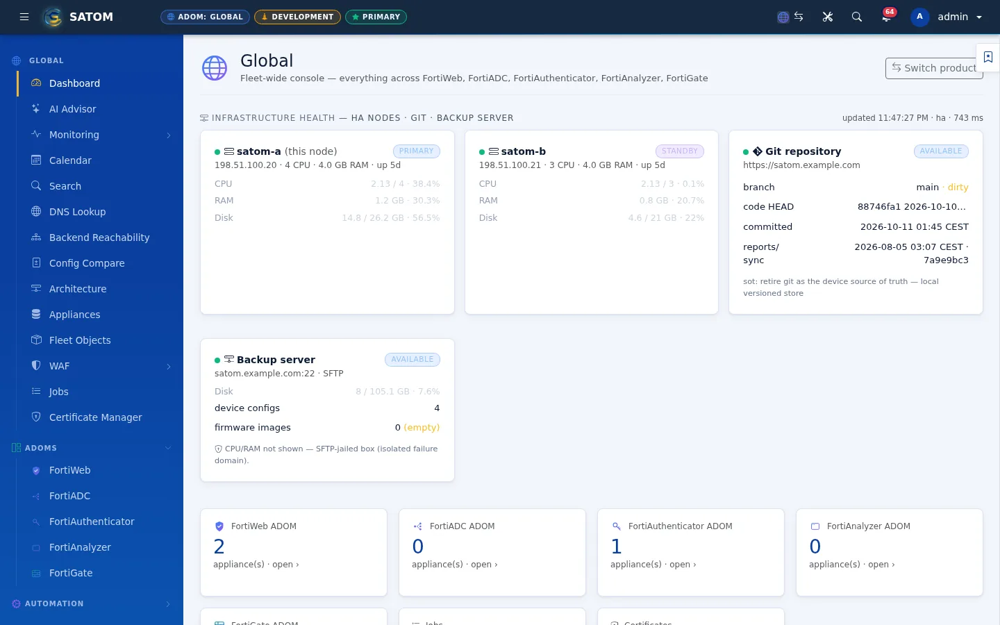
The Global dashboard: infrastructure health, one tile per ADOM, and the global sections.Each product workspace mirrors its appliance's own GUI menu, so an operator who knows the device knows where to look. How that menu is built differs by product (§3.2); §17 covers what each workspace adds beyond the shared pages.
Switch ADOMs from the product selector or the ‹ Global link at the top of
each sidebar. The ADOM is per browser tab — you can keep FortiWeb open in
one tab and FortiADC in another; switching in one tab never changes the other.
Data is strictly scoped: a FortiADC session sees only FortiADC jobs,
notifications, templates and appliances (and vice versa); Global sees all.
A profile can be confined to some ADOMs (§26.3). Then the selector and the sidebar offer only those ADOMs, opening another one is refused, and the Global console shows the union of them — their devices, records, jobs and counters — never the whole fleet.
Most per-device pages read an implicit device context rather than asking which appliance you mean on every page. That context is one slot per ADOM: picking a FortiWeb on the Service Diagram and picking a FortiAuthenticator on the FAC dashboard are two independent choices, and neither disturbs the other. The Global console reads FortiWeb's slot, as it always has.
An ADOM that holds exactly one appliance does not ask. With no choice to make, that appliance is the context on every page of the ADOM — the dashboard and the menu alike. It is a resolution, not a selection: nothing is written to your session, so the picker still shows what you actually chose and the Select button still means something. From two appliances up, the choice is real and the pages ask for it.
An appliance in maintenance mode is counted only for operators who may see maintenance devices, so this can never hand you a device the picker hides.
In the FortiWeb, FortiGate, FortiAuthenticator, FortiADC and FortiAnalyzer ADOMs the sidebar has one device menu, named after the product, and it is the device's own menu: the groups, sub-menus and pages the Fortinet GUI shows, in the device's order. SATOM does not keep a menu of its own for these products. It builds the menu from the GUI layouts measured on real firmware builds, which reach the node through the knowledge packs (§22.4), so the menu follows the selected device (§3.1):
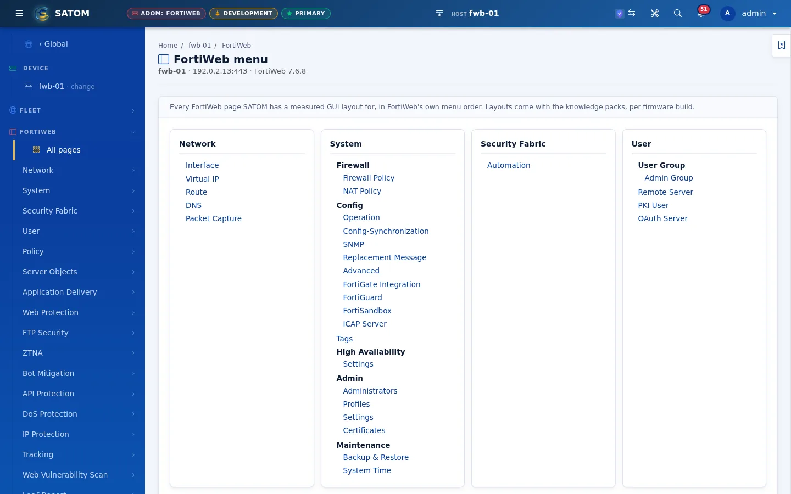
FortiWeb ADOM, device fwb-01: the FortiWeb group is FortiWeb's own menu; All pages lists every page by group.Pages open SATOM's GUI pages (/workspace/<id>/fwgui/<page>): the device's
structure (tabs, columns, dialogs and fields, with their show/hide rules)
inside the SATOM frame, and the SATOM tools on top. FortiWeb's Server Policy
keeps its own hand-tuned view (§5).
The old SATOM menus are gone. The FortiWeb ADOM no longer draws the Loadbalancer (Server Objects), WAF (Web Protection Profile, Web Protection, the protection areas) and Configuration groups, and the FortiGate and FortiAuthenticator ADOMs no longer draw their former SATOM section menus. The Classic view button is gone from every list and settings page too. What moved and what did not:
When there is nothing to draw. In the FortiWeb ADOM, with no device selected or no layout imported for it yet (fresh install, offline node, no knowledge pack), the FortiWeb group keeps one entry, Server Policy. It opens the device's Server Policy view, SATOM's own Server Policy list with a notice when no layout exists, or the Service Diagram, where you pick a device, when none is selected. The FortiGate and FortiAuthenticator ADOMs draw no device group in that case. Their dashboards, the page each ADOM opens on, still list SATOM's section pages (§17.2, §17.4).
FortiADC and FortiAnalyzer draw their own menu only where a layout exists. A FortiADC or FortiAnalyzer whose firmware build has a measured layout in the knowledge packs gets the device's menu like the other three. Otherwise a FortiADC keeps a FortiADC group with Signatures only, and a FortiAnalyzer keeps the curated menu of §17.3 (the live JSON-RPC section pages), so neither ADOM ends up empty.
Where the shared groups sit. Every device ADOM draws the same SATOM groups
in the same order around the device menu: Operations first, the device
menu, Administrator, Plugins. Operations opens with the
fleet pages (Dashboard where the ADOM has one, Calendar, Architecture, Service
Diagram, Monitoring, Search, DNS Lookup, Troubleshooting, Fleet Objects and WAF
in FortiWeb and FortiADC, Jobs), then holds Device Backups and Import Backup,
and ends with the Automation sub-menu;
Diagnose Log Collection is in Operations › Troubleshooting (§27). There is
no separate Fleet group, and no separate Automation group in a device ADOM
(the Global ADOM draws Automation as a sub-menu of its Global block, above
Jobs). The API sub-menu of Automation holds the console (Registry &
console, device ADOMs) and Schema builds and Build compatibility (every
ADOM, Global included). System Automations is in Settings → System;
Automation keeps Automations, the work operators schedule (§15).
Appliances is under
Administrator; Certificate Manager is under Automation (Certificate Manager in every
ADOM: live in Global, FortiWeb and FortiADC, drawn disabled with the reason in
FortiGate, FortiAnalyzer and FortiAuthenticator). Administrator is split
into sections — Access, Change Management, Devices, Objects, Studio and System
— and both the sections and their entries are alphabetical in the console's
language; a section with no entry you may open is not drawn. Studio holds
Python Studio (the Script Library and the Python console in one page, §23.3)
in every ADOM, and also Plugin Studio and Lua Studio in Global. The Global ADOM keeps its Global block for the fleet pages
and has no Operations group. A profile that cannot see one of those groups
keeps the entry where it was before — Appliances under
Operations, the API menu (console, Schema builds, Build compatibility) as a
group of its own in a device ADOM and inside the Global block in Global
(registry.view without config_write), Studio as a group of its own, and Process in a group of
its own — so the reorder takes no page away from anyone. Each entry keeps its
own permission; moving it changed where it is drawn, not who sees it.
The Global ADOM has no device menu. It is the fleet-wide console. Its Operations → WAF lists the fleet pages (Overview, Inventory, Profiles, Coverage, Artifacts, Exceptions) but not the three FortiWeb tools above. Those are FortiWeb-ADOM pages, and a link from Global would switch the tab's ADOM without saying so.
Appliances (sidebar → Operations → Appliances in each ADOM, Global → Appliances in
the Global ADOM, or the Global dashboard). The entry is shown to anyone holding
appliances.view; adding or editing a device still needs config_write:
If a new appliance never syncs, check TLS verification first. An appliance that presents a self-signed certificate fails
CERTIFICATE_VERIFY_FAILEDbefore it ever authenticates, so the row sits atunknownforever with credentials that are perfectly good. Either import its CA under Settings → Trust store, or set verification off for that device. This is the single most common cause of a brand-new device that will not come online.
FortiAuthenticator authenticates with a per-user API key, not the login
password: issue one by ticking Web service access on an Administrator
account on the unit, and store that key as the appliance password.
FortiGate likewise takes a REST API administrator token (execute
api-user generate-key <api-user> on the FortiGate) as the password, never
a login password; a read-only admin profile is enough (§17.4).
Editing an appliance keeps its stored credentials, which nobody can
read back. Changing its host, port, username or platform — or turning its
TLS verification off — therefore needs the password entered again in the
same save (and the SSH password too when the device has a separate one);
otherwise the save is refused. The same rule applies to
PUT /api/appliances/<id>.
SSH credentials, when they differ from the API ones. The Edit page has two optional fields for the CLI login. Use SSH user, if different from the API user when the API user cannot open SSH. A FortiGate registered with a REST api-user is the usual case. Use SSH password, if different from the API credential when the stored password is an API key, as on FortiAuthenticator. Left empty, SSH logs in with the API username and password. Diagnose Log Collection and Diagnostic Battery discovery (§27) log in with this SSH user and SSH password, and the other read-only SSH sessions also log in as the SSH user. If you change the SSH user while a separate SSH password is stored, enter that password again in the same save (or remove it), as for a username change.
SNMP polling (opt-in). The Edit page also carries the snmp
collector's switch, port (161) and community string — stored like the
passwords, never shown again, removable with its checkbox. Enabling it
needs a community string; it provisions the snmp scrape target at once,
and switching it off disables that target. What is polled and what the
appliance must allow is in §14.7.
2. Test connection — validates REST reachability and credentials.
3. Discovery / Rediscovery — sweeps every registry endpoint and stores the
device's full configuration in the local cache (recorded as a harvest with
trigger rediscovery, so Device health counts it); also records the
firmware. Hardware is NOT collected here: use Scan hardware (SSH) on
Device health (FortiWeb only: the scan is the FortiWeb diagnose hardware
battery, so the button is not offered in the other ADOMs). Run it after registering and after any large out-of-band
change. With Capture full WPP + policy depth on, the deep pass shows which
server policy or WPP it is walking and how many are left.
4. Deep capture — a deeper sweep that walks each server policy's whole
object graph (pools, members, WAF profile sub-policies…). This is what
powers the DB-first policy detail and the Service Diagram. Can run
fleet-wide and is normally scheduled nightly.
5. Factory catalog (the device's Web Protection Profile list in the
FortiWeb menu → Factory catalog, or Template Library → Factory catalog;
needs View registry) — the FortiWeb
predefined Web Protection Profiles, stored once per firmware version,
build number and REST API version. The first deep pass on a build reads
them in full; later deep passes rebuild a predefined profile from the
catalog when the appliance's own rows match, and read it in full again once
a week. Turn on Re-read predefined WPPs in full on the Rediscovery page to
read them now. On the catalog page you can open a profile's full tree,
compare the same profile between two builds (what the vendor changed in
its defaults), and save an entry as a template, stamped with that
firmware and API version.
Each appliance's detail page is the hub for device-level actions:
get system status,
HA status, routing table, sniffer…) plus a command box. Destructive CLI is
not offered. Only get, show and diagnose are accepted. A diagnose
command whose name changes the device (kill, clear, reset, delete,
failover, sysrq/crash, set, enable/disable, format…) is refused, including
abbreviations such as diag sys kil. Running a command (even a read-only one) needs Run appliance
actions (appliances.apply); without it the console link is not shown and
the page lists the presets with a read-only notice.Capacity limits (Administrator → Capacity) define per-model object ceilings; clone and exception workflows check headroom before creating objects.
Every action on a device is a job. Test connection, console commands, restores, failovers, saves in the Workspace and the object editor, certificate pushes, searches on the box: each one runs in the background and shows what it is doing.
GET /api/v2.0/cmdb/server-policy/policy · 200 ·
310 ms. The page gets its normal result when the action ends, even if
you went to another page in the meantime.FortiWeb ADOM → sidebar group FortiWeb → Server Policy (the device's own menu, §3). The page is drawn in FortiWeb's own layout for the device's firmware build: the same toolbar, the same columns in the same order and the same row behaviour as the appliance GUI, inside the SATOM frame. The layout comes from the knowledge packs (§7.4 explains the banner above the table).
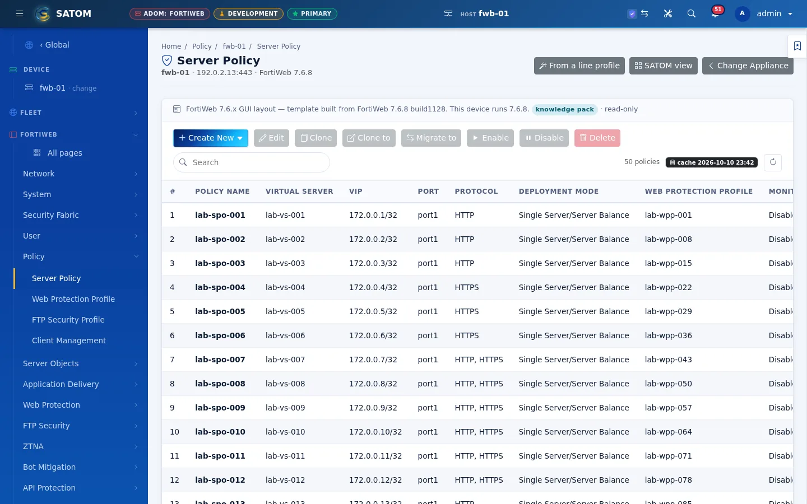
Server Policy on fwb-01: FortiWeb's toolbar plus the SATOM actions, and the cache badge.config_write). The VIP and Port columns are joined from the
policy's deep capture; a policy without one shows — there./regex/).
Filters below the toolbar adds VIP / IP, backend pool, backend server IP,
certificate type and status; the VIP and backend filters read the deep
capture.FortiWeb's toolbar is extended with SATOM's policy actions. Each one acts on the selected rows and always shows a dry-run preview before anything is written:
| Button | What it does |
|---|---|
| Clone | Deep-clones the policy tree on this FortiWeb under a new name (§6). |
| Clone to | Deep-clones the policy tree onto another FortiWeb (§6). |
| Migrate to | Clones onto another FortiWeb and, only if that lands cleanly, disables the source. The source is never deleted (§6). |
| Enable / Disable | Turns the policy on or off. Disable stops the traffic and keeps the object. |
| Delete | Safe cascade: the policy plus only the objects nothing else uses. Web Protection Profiles, certificates, services and shared objects are kept, and the preview lists both. |
The six actions open SATOM's policy dialog on this page. Its options, preview
and background job are the ones described in §6. A link to
…/workspace/<id>?act=<action>&policy=<name> opens the list with that dialog
already open for that policy. Clone to and Migrate to stay disabled
while no other FortiWeb is registered. A user without config_write sees the
list without the action buttons.
The page header adds two buttons:
config_write).Edit opens FortiWeb's Edit Server Policy dialog for the policy's protocol, with the device's own sections, sub-dialogs and inline tables:
When no FortiWeb GUI layout has been imported on this node yet (a fresh install, or the knowledge feed switched off) the list still opens, with a note saying so: FortiWeb 7.6's default columns, the same toolbar actions and filters. Create New then opens SATOM's New Server Policy form and Edit opens SATOM's policy view: rendered from the deep cache with the resolved service topology (VIP + port → virtual server → pool → real servers), Check live health for the real per-backend health-check state, and a minimal-diff edit form with a ＋ next to creatable references.
The old SATOM list at /web/workspace/<id> is gone; the address now opens this
list (an act/policy deep link included).
To enable or disable a policy or a backend, change a backend's IP or port, or swap a policy's certificate at a set date and time, use a Scheduled Action (§15).
/web/workspace/<id>/spo-wizard, reached from the From a line profile
button in the Server Policy page header.
You pick a line, and its profile supplies the network segment, the certificate class and the Web Protection Profile. The wizard then runs the whole chain in one order: IPAM reserves the VIP, DNS publishes the name, the CA issues the certificate, and the device gets the objects. The point of the wizard is not speed — it is that a failure halfway through this chain strands a reserved address and an issued certificate that nobody finds by looking at the appliance.
Preview writes nothing. Preview builds a plan and returns every reason
the run cannot proceed, not just the first. It reserves no address, creates no
record, issues no certificate and touches the device only to read it, so it is
safe to press at any time and at any permission level that can already see the
device. Apply is the only button that writes, and it needs config_write.
A blocked plan is never applied — dry run included. There is no "just to preview it" path past a blocker; allowing one is how a blocker becomes advisory.
The name collision is checked live, against the device. The derived object names are compared with the appliance's own object list at plan time, not with a cached copy — a run that dies after reserving an address is worse than one that never started. An unreachable device is itself a blocker, not an assumption that the box is empty. The same live read confirms that the line's Web Protection Profile exists on the device; a missing profile blocks the plan (deploy the template first) instead of failing at the last step.
Names follow Administrator → Naming. Object names are rendered from the
saved Naming patterns and variables for the device's product (§13.3), falling
back to the defaults for any element left empty. When the wizard issues a
certificate, the created policy serves HTTPS with it (predefined HTTPS
service + that certificate).
The port of each domain goes into {port} in the names. Each domain row
has a Port column, and a flow that creates policies through the wizard's
API passes port per domain. Left blank, the port written in the address is
used (shop.example.com:8443); with none there, 443 when the policy carries
a certificate and 80 when it does not, and the plan warns that a name carries
a port nobody typed. The preview prints the four derived names and where the
port came from (given, from the address, default). A name with a
character the devices refuse (anything but letters, digits, _ and -; a dot
from {host} is the usual one) blocks the plan as naming_unsafe. Rewrite it
with a variable.
A segment can hold several networks. On Network Segments each segment
lists one or more networks (CIDR + gateway, optionally an interface of its
own; blank uses the segment's interface). With Reserve the VIP from IPAM,
the VIP is taken from the first network with a free address: if IPAM
refuses one (full, or any other error) the next is tried, and the address step
says which networks refused and why. The preview lists the order. A network no
IPAM backend can serve is reported as a warning ("will NOT be tried"); only
when none can be used does the plan block. The VIP goes on the interface of
the network it came from, and an address released after a later failure goes
back to that same network. A VIP typed by hand must sit in one of the
segment's networks (address_not_in_segment otherwise; {ip}/24 is
accepted). The gateway is recorded with each network; no flow writes it to the
device. Segments saved before this change read as one network, unchanged, and
a CIDR the page cannot parse drops that network only, never the segment.
Line profiles are declared on Global ADOM → Administrator → Line Profiles and are always filed as FortiWeb profiles — the product the wizard reads them for.
It refuses to guess. A segment the chosen line does not receive is refused — the wrong-network failure this feature exists to prevent. When a line offers several segments you choose one; the wizard does not pick for you. A blank hostname means do not publish and never quietly becomes the web address. A backend that cannot write records, plus a requested hostname, is a refusal — not a step that reports success and publishes nothing.
On failure, what was undone and what was left behind are reported as separate lists. Compensation is driven by what the run recorded, never by inspecting the current state of the world:
The result keeps compensated ("we undid this") and stranded ("we did not
undo this") as two lists and renders them separately, because they are opposite
facts and folding them would let a leftover read as a cleanup. The certificate
is deliberately in the second list.
Because Settings → DNS Records is a registry of N backends (§26.9), the wizard offers two selectors — IPAM backend (the address) and DNS backend (the hostname) — each listing only the enabled rows that carry that role.
any (catch-all) when it declares none), because a name is not what decides
which backend answers. The note under each selector repeats the scope of the
current choice and the outcome of its last connection test.A pick is validated, not trusted. The row you name is checked against the same rules Auto uses — read from the same scope column, not re-derived — and each way it can fail has its own code, because each has a different fix:
| Code | Meaning | Fix |
|---|---|---|
backend_unknown |
No such row (it was deleted since the page loaded). | Reload the page. |
backend_disabled |
The row exists but is disabled. | Enable it in Settings. |
backend_wrong_role |
The row does not carry the role you are using it for. | Give it the role, or pick another row. |
backend_out_of_scope |
The row's scope does not claim this zone or pool. | Widen that backend's scope, or pick the one that claims it. |
An invalid pick is refused, never quietly downgraded to Auto — even when a catch-all backend is present that would have answered. A silent fallback would run the work on a backend nobody named while the page still showed the one that was chosen.
A pick overrides the scope choice only; it never widens a scope. The scope
is an earlier declaration by the same operator, and the wizard is not the place
to overrule it by accident. What a pick does resolve is an AMBIGUOUS
tie: both tied backends are in scope, so naming one is a legitimate answer to a
question the configuration left open. That is the selectors' main use case.
Pick-level and scope-level blockers are kept apart.
ipam_backend_rejected / dns_backend_rejected mean the backend you named
cannot do this, and send you to that row. ipam_not_resolved /
dns_not_resolved mean the scope rules produced no single answer, and send
you to the scope rules. Folding them would send an operator who named a backend
off to fix a scope, when the fix is to one row — or to the choice itself.
A chosen backend that cannot act raises a warning, not silence. Choosing an IPAM backend with Reserve the VIP from IPAM switched off, or a DNS backend with no hostname given, warns that nothing will be reserved or published. A control that silently does nothing reads as a control that worked.
Apply writes where Preview said it would. The plan records the backend ids
it resolved, and Apply acts on those ids rather than resolving a second time.
The registry is editable between the two presses, so a second resolution could
answer differently and write to a backend the summary never named. A recorded
null therefore means exactly one thing: no backend carried that role when the
plan was built.
Clone, Clone to and Migrate to recreate a whole policy tree (virtual server, VIP, pool + members, health checks, content routing, and optionally the full WAF profile) on the same or another FortiWeb. Migrate to clones first and disables the source only if the clone lands cleanly; the source is kept, never deleted.
Where to start:
What the guided dialog does for you:
198.51 → 240.51 turns 198.51.100.7 into 240.51.100.7);
when no rule matches, the fallback address is used (default 203.0.113.9).
Single clones can override the suggested IP; bulk clones always use the
rules.A policy's WAF profile is the biggest thing a clone can bring with it, so it is the one decision the dialog always asks about. There are three answers:
| Choice | What lands on the destination |
|---|---|
| Copy the profile subtree | the profile and all of its sub-tables are recreated. The default for a destination that does not have the profile. |
| Create it only if it is missing | an existing profile with that name is left completely alone — object and sub-tables. |
| New, compare and decide | you are shown every change this run would make inside the existing profile, and you tick the ones you want. |
⚠ "Leave the subtree on" is not the same as "only if it is missing". With the subtree on, an existing profile object is left alone but its ~40 sub-tables are still classified one at a time — so a signature list the destination profile lacks gets added to a live, possibly shared, profile. If that is not what you want, pick only if it is missing.
Reuse a profile the destination already owns. Instead of copying anything,
you can point the cloned policy at a profile that is already on the destination.
The subtree is pruned and the policy's profile field is rewritten — pruning
alone would leave the copy naming the source's profile, which the appliance
answers with -651.
This is the only clone mode that edits a live object on purpose, so nothing is ever pre-ticked and the pre-flight says WARN, never ok.
You are shown two kinds of offer:
field: destination -> source;Every box you leave unticked is a "keep the destination's own", and since 1.12.0 that answer is carried through completely:
create describes a write that will not happen, and
every count, report and verification reads the plan;The run report names all three outcomes, so you can check the answer you gave against what the run actually did:
label · field · the destination value that was keptlabel · why it could no longer be createdIf the source changes between comparing and applying, the apply refuses. The comparison and the apply are two requests, and the apply re-plans. Offers are matched by a stable key built from what identifies the object on the appliance — collection, key, parent, kind — never by position. If the new plan offers something your answer never covered, SATOM stops and asks you to re-run the comparison. "Never shown, so skip it" would write nothing you saw and call the run green; "never shown, so take it" would write something you never saw at all.
unknown is reported as unknown — it is not folded into either answer. It
is off by default because a bulk run means one timeout per policy per member,
and because it sends traffic to third-party hosts.The appliance enforces uniqueness on a natural key — a subset of a row, not the whole row. So a destination row with the same key but different content used to be invisible to the planner and present to the box: the plan said create, the appliance refused the duplicate, and the destination went on serving the old value under a green run.
Such a row is now planned as update and written as the minimum edit — the destination's row with the source's non-empty fields laid over it, addressed by the destination's row id. A blank on the source means "this box does not use this field", not "erase what the other box has".
Consequence, stated plainly: a reconciled row is not a byte-for-byte copy of the source row. It is the destination's row carrying everything the source names. A row that must match exactly has to be deleted and re-created, and the cloner never deletes.
Turning reconciliation off does not silently skip those rows — it refuses the apply. A skipped row leaves the destination serving the old value under a run that looked successful.
Bulk and the single-policy dialog go through the same function, so every option described above is true of a 60-policy run and of one dialog.
Object pages are drawn from the device's own menu. In the FortiWeb ADOM the sidebar group FortiWeb lists every page SATOM has a measured GUI layout for on the selected device's firmware build, in FortiWeb's menu order (Server Objects → Server → Server Pool, System → Admin → Settings, and so on), and All pages shows the same menu as a grid. The layouts come with the knowledge packs, so the menu follows the build the device actually runs.
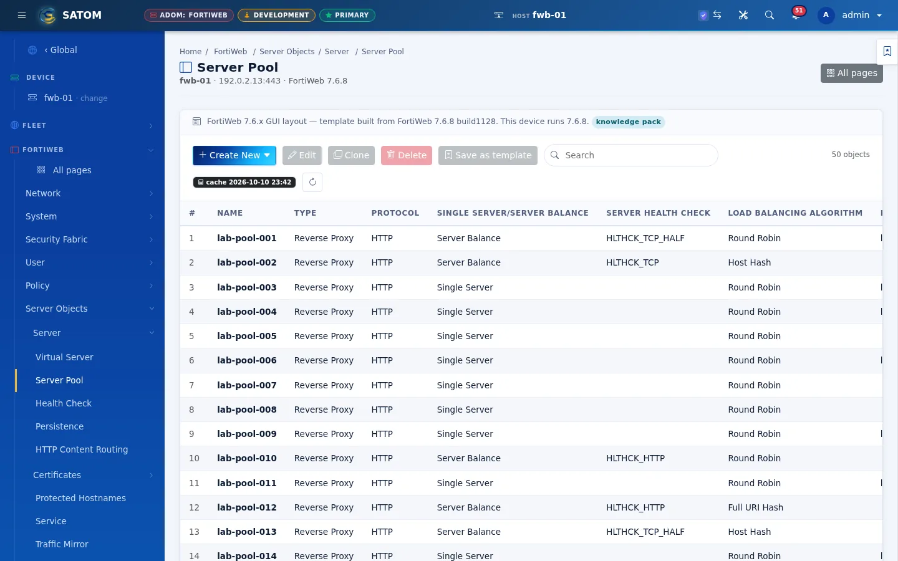
Server Pool on fwb-01: FortiWeb's toolbar and columns inside the SATOM frame.config_write).
FortiWeb's predefined entries are read live from the device instead, carry a
live badge and are read-only.Opening an object shows the dialog FortiWeb opens for it: its sections, tabs, folding blocks and inline tables, laid out for the device's build. §7.4 explains the banner and the badges, and §7.5 explains how Save works.
The stacked panel, and the Create New button that FortiWeb lacks, use
SATOM's own object editor (objedit):
A reference field does not take free text: it names an object that must
already exist on the appliance (a URL-rewrite policy, a user-tracking policy, a
certificate…). If you save a name the device does not have, FortiWeb refuses the
whole save with errcode -651: Invalid input value. — a message that names
neither the field nor the value, and that also discards the correct fields you
changed in the same save.
SATOM asks the appliance first. When a value is not there you get a refusal that says which field, which value, which collection, and which names do exist:
subresource-integrity-policy: "admin" — "waf/subresource-integrity-policy" has no configured objects on this device, so there is nothing "subresource-integrity-policy" can name yet
Three things worth knowing:
unverified_refs); the
device remains the authority and will still answer -651 if the value is wrong.A field that offers a dropdown is a reference field. A few fields that the appliance treats as selects still render as text because the collection they draw from could not be confirmed on this firmware — those are passed to the device unchecked, exactly as before.
Delete refuses while another object still names the one you are removing. The appliance keeps its own count of references, and SATOM reads it before sending anything:
refusing to delete "urw-full": it is referenced by 2 object(s) — inline-protection(wpp-full-lab), inline-protection(wpp-pol-shop-cms). Remove those references first, then delete it.
Why this exists: FortiWeb does not reliably refuse deleting an object that is in use. When it accepts one, nothing fails — the profiles and policies that named it keep pointing at a name that no longer resolves, and you find out when traffic breaks.
What to expect:
To remove an object that is genuinely referenced, clear the references first —
the message names where to look. If you are certain the appliance's count is
wrong, the delete endpoint accepts force: true; forced deletes are recorded
in the audit log as ref_check=forced.
Every Save is also checked against the appliance's exact firmware build (see Build compatibility). The preview shows the result above the request, in a yellow box (red when it blocks):
token-secret does not exist in …: it will be
skipped — the field is removed from the write instead of being sent and
silently dropped by the appliance (FortiWeb answers 200 for a field it does not
have). When SATOM knows the new name it says so in brackets. If every field
you changed is missing on that build, the save is refused.Refused by the build compatibility check: …); the dry run still shows it.On some builds some settings exist only in the CLI. For those fields the editor uses the CLI writer (CLI writer):
config / edit /
set / next / end; secrets masked). A dialect not yet verified on a lab
box is labelled dialect not lab-verified.abort —
nothing half-applied — and the card says CLI refused: … and whether the
readback confirms nothing was applied.Today this rarely shows: FortiWeb 7.6.8 and 8.0.6 have no CLI-only field, so
every FortiWeb field still goes by REST. Fields SATOM cannot classify on the
build are listed as Not known on this build (sent by REST as before). The
permission is unchanged (the editor's write permission); every CLI write is in
the audit log as config.cli_write, with field names and the outcome, never a
value.
The cards above belong to SATOM's object editor (the stacked panel and the SATOM editor pages). On a page in the device's layout the same split runs on the server, and the Server Policy dialog marks such a field CLI in the Channel column of its review (§7.5).
On FortiGate and FortiAuthenticator pages in the device's layout, the "Not in GUI, but in CLI" section is part of the form, as on FortiWeb (§7.6). On the FortiADC and FortiAnalyzer tabs, the section is itself the editor of those fields (Read values over CLI, Preview CLI change, Apply). Objects only the CLI serves are edited the same way on the device's Not in GUI, but in CLI page (§7.7). On FortiAuthenticator they are also edited on the menu page that hosts them, which says Served only by the CLI on this build.
The note above every list and dialog names the layout it is drawn from: FortiWeb 7.6.x GUI layout — template built from FortiWeb 7.6.8 build …. This device runs 7.6.8. A knowledge pack badge means the layout came from an imported knowledge pack. Hover the badge to see where it came from. When the fit is not exact, the note becomes a warning:
| Banner | Meaning |
|---|---|
| No layout was measured on … itself; this one is from …, the closest build of the same train | Fields this device has and the layout does not place are listed under Not in GUI, but in CLI (§7.6). |
| This layout was built from … Newer firmware adds or renames fields … | The device runs a newer build than any layout. Fields the newer build adds are not shown in the form. |
| … older than every layout template … Some fields shown may not exist on this firmware | The device runs an older build than any layout. |
| The firmware of this device is not known yet | Run a firmware check on the device. |
| Operation mode not cached for this device | Fields that depend on the operation mode are shown and marked. |
Fields show and hide as you edit, the way FortiWeb's GUI does: every field and section carries FortiWeb's condition, and the device's facts are already applied. A condition SATOM cannot evaluate leaves the field shown. When FortiWeb would hide fields for the current values, the title bar says N fields hidden by FortiWeb for these settings.
Badges next to a label:
| Badge | Meaning |
|---|---|
| conditional | FortiWeb shows this field only under a condition SATOM cannot evaluate here. Hover to see what it depends on. |
| key not measured | The GUI crawl could not tell which REST field this control shows. Hover to see the candidates. |
| choices not measured | FortiWeb offers a list of choices the crawl could not read. Type the value the way the CLI takes it. |
| No API on this build (GUI only) | The field has no API on this build. It is shown the way the GUI shows it and is never saved. A whole page can be GUI-only too, and is then drawn read-only. |
| read-only / an endpoint name | FortiGate and FortiAuthenticator: the GUI draws the field read-only, or saves it into another object that is edited on its own page. |
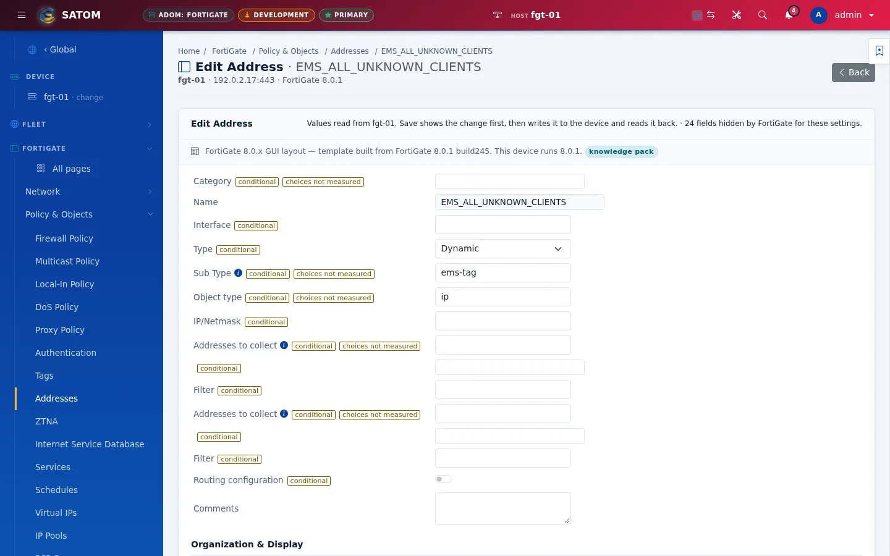
Edit Address on fgt-01: conditional fields and "choices not measured" badges.A settings page (a single object such as System → Admin → Settings) adds Save as template, which captures the whole object as a pending template, and ⟳, which refreshes it from the device, to the page header. The section's config template library is listed below the form.
The same sequence runs on every page in a device's layout. Nothing is written before you have seen the change.
REST, REST (GUI API) or CLI). An Endpoint column appears when more
than one object is involved, and the raw request is folded underneath. Choose
Back to the form or Apply to The channels then split. REST fields go by REST. Fields the build serves only by CLI go through the CLI writer over SSH, and only after the REST part succeeded. If REST fails, the CLI part is not sent. The Channel column of the review names the CLI fields of every object in the change, a bound object's included. 6. After a successful apply, SATOM releases your edit lease on the object (a row of an inline table leaves its parent's lease alone), updates its copy and the page reloads. FortiGate and FortiAuthenticator pages re-read the object from the device. If the device stored a different value, the page says Saved, but the device stored different values: ….
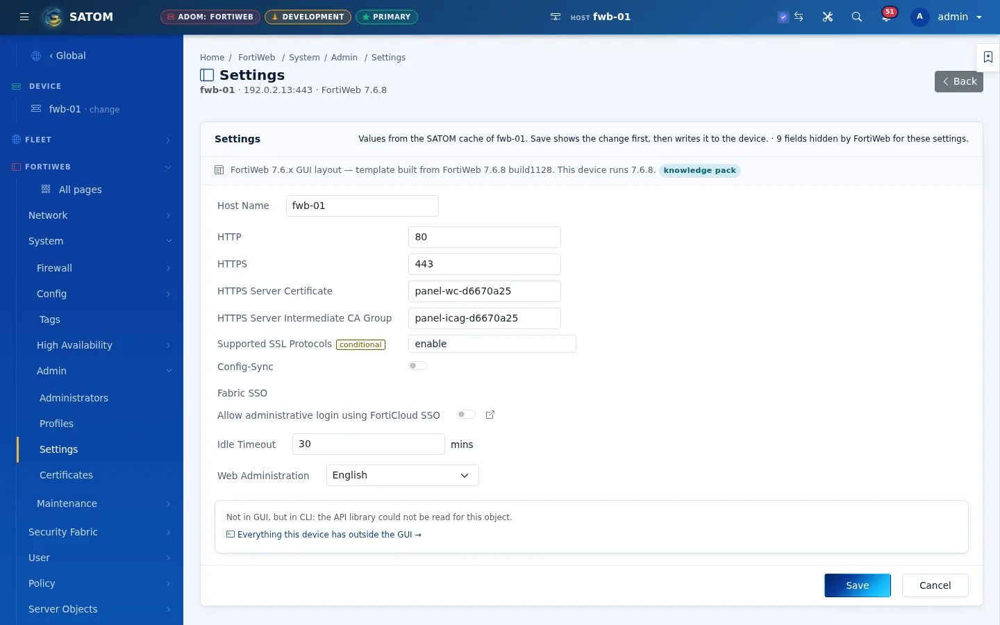
System → Admin → Settings on fwb-01, with "Not in GUI, but in CLI" below the form.Every object editor, for all five products, ends with a collapsed section titled Not in GUI, but in CLI (n). SATOM shows every field the device has on its exact build. A field the Fortinet GUI does not show is never dropped and never merged into another group: it goes here. The section is always drawn, even when it is empty. An empty section says why: every field is in the GUI, or the page's GUI layout has not been measured yet.
Two kinds of evidence decide what is "not in the GUI":
Each field carries the channel SATOM writes it by:
| Badge | Meaning |
|---|---|
| REST | The REST API serves it. A normal Save writes it. |
| CLI | This build does not serve it over REST. Save writes it over SSH through the CLI writer. |
| unverified on this build | No source measured the field on this build. It is shown, never hidden. It is not written until a channel is measured. |
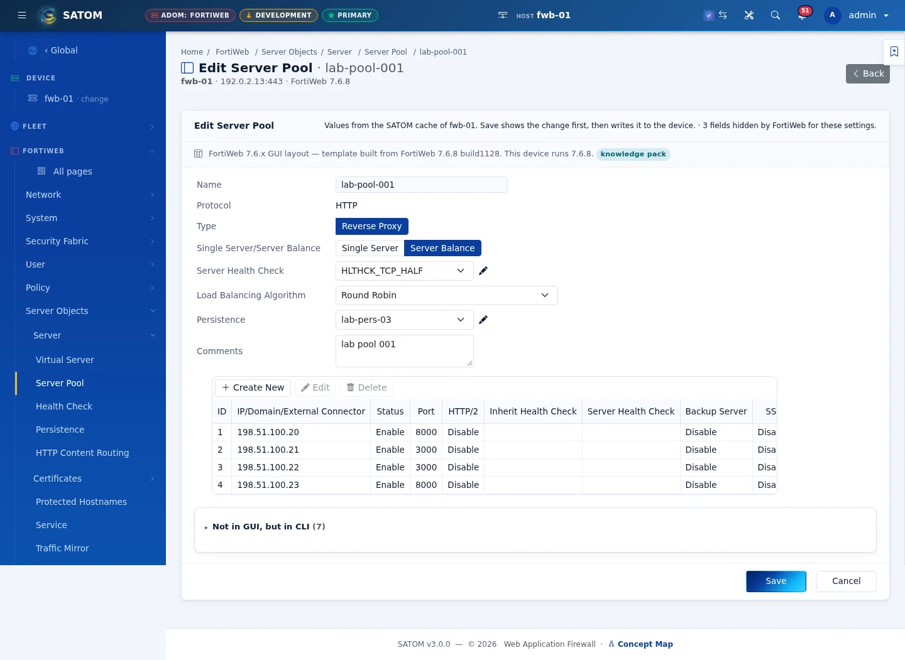
Edit Server Pool on fwb-01: the member table and the collapsed "Not in GUI, but in CLI (7)" section.In an editor you can write to, the fields in the section are part of the form, and Save sends them with the rest (§7.5). On a Create New form, a CLI-only field says set it once the object exists.
Read values over CLI appears when the section has CLI fields and the
object exists. It reads their current values over a read-only SSH session
(show full-configuration) and fills them into the inputs; a value you leave
unchanged is not sent back. Secrets are never returned: their input says
secret — not shown. Reading needs only view permission. Nothing is written.
Where a view has no editor of its own (the FortiADC and FortiAnalyzer tabs, objects only the CLI serves, read-only users), the section is a table of Field / Channel / Type / Value:
config_write, each CLI field is an input. Name the row (and its parent
row, for a nested table), then use Read values over CLI, Preview CLI
change, which shows the script, and Apply.appliance.not_in_gui.save.Appliances → device → Not in GUI, but in CLI (/appliances/<id>/not-in-gui)
lists everything the device's build has outside the Fortinet GUI, in one
place. Every section in the views links to it as Everything this device has
outside the GUI →. The same inventory is on the console, without the values
and the editor: sudo satom get device not-in-gui <device> [--endpoint <key>].
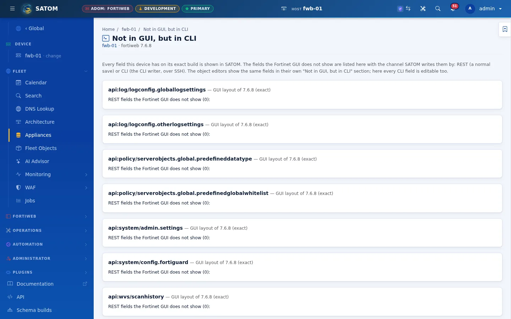
The per-device page for fwb-01: layout-measured pages, CLI-only objects and CLI-only fields.system/dns). Each one is editable as described in
§7.6.If the device's running build is unknown, the page asks you to run a firmware check first. For a product with no measured GUI layout and no measured CLI tree, the page says that SATOM cannot split GUI fields from CLI-only fields yet. In that case every field the REST API returns stays in the object views, and nothing is hidden.
In the FortiWeb ADOM, the Web Protection pages belong to the device's own menu: the FortiWeb group in the sidebar. SATOM builds that group from the measured GUI layout of the selected device's firmware build (the layouts come with the knowledge packs). The pages therefore have the same names and sit in the same places as in that FortiWeb's GUI. Web Protection Profile is under Policy (Inline / Offline tabs). The protection areas are under Web Protection. On a 7.6 build these are Known Attacks (Signatures / Custom Signature), Protocol, Access, Input Validation, Cookie Security, Advanced Protection and Data Loss Prevention. Another build shows whatever its own GUI has. All pages at the top of the group lists every page in the device's menu order.
The old SATOM WAF group of the FortiWeb ADOM (Web Protection Profile, Web Protection and the protection areas) is gone. Its links still work: an old URL redirects to the device-menu page that draws the same collection. With no device selected, or no measured layout for it yet, the FortiWeb group shows only Server Policy. A collection that no measured page draws yet has no menu entry until its page is crawled. The fleet-wide WAF pages and the device-scoped WAF tools (Search Attack ID, Exceptions & Signature, WAF Artifacts) are under Operations → WAF (§13.1, §13.2).
Web Protection Profile is a FortiWeb-layout list, with the SATOM tools the old profile page had:
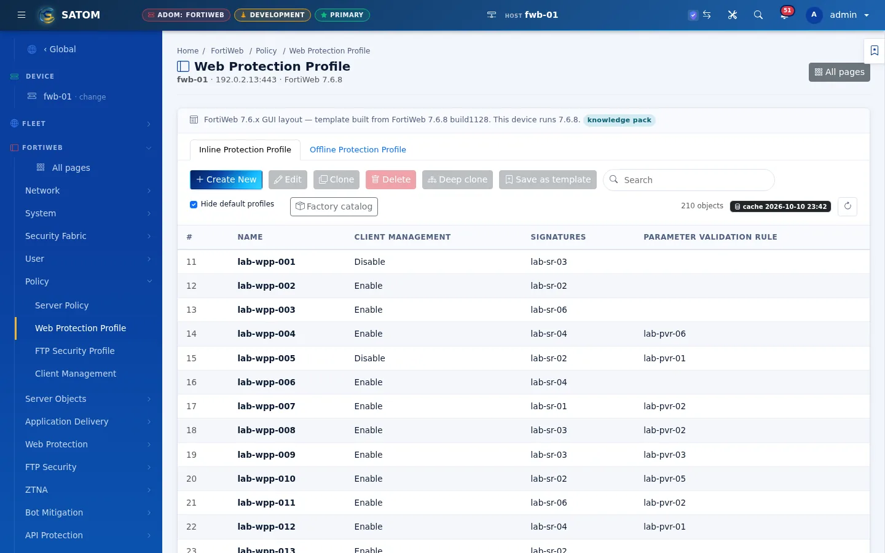
The Web Protection Profile list in FortiWeb's own layout, with SATOM's profile toolsKnown Attacks → Signatures is a FortiWeb-layout list as well. Each signature policy opens in the FortiWeb-layout object editor.
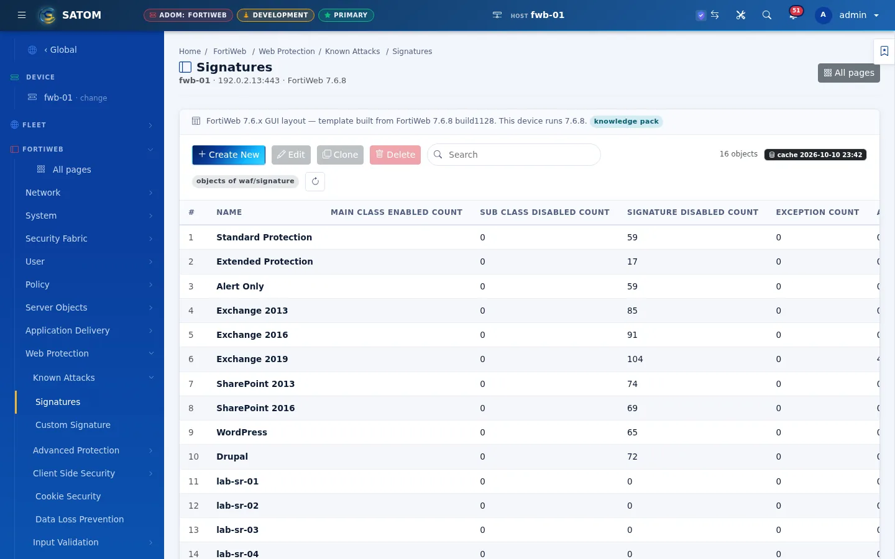
Known Attacks → Signatures, drawn from the device's own GUI layoutSATOM's own tools are still served:
/web/web-protection/<device id>/signatures/<signature policy>..* button. That button opens the lab on the field and
writes the tested pattern back into it. The lab tests patterns server-side with curated
examples per section. Its rewrite preview numbers captures the way FortiWeb
and FortiADC do: $0 is the first ( … ) group, $1 the second.Every FortiWeb downloads its own signature database from FortiGuard. SATOM does not ship signatures, and new signatures need no SATOM release or pack. SATOM reads them off a device instead.
The signature source. On Administrator → Signatures, choose one FortiWeb as the signature source: one with a valid FortiGuard licence that updates on schedule. Save and collect now reads its whole signature catalog right away. This runs as a background job, which the job dock tracks. The read is REST and read-only:
| What | How |
|---|---|
| Database versions | GET /api/v2.0/system/config.fortiguard returns, in one call, the attack-signature DB and the other databases the firmware reports (antivirus, IP reputation, GeoIP, known bots…), with their last update and licence validity. The fallback is diagnose system update info over SSH (signature DB only). |
| Catalog | waf/signature.advanced.dictionaries + .details: every main class, sub-class and signature with its description |
The signature index. SATOM indexes each read locally: every signature id with its class, description and lineage (the DB version it first appeared in, last seen, removed in). It also keeps a snapshot per database version.
The page searches the index by id, description or class (removed signatures on
request). The index also rewrites the catalog that the signature editor and
the WPP views read. The signature_sync scheduled action collects too, but
only from the configured source. It refuses any other target, so another box's
older database can never appear as a fleet change.
Freshness, every FortiWeb. The daily scheduled action signature_check
reads the database versions of every FortiWeb (one REST call per box) and
records when they last changed. When the source's signature version is not
the one the index holds, it collects and indexes the catalog in the same round.
A failed catalog read makes the round red.
The page lists every device with:
rest or cli);The alert engine (§26.6) raises a device alert in any of these cases:
These alerts share the family, toggle, routing and cooldown of the other
device-health alerts. The limit is the setting alerts.signature_max_days.
FortiWebs registered with no signature source, or with a source that no
longer exists, raise device.signature_source_missing. Devices in
maintenance are skipped. A node updated from 2.x has no signature_check row
until you create it (sudo satom execute seed actions --yes on the primary,
§22.4).
A knowledge pack can carry signature metadata: public FortiGuard encyclopedia data (name, severity, category, CVEs, a link). None does yet, because FortiGuard's terms do not permit redistributing it, so the section ships empty until they do. When a pack carries it, the signature search shows a severity badge and the CVEs next to each id it knows, and the signature's details add a FortiGuard row. Ids with no metadata show as before.
Exceptions & Signature is the single place to author every policy-bound
carve-out (WAF exceptions and signature customizations) for one FortiWeb.
It is in the Operations → WAF submenu of the FortiWeb ADOM, next to Search
Attack ID and WAF Artifacts. It is not on the Global console's WAF menu,
because it is a FortiWeb-ADOM page and a link from Global would switch the
tab's ADOM. The URL is /web/exceptions/<device id>.
The page always works on one device: the one selected in the FortiWeb ADOM
(§3.1). Pick it on the Service Diagram or with change next to
the device name at the top of the sidebar. If no device is selected,
/web/exceptions/ sends you to the Service Diagram to pick one.
The page title names the device: Exceptions & Signature Carve-outs —
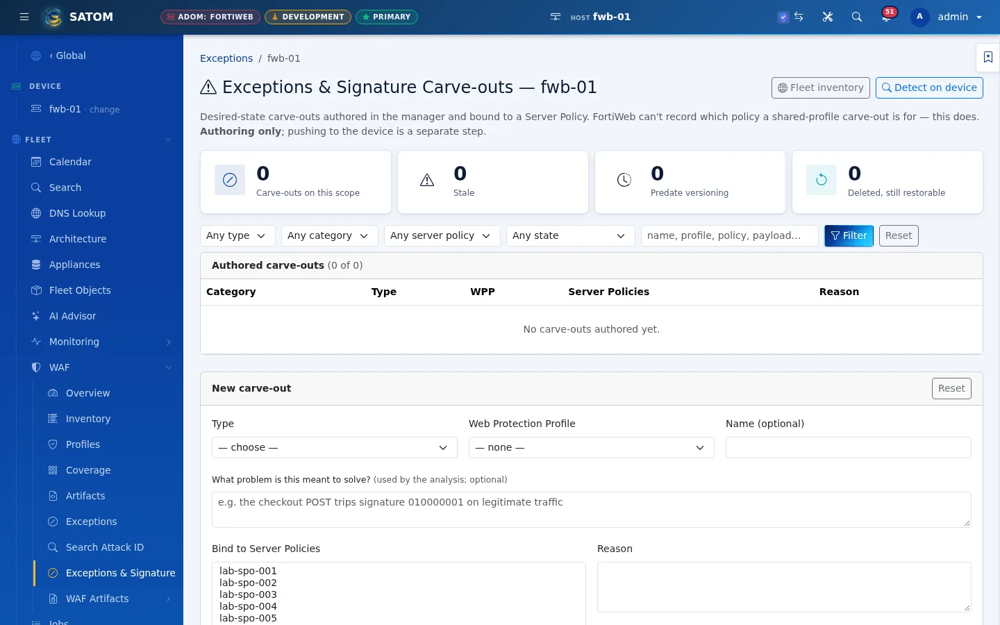
Operations → WAF → Exceptions & Signature: the carve-outs authored for fwb-01The team rules the app enforces:
Other tools on the page:
advisor.use.Authoring, injecting, deploying, deleting and detecting need config_write;
without it the page is read-only and those buttons are hidden or disabled.
Deleting always goes through the impact check (the guarded delete).
When FortiWeb blocks a request it shows the caller a block page carrying an
Attack ID (000000004106). That number is the only thing the person who
was blocked can give you, and on its own it says nothing. Search Attack ID
resolves it. Paste the reference from the block page and SATOM finds the
attack-log entry it refers to. The whole triage is then on one page: what was
blocked, why, whether it should have been, and the exception that would let it
through if it should not.
Search Attack ID is in the Operations → WAF submenu of the FortiWeb ADOM
(/waf/attack-search/). It does not depend on the device selected in the
sidebar: the reference chooses the appliance.
id-<device>-<number> (for example
id-fwb-01-000000004106), names the appliance. SATOM matches it against
appliance names, ignoring case. If no name matches, SATOM tries management
addresses and warns that the device may have been renamed since the block
page was served.000000004106, or unpadded 4106) names no device. Pick the
appliance yourself.Opening the page, searching, explaining a field and building a carve-out need
only the view permission. Analyze and Ask the AI about this field
need advisor.use. Saving a carve-out, accepting or rejecting a drafted one,
and inserting it need config_write.
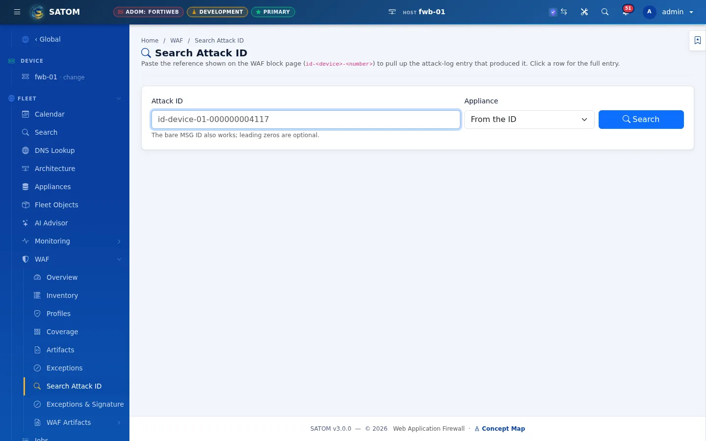
Operations → WAF → Search Attack ID in the FortiWeb ADOMEverything on this page reads. Nothing is pushed to an appliance until you explicitly ask for it in §9.6, and no draft leaves the page approved.
The results table lists date, MSG ID, type, subtype, policy, source and destination address, and action. If the ID matches nothing — a stale block page, the log rotated, the wrong appliance — you get the most recent entries instead, in the same columns, so the page never answers with an empty box you cannot act on.
One extra column matters before you touch anything: the Web Protection
Profile behind each policy, and whether it is shared. A profile that only
this Server Policy binds takes an exception in one click. A profile that four
sites share does not — see §9.5. The column names the other policies when it is
shared, and reads unknown when SATOM could not read the bindings off the
device, because "could not ask" and "binds nothing" are opposite facts.
Click any row and a panel slides in from the right with the full entry — around twenty-two fields, each on its own line. Two icons sit beside every one:
This path explains and cannot author: it is told not to draft a carve-out, none is returned to the screen, and one drafted anyway is dismissed rather than left waiting as an unreviewed proposal.
Every analysis on the page — local or AI — is stamped with the same line:
engine, elapsed time, and tokens. no tokens means it was computed locally and
spent none; tokens not reported means the provider did not say, which is not
the same claim as zero. Failures are stamped too: a provider that burned forty
seconds and then failed still burned them.
Below the entry sits the carve-out builder. It opens with a proposed kind of exception and the scope already ticked, and tells you why for each box.
Everything stays editable — this is a starting point, not a decision. Only fields that narrow are ever pre-ticked, so the default cannot widen a carve-out, and unticking immediately restores the explanation of what is now missing.
Preview assembles the payload on the server from the row the appliance returned, and shows you the route (policy → profile → module → type), the breadth — what stops being inspected and what still applies — and the exact body. Breadth is computed from the payload, not from the type: a signature exception is the narrowest thing there is only if it names an element.
Analyze sends the entry to the Advisor and returns a verdict
(false-positive, true-attack, or uncertain), a risk level, and — when
it judges the block a false positive at low or medium risk — a drafted
exception you can accept, adapt, or reject.
The verdict advises; you authorise. You can author a carve-out the Advisor
did not recommend — the common case is a real attack pattern that a known
caller must be allowed to send — but contradicting the verdict (a true-attack
reading, or a high/unacceptable risk) requires a written justification of at
least twenty characters, stored on the rule and in the audit log. Refusing it
outright would not prevent the exception; it would move it to the CLI, where
nothing records why.
An exception lives on the Web Protection Profile, and FortiWeb records nothing about which Server Policy it was authored for. So a carve-out on a profile that four sites share applies to all four.
SATOM reads the bindings off the device and resolves one of four states:
| state | what happens |
|---|---|
| exclusive — this policy owns the profile | authored directly; no clone, because there is nothing to protect it from |
| shared — other policies bind it too | refused, naming the other policies, with the guided clone offered |
| template-managed | refused the same way (team rule 1, §9) |
| unknown — the device could not be read | treated as shared. Unknown is never assumed safe |
The guided clone derives a policy-specific profile, re-binds the Server Policy to it, and authorises the exception there. The clone is a real write to the appliance and is never implicit — it happens only when you ask for it in the same action.
The copy is deep. A profile is not one object: it names roughly forty
sub-policies, and a carve-out physically lands inside one of them. A profile
that shares its sub-policies therefore shares every carve-out written into
them, and a clone that copied only the top object would look isolated while
leaking exactly as before. So every sub-object the new profile may own is
recreated under this policy's own name — am-shop becomes
am-shop-pol-shop-cms — and the references are re-pointed to the copies.
Three things are not copied, and SATOM says so before it writes anything:
| left shared | why | can you override it? |
|---|---|---|
predefined objects (Standard Protection, Predefined - Known Bots…) |
a copy stops receiving FortiGuard updates | yes, object by object |
| objects an approved template governs | copying takes this policy out of the template without anyone deciding to | yes, object by object |
| anything whose parent stays shared | re-pointing a reference is a write to the parent, so the copy would push the new name into an object other profiles still read | no — it is a consequence, not a choice |
The Exceptions page previews the clone first: what will be copied, what will stay shared, and the reason for each. Applying a plan that leaves anything shared takes an explicit confirmation, because a profile that is isolated in most places is not a state you can reason about three months later.
Capacity is checked for the whole plan, per object type, before the first write — a clone that dies half-way is not re-bound, and its orphans have to be found by hand. Object types with no configured limit are listed as unchecked rather than passed over quietly.
Saving a draft on the Exceptions page (§9) warns rather than refuses: a draft in the database lets nothing through. The Attack ID page refuses, because it is one click from a push. The push itself refuses hardest — that is where the leak physically happens.
Insert is two steps on purpose. The first returns the exact method, endpoint and body SATOM would send, and writes nothing. The second sends it. Approving a rule and approving a specific POST against a production WAF are different acts. It uses the same planner as the Exceptions page.
Every search, every field question with its question text verbatim, every analysis, and every decision goes to the audit log. Accepting a proposal records both the payload the model proposed and the one you approved — those are different facts and an auditor needs both. Rejecting one is recorded too, not erased.
A FortiWeb answers a write carrying a field its build does not know with 200 and discards the field — so a carve-out authored on one build and pushed to another can land without the very field that made it a carve-out, and report success. Every carve-out (and its fleet library item) therefore records the firmware build and REST API version of the appliance it was authored on:
operations.template_approve) can override with a
reason, audited as exception.compat.override.The API sweep does not measure the carve-out sub-tables yet, so most pushes show no evidence for their fields: that is a warning, never a pass, and the gate starts to bite on its own once a sweep or a knowledge pack records those fields. Line Profiles show the build of each line's WPP template and the builds its approval covers.
Automation → Certificate Manager — in the Global ADOM, and in every device
ADOM under Operations › Automation (product-scoped: in the FortiWeb ADOM you
see FortiWeb material, in ADC the ADC material, in Global both). SATOM manages
certificates on FortiWeb and FortiADC only, so the FortiGate, FortiAnalyzer
and FortiAuthenticator ADOMs show the entry disabled with that reason, and
Global's Scan devices skips those kinds instead of listing them as
unreachable. Administrator role (user_manage) required.
superseded) as it leaves the device, never
while it still serves.scripts/opnsense_ca_signer.py.
Set CA to https://<firewall>:<port>, CA name to the issuing CA's
refid, User to an API key whose user has only the System: Certificate
Manager privilege, and the API secret in the password box. The class
template is the OPNsense certificate type (server_cert, usr_cert,
combined_server_client). Submit command:
/opt/satom/venv/bin/python /opt/satom/scripts/opnsense_ca_signer.py sign
--url {ca} --ca-ref {ca_name} --key {user} --cert-type {template}
--csr {csr} --out {out} --pin-sha256 <pin>. Get the pin with
… opnsense_ca_signer.py pin --url https://<firewall>:<port> and compare it
with the firewall's certificate before saving it. The signer checks the pin
before it sends any credential.
The private key stays in SATOM: OPNsense receives only the CSR. OPNsense's
CSR signing drops the request's subjectAltName, so the signer sends the SANs
separately. The signed certificate stays in the firewall's Trust store as
the CA's issuance record.$SATOM_CA_SECRET, so a
submit or revoke command can leave out {password} and keep the secret off
the command line. {password} still works for signers that only take it
there (certipy).The ACME DNS-provider registry lives on the same settings tab
(Settings → Certificate Manager), and it is a registry, not a fixed list.
Each entry is a provider: a slug, a label, the flag the ACME client needs, a
documentation link, an enable switch, a sort order, and its own list of
credential fields. Because the field list is data, adding a DNS provider that
was never shipped is a catalog entry, not a code change.
The node's own certificate is a different concern. This section is about certificates on the appliances. The certificate SATOM itself presents to your browser and to its peer is
Settings → Node TLS(§26.8), and the CAs SATOM trusts when it dials an appliance are the trust store (§10.1). Three different questions, three different pages.
Global → Settings → Trust store (admin).
Every appliance row carries a verify_ssl switch, and until this page existed
it had only two positions: validate against the public roots — which an
appliance signed by your own CA can never satisfy — or validate nothing.
That is why the answer to "the new device never syncs" was always the same
verify_ssl=false, including on devices where verification would have worked.
This page is the missing third position: name the CA and keep the check on.
pip the updater runs), the git remote, SMTP, alert
webhooks, LDAP / Active Directory, the secret vault (unless it names its own
CA), NetBox, ticket trackers, DNS / IPAM providers, the AI and Sentinel
endpoints, App-ID sources and integrations. An internal service signed by
your CA needs nothing but its CA here. A connection whose verify TLS
switch you turned off stays unverified.show full-configuration).
Unlicensed/locked devices are still backed up via SSH..conf files by hand, download or delete rows at will.backups.view, held by read-only too)
lists the vault — metadata only; creating, uploading and deleting need
Create or Restore backups (backups.create / backups.restore);
a download needs backups.create, because it is the full device
configuration. Buttons you cannot use are not shown.users.manage +
backups.restore). Before a live restore a pre-restore safety backup is
pulled over the device REST API; if it cannot be taken the restore is
aborted, unless you tick Restore without a pre-restore backup (for a
device whose REST backup cannot work, e.g. a backup password is set) — that
choice is written to the audit log. For FortiADC the vault works
(pull/upload/download) but config apply has no REST transport — the page
says so honestly.pg_dump of the database plus the reports tree in one bundle,
with a verified restore path. Create backup now also pushes the bundle to
the backup server when one is configured (the box is ticked by default).
Code rollback on the same page is an update to an older commit and obeys
the same staged-rollout safeguard as Software Update → Apply: on a primary
with a standby, roll the standby back first. On a container install both
code rollback and offline update packages are refused with the reason
(deploy a new image tag instead).Off-box copies — the source of truth and the external server. The vault above lives on this node. Two settings decide what leaves it:
Settings → Software Update Repository (§26.4) is the repository this node
downloads its own code from. It is also the transport the shared
release-notes corpus (§31.1) rides on. What still works when that remote is
down, and how to recover afterwards, is
git-backup-and-outage.md. It holds no device
configuration and no firmware.Settings → Backup Server (§26.5b) configures the external SFTP
destination. That server is where the appliances push their own scheduled
config backups, where retired firmware is archived, and it is the target of the
push_server option on the system-backup action and the monitoring reports
(§15, §14.9). The scheduled action device_inspect is the one that
uploads the versioned source-of-truth blobs off-box.Settings → Configuration SoT (§26.5) is where the retention of those blobs
is set — and it is the only one of the three the word source of truth
applies to.How the local source of truth is versioned and what it does and does not hold: source-of-truth-spec.md.
Recovery custody — the sealed envelope. A bundle holds a pg_dump in which
every appliance credential, the node identity key and the backup-server password
are Fernet ciphertext. The key that opens them is FERNET_KEY in .env, and the
internal CA key lives in pki/ — neither is in git, in the HA datasync or in
any bundle, on purpose. The consequence is the part worth remembering: a
bundle restored onto a rebuilt node is a database of unreadable secrets.
SATOM closes that without putting the key in the backup. Both secrets are wrapped
in a scrypt+AES-GCM envelope at data/recovery/seal.json, which the datasync
replicates to the peer within five minutes and every bundle carries off-box from
then on. Whoever steals a bundle holds ciphertext; you, holding a passphrase and
nothing else, can rebuild the installation from any copy.
data/ is overwritten from the primary
every five minutes, so the file would not survive anyway.satom execute seal recovery (re-run at any time; it replaces rather
than accumulates), satom execute unseal recovery, and
satom diagnose recovery, which reports an absent, stale, unreadable or
unreachable envelope. A node with no envelope is noisy on purpose.A bundle puts this deploy back the way it was. To copy a deploy's
configuration into a different installation (lab → production, an old pair → a new one) use a
clone: the two installations keep their own FERNET_KEY, their own identity and
their own HA pair, and no key ever leaves either node.
sudo satom execute clone export --yes. The bundle lands in
data/clone-exports/ and the command prints a passphrase once — it is
stored nowhere.sudo satom execute clone import <file> shows the
plan; add --yes to run it (the passphrase is asked on the terminal, or read
from $SATOM_CLONE_PASSPHRASE, never from argv).sudo satom execute clone release --yes.
satom get clone status says whether the node is still holding a clone.What travels is configuration only: appliances and their credentials, users, profiles and settings, scheduled action definitions, templates, baselines, exceptions, probes and scrape targets, dashboards, the wiki, the API library; Script Library scripts and schedules; integration hooks; WAF artifacts; branding.
What stays behind:
| Left behind | Why |
|---|---|
Backups: the device vault (data/backups/) and the system bundles |
backups, not configuration |
Config history: the SoT store and the live config tree (data/reports/) |
history of the source's appliances |
| Device cache (objects, snapshots, certificates, hardware, NICs) | the first sync after clone release reads it again from the appliances |
| Runs, logs, samples, incidents, notifications, change requests | the target produces its own |
| Firmware images | the target keeps its own |
| Queued script and hook requests | the target would run them a second time |
The list of left-behind tables is the target's, not the bundle's: a bundle that carries one of them is refused.
How the secrets travel: the export re-encrypts every Fernet token it finds — columns, settings and tokens inside JSON settings — under a one-time transfer key, and seals that key with the passphrase (scrypt + AES-GCM). The import opens it and re-encrypts every token under the target's own key, then checks that the target can open every token in the database and lists any it cannot. A secret kept in the external vault travels as its vault marker; the target reaches it through the same vault configuration, which travels with the bundle, and the export says how many there are.
What the target keeps: its HA role and peer, node certificate and identity key, backup server, signature store, recovery escrow and alert state. Accounts do not stay: after the import you log in with the source's users and passwords, and every browser session opened before the import is logged out — a session names a user by number, and the numbers now belong to the source's accounts.
The import replaces the target's configuration:
satom execute restore db for that). It refuses on a standby.data/clone-prev-<time>/ instead of deleting them; the
directories themselves stay, empty, for the next sync and backup.clone release switches back on exactly what was held — what was already off
on the source stays off — and computes each schedule's next run from now, so
the held period is not replayed.satom execute restore db <safety bundle> --yes, and the
previous file sets from data/clone-prev-<time>/.From the console: Settings → Source of Truth & Backup → Deploy Clone
(admins, user_manage) does the same four steps without a shell. It is not
Clone / Migrate under Fleet & Devices, which copies configuration between
appliances.
data/clone-imports/)
and shows what it would bring: source node and version, tables, rows, file
sets, and every reason it cannot be imported here (a different schema, a
bundle from this same deploy). Uploads through the page stop at the front
end's limit (400 MB on a standard install); copy larger bundles to the node
and use the CLI.IMPORT typed out, checks the
passphrase before it queues anything, then runs. Your session ends with
everyone else's: log in again with the source's account, and Recent
clone jobs shows each step of the import.RELEASE typed out.Export and import do not run in the web process. They are queued for the
privileged runner (satom-updater), which runs the installed CLI — the same
code as the commands above — because an import has to stop the web service
that is serving the page. The passphrase reaches the runner in the request
file only. The runner deletes that file before it does anything else, the HA
datasync does not copy that directory, and the passphrase is never written to a
job's status. On a standby the pane is read-only. In the container runtime the
pane is read-only too, because there is no privileged runner there. A job the
runner cannot finish within 25 minutes is stopped, and the web, scheduler and
reconciler are started again; run imports that big from a shell.
A clone copies a deploy's whole configuration; copying only some of it (by category or by appliance) into a deploy that keeps its own data is not available yet.
Diagnose Log Collection (under Operations › Troubleshooting) and Import Backup (next to Device Backups under Operations) are covered in §27. Neither is a backup: one collects read-only diagnostics over SSH, the other parses a config file entirely offline.
Appliance detail → Upgrade (FortiWeb and FortiADC):
.out image (or pick a previously uploaded one).FortiADC takes the same steps with its own transport, the one its GUI uses: the image goes to the box's inactive partition and the box reboots into it, so there is no maturity question and no partition to choose. The Boot Partition page of a FortiADC also shows both partitions and, when the inactive one holds a build, offers Boot alternate partition: a reboot into that build with no image sent — the quick rollback. Same gates as the emergency flash (acknowledgement + typed name, audited), and it is refused before anything is sent when the inactive partition is empty. The FortiADC API console and scheduled custom REST calls refuse the paths that change the box even on a GET (reboot, shutdown, factory reset, partition swap, restore, image upload): use these pages instead.
The Firmware library (Administrator → Firmware, admin) is the store the upgrade step 1 picks from, and it is worth using rather than re-uploading an image per device.
FWB_KVM-…, FGT_VM64_KVM-… or FAD_VM-… is a VM image, FWB_1000E-… or
FGT_60F-… a hardware one. Choosing the file fills Platform (and the
hypervisor of an install image) and marks it "detected from the file name";
uploads and backup-server pulls apply the same rule on the server. A
platform you pick yourself is kept, and a name that does not say stays
Any. When an image is offered to an appliance, the appliance's probed
hardware type decides the match (its model string only when it was never
probed)..out, applies to a
running appliance) and kind Install (a hypervisor image, builds a new
machine — see 21.5). Choosing the wrong one is the mistake this field exists to
prevent.firmware capability on the
ADOM registry (§26.11), so a newly firmware-capable workspace appears without a
code change.All in the Global ADOM (also linked from the product Operations groups):
Operations → Architecture (/net-architecture/) is the drawn counterpart of the
Service Diagram. The Service Diagram is derived from the FortiWeb cache; an
Architecture drawing is what you say the network is, and SATOM checks it
against what the devices say.
config_write; viewing does not. A drawing holds at most 300 elements and
600 links. A drawing with any error — a link to an element that is not
there, two elements with one id, a CIDR that is not a network, a binding to
a device of the wrong kind — is refused whole and nothing is stored.port2).
Without an interface name, the segment is matched to the FortiGate port
whose address its CIDR contains. That binding is what puts firewall
policies on the drawing.netarch.trace.What it cannot see. Switches: draw the segments they carry. A FortiGate is read over REST with the token SATOM already holds.
Architecture — network diagrams you draw yourself (§13.0). Place the elements of a service path (Internet, LAN, segments/VLANs, FortiGate, FortiWeb, FortiADC, FortiAuthenticator, FortiAnalyzer, back-end servers, management hosts), link them, and SATOM lays the devices' own data on top: FortiGate interfaces and policies with hit counters, each policy drawn from its source segment to its destination segment, and an HTTP probe of every back-end with a URL. Device elements link to Path Diagnostics and Sentinel.
| ADOM | What Analysis shows |
|---|---|
| FortiWeb | FortiView traffic/sources per device with filtering, plus an assisted packet capture builder that runs the appliance sniffer over SSH and hands you a Wireshark bundle (.pcap + TLS key log for decryption) |
| FortiADC | Delivery posture from the cached config: virtual servers and their published services, pools with member counts and health-check coverage, real servers, the security profiles each virtual server references (WAF / IPS / AV / DoS), client-SSL profiles and local certificate expiry |
| FortiAuthenticator | Entitlement first — licensed users, groups, FSSO and SSO-mobility seats used against their ceiling, FortiToken stock, then identity inventory (local/remote users, groups, RADIUS and TACACS+ clients, issued certificates) and unit posture |
| FortiAnalyzer | Its own FortiView group inside the workspace menu (§17.3) |
Every finding names the object it came from, and the page reads the local
cache only — it opens with the appliance switched off, and it keeps working
when the device's configuration API is refusing calls.
- DNS & LB Lookup — resolve any name against your configured DNS servers
(AdGuard/OPNsense/etc., admin-configurable list) and simultaneously match it
against the fleet's load-balancing config: which policy/virtual server
publishes it, with a mini policy→pool→backend graph and config deep links.
- Where these live: Backend Reachability, Config Compare, Path Diagnostics,
the Transaction Tracer (§37.3) and Scout sit together under
Operations › Troubleshooting in every ADOM (since 2026-10-14; the tracer
since 2026-10-16 — before that it was a window in the header Tools menu).
The FortiGate, FortiAnalyzer and FortiAuthenticator ADOMs list only the
Transaction Tracer and Scout from this set, because the other three work on
FortiWeb and FortiADC objects. Diagnose Log Collection is also in
Troubleshooting, in all five device ADOMs (§27.1).
- Backend Reachability — paste or upload a list of
source;policy;destination lines and ask one question per line: do the real
servers behind this policy answer, on the source box and then on the
destination box? It needs no workspace tab open and no appliance selected,
and it writes nothing — the pool members are read back from each device
and probed, never planned or copied.
Two vantages, never merged into one word: this node over TCP to the
member's real port (always available; a refused port proves the host is up),
and optionally each appliance over execute ping (needs SSH, off by
default, and it is the only vantage that says whether that box has a route).
Three answers, never two — a backend nobody could probe is reported
unknown, never as an outage and never as health.
Per line you get a verdict — ok · down · mismatch · unknown ·
error — plus every finding that earned it: unreachable members, a pool the
destination is missing a member from, a policy that is not on one of the
boxes. A destination that cannot be resolved or read does not void the
source half. When the destination does not have the policy at all and SSH is
on, the source's backends are pinged from the destination instead — the
pre-migration question — and that side is labelled as the different
measurement it is.
Lines starting with # are ignored; a third field left empty checks the
source only; up to 200 lines per run. Anything the run could not cover (an
expired time budget, the target cap, an over-limit line) is named in the
report rather than quietly omitted. The result copies out as TSV.
- Config Compare — paste or upload the same
source;policy;destination list and ask the next question about those
services: is this configured the same on both boxes, and if not, what
exactly differs? Every object behind the policy is read on both appliances
and subtracted — virtual server, pool and its members, certificates, content
routing, allow-lists, the web protection profile. It needs no workspace tab
open and no appliance selected, and it writes nothing.
Objects are matched by the field that references them, not by their name.
A profile or pool that landed on the destination under a derived name still
lines up with its counterpart and is reported renamed — one finding, rather
than one object missing plus another appearing. A rename is never repeated as
configuration drift on the parent that points at it.
A web protection profile is compared as one package. You get its
fingerprint on each side, how many objects it holds, and which sub-profiles
differ (−removed ~changed +added) — never a row per signature or entry. The
package's own name is outside the fingerprint, so a renamed profile whose
contents match reads as renamed, not as a wall of differences.
The comparison is symmetric: a setting only the destination carries is
reported exactly like one only the source carries. Per-box bookkeeping is
not — a sub-table row's appliance-assigned id never decides whether two
rows are the same row, and enable/True, 80/"80", absent/empty are
each one value.
Per line you get a verdict — identical · differs · missing · error —
and, for missing, which box does not have the policy at all. Lines starting
with # are ignored; both sides are required (a comparison needs two); up to
100 lines per run, because one line is two full dependency-tree reads. Any
line the time budget did not reach is named in the report, never dropped.
Export is tab-separated, one line per difference.
- Monitoring / Metrics — see §14.
Operations → WAF shows every FortiWeb this console can see on one set of pages.
In the Global console that is every FortiWeb; in the FortiWeb ADOM, that ADOM's
own boxes. Every page needs protection.view and writes nothing. The pages
read the source-of-truth snapshots the hourly harvest already took, so opening
them contacts no appliance. The figures are therefore only as recent as the
last harvest, and freshness is shown on every page:
| Page | What it answers |
|---|---|
Overview (/waf/) |
KPI tiles and What this fleet would want fixed: policies in monitor mode, with no web protection profile, administratively disabled, or naming a profile missing from the snapshot; TLS policies with no certificate or still accepting TLS 1.0/1.1; custom profiles no policy uses. Six charts (enforcement posture, transport security, protection coverage, signature policy in use, policies per device/ADOM, configuration changes over the last 30 days) and a snapshot-freshness table. |
| Inventory | Every server policy in the fleet, with its enforcement (Blocking, Detection only, No profile, Disabled), TLS, certificate, virtual server, pool, profile and signature policy. Filters: device/ADOM, enforcement, TLS (plain / weak / TLS), free text. CSV export. |
| Profiles | Every web protection profile: custom or predefined, how many policies use it, protections on against slots available. Filter to orphan (custom, used by no policy) or used. CSV export. |
| Coverage | A protection × device/ADOM matrix of on / applicable. A profile that has no slot for a protection is left out of that protection's denominator, not counted as "off". CSV export. |
| Artifacts | File-backed objects (schemas, WSDL, OpenAPI files…) across the fleet, read from the artifact index. For each one: what the estate needs, what SATOM holds, and so what could not be migrated today. States: Held, Blocked, At risk, Borrowed, Orphan copy, Library copy. CSV export. |
| Exceptions | Every carve-out authored in SATOM on every visible device, and which devices hold it. Carve-outs are grouped by their declared library link, or else by identical content. Also listed: stale carve-outs, carve-outs that predate versioning (they cannot be rolled back), and orphans whose appliance is gone. These are authored carve-outs, not device state: a carve-out is live only on a box where someone pushed it. CSV export. |
On Artifacts and Exceptions, the filters narrow the table only. The tiles and charts above it always describe the whole visible fleet.
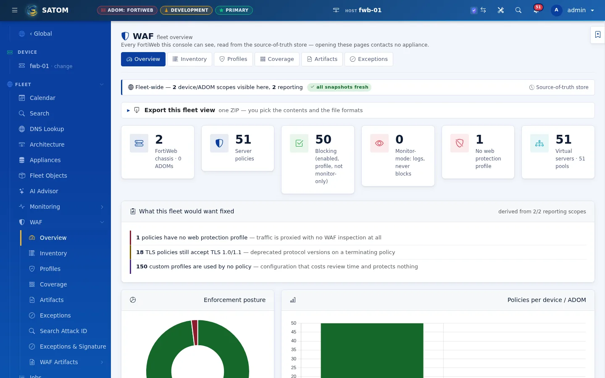
Operations → WAF → Overview: KPIs and "What this fleet would want fixed"; the sidebar shows the WAF submenu of the FortiWeb ADOMExport. Every WAF page has an export panel. Tick the datasets you want (overview figures and charts, server policies, web protection profiles, protection coverage, artifacts, exceptions with their profiles) and the formats (CSV with one file per dataset, an Excel workbook, a PDF report with charts). You get one ZIP.
waf.export.In the FortiWeb ADOM, the WAF submenu also holds the three device-scoped WAF tools. They used to sit in the ADOM's own WAF group, which no longer exists. Their URLs and permissions did not change. The Global console's WAF submenu does not list them, because they are FortiWeb-ADOM pages and a link from Global would switch the tab's ADOM.
| Entry | URL | Device |
|---|---|---|
| Search Attack ID (§9.1) | /waf/attack-search/ |
Not needed: the block-page reference names the appliance, or you pick it on the page |
| Exceptions & Signature (§9) | /web/exceptions/<device id> |
Needed. With none selected, /web/exceptions/ sends you to the Service Diagram |
| WAF Artifacts: Object types · Inventory · Device audit | /artifacts/, /artifacts/inventory, /artifacts/audit |
Needed. With none selected, each page sends you to the Service Diagram with "Pick a device first" |
WAF Artifacts is a collapsible entry with three pages. Each page shows one device and ADOM: the device selected in the sidebar (§3.1). No control widens it to the fleet; for the fleet-wide view, use Operations → WAF → Artifacts (§13.1).
config_write.XML Schema, WSDL and gRPC IDL can't be read back off a FortiWeb one object at a time. The device's Entire configuration backup does carry their content, but inside a block the firmware encrypts even without a backup password, and restoring that backup does not put them back: measured on 7.6.8 and 8.0.6, in both directions, the restore brings the configuration back and drops every XML Schema and WSDL object, name included. To move one of these objects, upload the original file (from the team that owns the API), or fetch it from the service.
Fetch from the application (Inventory) is the way in for a FortiWeb already
in production. Give the URL where the SOAP service publishes its WSDL or XML
Schema (often the service address followed by ?wsdl) and the object name the
policy already references. SATOM downloads it, follows the schemas it imports
or includes from the same host, and stores each one as a version with the
origin fetched. It never writes to the appliance. It refuses non-http(s)
URLs, credentials in the URL, documents with a DTD, loopback, link-local and
SATOM's own addresses; it reports redirects and references to other hosts
instead of following them, and stops at 25 documents, 5 levels or 60 seconds.
Imported schemas are named after their file; check the names against what the
policy needs (Needed by a policy and NOT held).
FortiWeb checks a schema's references when the file is uploaded, and looks a
relative schemaLocation up as an XML Schema object on the device, by name. So
SATOM rewrites every reference it followed to the name it stored that document
under, and says so in the version note. A reference it did not follow is kept
as written and listed in the result: the appliance resolves it itself at
upload, and refuses the file if it can't. On the device, a schema has to exist
before the schema or WSDL that imports it.
A clone or migration takes care of that order. Before the first write it reads the WSDL and XML Schema content it is about to upload and, for every schema that content imports: moves it ahead if the plan already creates it, leaves it alone if the destination already holds it, and otherwise adds it to the plan right before the importing file, with the copy SATOM holds. The pre-flight lists those schemas and which file imports each one; one SATOM can't supply is a missing file like any other, and the files that import it are skipped.
On FortiWeb 8.0.6 build0116 every gRPC IDL upload fails with
errcode -3000: Internal error processing requested file, whatever the file;
7.6.8 accepts the same file. SATOM adds that note to the error.
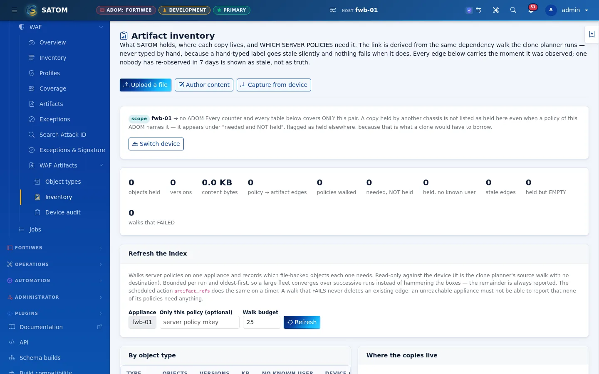
Operations → WAF → WAF Artifacts → Inventory for the selected deviceAdministrator → Naming is in every device ADOM (FortiWeb, FortiADC, FortiGate, FortiAuthenticator, FortiAnalyzer). Its two tabs work on one list of object types: every table the product's configuration sync reads, including the ones no device holds an object of yet. Settings blocks are not object types and are left out: rows without a name, and an empty endpoint the API library measured as one settings object on the devices' builds, or that the FortiAnalyzer / FortiAuthenticator sync saw answer as one object (those syncs record whether each table answered a list, even an empty one, or one object). An empty type nothing has measured yet stays listed and is marked list or settings block not measured. A table whose objects are keyed by number is listed and marked so.
Scheme holds the pattern of each object type. Entries marked builds
names (the FortiWeb catalog: server policy, pool, WPP, certificate…) are
the ones SATOM fills in when it creates objects from a web address, so they
take the site tokens and the product's variables only (Managed Certificate:
{class} {cn} {date} {serial}; Exception WPP: {name}, the policy's
name). Every other entry documents your convention and may use any
Discovery token.
The site tokens:
| Token | Value for https://Blabla.Example.com:8443/x |
|---|---|
{name} |
blabla-example-com — the slug, as before |
{host} |
blabla.example.com — the host as typed, dots kept |
{port} |
the port the creating flow gives (the wizard's Port), else 8443 from the address |
Variables (the table above the patterns, one list per product) rewrite
a token with a regular expression so the name is one the devices accept. Each
row has a name, the token it reads (a site token or a variable above it,
never one below), a regular expression (Python syntax, every match
replaced, \1 for a group) and what to replace with. Use it in a pattern
as {its_name}. Example: host_u reads host, replaces \. with _; the
pattern {host_u}-{port} gives blabla_example_com-443. The Sample web
address and Port fields preview every pattern live; the token values
come from the server, so the preview is what the wizard will build. A
variable list that cannot be computed (a reserved name such as num, an
unknown source, a regex that does not compile, a \2 with one group) saves
nothing, and removing a variable a pattern still uses is refused with the
pattern named. Restore defaults resets the patterns and keeps the
variables. FortiADC works the same way with its own list; no SATOM flow builds
FortiADC names yet, so there they are a reference a future flow uses as is.
Existing names are checked against a catalog pattern with {host} and every
variable read as free text. Next to each input: what Discovery found on the devices
(all devices agree / devices differ), use it to copy it in, and a
live count of the existing names that follow the pattern you type. Use the
filter box or Only types with objects on a device to narrow the list.
Discovery reads the names already on a device — from the configuration tree SATOM keeps for it, no device call — and shows, per object type:
pol-{adom}-{name} or
vs-{name}-{proto}, with any variant prefix, the separator and the case.(default) when it is the catalog default).name says 'https' but the object's port is '8080'.A part of a name becomes {port}, {proto}, {adom}, {host}… only when it
equals a field of the same object on at least 80 % of the objects; digits that
match nothing are {num}; the free part is {name}. One object is "too few".
Adopt writes the discovered pattern into the scheme entry of that object
type. Adopt & adapt opens it in an editor under the row: change a part
(lab-spo-{num} → spo-{name}), watch how many names follow, then Save to
scheme. For a builds names entry, Adopt is greyed out when the found
pattern carries a token SATOM cannot fill in (hover for the reason) — adapt it
instead. The ✕ clears the entry. All devices (fleet view) shows whether the
devices agree and your scheme pattern; Export CSV lists every exception. A
device without a configuration tree offers Sync device (read-only).
Monitoring lives in every workspace, not only Global. It is scoped by device kind, so the FortiWeb workspace shows FortiWeb appliances and nothing about the manager itself. Three submenus, and they answer three different questions.
One card per appliance. The badge is the worst of four independent signals, and every signal that is not healthy is printed underneath, so a state is never unexplained:
| Signal | Warns | Critical |
|---|---|---|
| Harvest — the last scheduled config syncs | one failed run | three failed runs in a row |
| Cache — the newest stored snapshot | nothing cached, or older than monitoring.stale_hours (6 h) |
older than 4× that |
| Probes — the enabled monitors for that device | a probe alerting, or all probes disabled | a probe critical |
| Capacity — object-count headroom against the admin cap | over capacity.warn_pct |
over capacity.crit_pct |
Two rules matter when reading it:
unknown is not ok. A device nothing has been measured about renders
unknown, never healthy.When a deep monitor is what makes a device degraded or critical, the alert says what was measured and against which line. The title carries the reading and the limit crossed (Device {device} is critical — CPU 97.0% (critical 95%)), and the body lists each alerting probe: what it measures (for CPU and memory, the whole appliance), the last reading, every limit it is graded against with where that limit is set (set on this probe, inherited from fortiweb, factory default) and when it was read. Six probes are spelled out; the rest are counted. The in-app notification keeps the line breaks.
Appliances in maintenance are marked as such and are skipped by automatic runs and by their alerts. That is the correct way to silence a box you know is down — not lowering the alert floor.
Fleet health is two pages, each a direct entry of the Monitoring menu (there is no "Fleet health" sub-menu), because a number is read as a claim about the page it sits on:
/monitoring/) — the appliance cards above. Present in
every workspace, scoped to that workspace's device kind. On a new node,
never harvested / probes have never run usually means nothing is
scheduled to do that work: the reason then ends with no 'device_sync'
schedule on this node (or deep_monitor) and the command that creates
the schedules, sudo satom execute seed actions --yes./monitoring/satom) — the installation itself: cluster
peers, repository, external backup server, database, systemd units,
redundancy, the host machine and Encryption in transit, where every
badge is backed by a live probe rather than by configuration. Global only
— a product workspace does not reach it, because those cards carry node
hostnames and infrastructure addresses.The host machine row grades disk, memory and CPU on both HA nodes, and
it exists because nothing in the product used to measure its own box. Its
limits live in Settings → Thresholds under the SATOM machine scope. CPU is
the share of the node's own cores busy (0–100 %; warning 80, critical 95).
Disk is the share of the space a non-root writer can use, the figure df
prints: the ~5 % ext4 keeps for root is left out, because PostgreSQL is not
root. The
hypervisor's load average is shown next to it, labelled as the host's, and is
not graded. Disk turns
critical at 92 %, deliberately below 95: a full filesystem stops PostgreSQL
writing WAL, so the alert has to arrive while there is still room to act on it.
Resource history, under the node tiles, keeps those same readings over time: one chart each for CPU, Memory and Disk, with every node on each chart, over 1 h, 6 h, 24 h, 7 days, 30 days or 90 days. The dashed lines are the warning and critical limits from Settings → Thresholds, so a chart shows the same line the alert fires on.
metrics_scrape scheduled action (every
3 minutes) and stored in the local metrics store as the satom_node_*
series, mirrored to the peer's store like every other series, so a promoted
standby keeps the history. If metrics_scrape is paused, the charts stop
growing; its run summary says N node sample(s), or node resources NOT
recorded with the reason.satom_node_up 0. Each point looks back one interval plus six
minutes, because the action fires every 3 to 6 minutes, so a gap means no
reading for longer than that, not one late scrape.The same data is available to an outside monitoring system through
GET /api/v1/system/nodes (now) and GET /api/v1/system/nodes/history (over
time), with a read token bound to the global ADOM — see the API v1
manual, §9.
Monitoring → Metrics. Inventory counts and activity for the active
workspace, over a date range. Nothing here touches an appliance — it reads
the local cache, the audit log and the change history, so it opens with the whole
fleet off.
Four inventory cards, labelled per ADOM rather than shared: FortiWeb counts Server Policies / Backends / WPPs / Certificates, FortiADC counts Virtual Servers / Real Servers / Server Pools / Certificates, FortiAuthenticator counts Users / Groups / RADIUS clients / Certificates, FortiAnalyzer counts Devices / Log sources / Reports / Certificates. The totals are rendered server-side, so the cards are still there if the charts fail to draw.
Where the totals come from differs by product, and the page will not fake it.
FortiWeb and Global read the daily typed snapshots written by the
inventory_snapshot scheduled action (§15) — which is why that action has to be
scheduled daily for the trend to exist at all. New installations seed it daily at
23:50 (satom execute seed actions); on an older node the same command adds it. FortiADC has no snapshot pipeline,
so its totals are counted live off the fleet and cached briefly. A product with
neither reports no totals rather than borrowing another product's: an ADOM
printing FortiWeb's object counts under its own labels is worse than printing
nothing, because the numbers look like its own.
Activity over the range: total audited actions, real (non-dry-run) config changes, distinct active users, and how many appliances were actually touched — plus a breakdown of changes by object category (server policy, backend, WAF profile, certificate, other) derived from the endpoint each change hit.
Ranges and comparison: 7 / 30 / 90 days or a custom window, with a compare toggle that puts the immediately preceding window of the same length beside it — so "is this a busy week" has an answer rather than a number.
It is ADOM-scoped, precisely. Audit rows carry their own product stamp; change-history rows are scoped through the kind of the appliance they were made on, by inclusion rather than exclusion. Manager-level changes with no appliance count under FortiWeb, which is where they originate. Global sees everything.
Monitoring → Deep monitors. These reach into the appliance (synthetic request
or read-only CLI over SSH):
| Kind | What it records |
|---|---|
| Service policy (HTTPS) | A synthetic request to a published front end: status, latency and days of certificate left. One 200 proves interface, policy, proxy daemon and backend at once. A sweep sends these requests concurrently (up to 16 at a time), and a front end that refuses or times out the connection is not contacted a second time for its certificate |
| Interface IP / link | A name → address/state fingerprint per port. The drift against the previous sample is the event; an address change grades critical |
| Processor load / Memory usage | Read from the appliance's own performance summary |
| proxyd process | Worker count, memory used and free, and the set of process IDs — a different PID is a silent restart, which no ordinary health check shows |
Not every kind fits every product, and the form says so rather than measuring
zero. Service policy, processor load and memory usage are offered on
FortiWeb, FortiADC and FortiAuthenticator; interface and proxyd are
FortiWeb-only. On FortiAuthenticator, load and memory are read from the unit's
REST status resource, not the CLI — the FAC shell answers
No such command. to the performance summary, which is a successful round
trip carrying no reading, exactly the kind of silence a monitor must never
grade as healthy.
Monitoring → Service monitor. Same engine, no shell access — these read the
appliance's monitoring API only, which means they keep working on a device
whose configuration API is refusing calls (an expired licence, typically):
| Kind | Unit |
|---|---|
| Concurrent sessions (box) | sessions, plus connections per second |
| Server-policy sessions & latency | sessions, round-trip and application response time, per-member backend health |
| HTTP throughput | Mbps, graded on the peak of the window, not the average |
| HTTP transactions | transactions per bucket |
On FortiAuthenticator the ceiling is not bandwidth, it is entitlement, so the kinds are different:
| Kind | Unit |
|---|---|
| Licence headroom | % of the licensed user / group / FSSO / SSO-mobility seats consumed, with the free count spelled out |
| FortiToken pool | % of the imported token stock already assigned |
Both grade on percent consumed — same direction as every other probe in the
product, so a threshold never has to be read backwards. A counter with no
ceiling, or a pool with no tokens imported, reports unknown: neither is
health.
The page also groups results per device: a traffic card per appliance and a per-policy detail view, both served from stored samples.
Reading
sessionson short-lived HTTP. Connections per second is the number that moves; concurrent sessions can sit near zero under heavy load because each request lives microseconds. A threshold onpolicy_sessionsgrades sessions — for HTTP front ends, watch the throughput probe instead.
POST /api/appliances) or a
provisioning run. The 3-minute Collection sweep also gives it to any device
that still has no probe at all. Deleting one probe of a provisioned device
is respected and the sweep does not put it back. To stop monitoring a device
completely, disable its probes rather than deleting them all.Click any sparkline for the drill-down: 1 h / 24 h / 7 d / 30 d or a custom range, with minimum / average / maximum, a healthy percentage, sample and transition counts, threshold lines and a per-bucket status strip.
Raw samples are capped per probe (retention, ~2 days at the default). Charts
go further because every run also writes roll-ups: hourly kept 90 days,
daily kept two years, storing min/avg/max rather than a mean — a four-minute
spike is invisible in an average and is usually the reason the chart is open.
The footer states which table was drawn, because an hourly mean and a
three-minute reading are not the same claim about the appliance.
Changing a probe's unit resets its series. If a probe starts reporting a different quantity, its old samples are cleared rather than plotted on the same axis. That is a deliberate, manual operation — never a side effect of a restart.
Monitoring → Collection (needs config-write).
How many devices fits on this node, and how much disk will that take? Both questions have a formula, built from constants measured on a running node: Sizing a node. The short version is that the ceiling is device I/O, not storage — a node spends about 0.82 s per device in each 3-minute window, which puts ~110 devices on one installation — and that the intervals and top-N values on THIS page are the two dials that move it.
A probe asks one question. That is the right shape for "is this one thing
still working" and the wrong shape for a fleet: at scale it becomes one API
call per object per sweep. A collector asks once per device and keeps
everything that came back — policies returns every policy on the box in a
single call. So the unit here is (device, collector), never (device,
object): the table stays roughly one row per device per collector no matter how
many policies the fleet grows.
| Collector | Products | Default interval |
|---|---|---|
box — CPU, memory, sessions |
FortiWeb, FortiADC, FortiAuthenticator | 3 min |
capacity — licence headroom, FortiToken pools |
FortiAuthenticator | 3 min |
policies — sessions / conn rate / RTT, every policy |
FortiWeb | 3 min |
interfaces — link state and byte counters |
FortiWeb | 3 min |
traffic — device total plus top-N policies |
FortiWeb | 15 min |
transactions — HTTP transactions, top-N policies |
FortiWeb | 60 min |
vservers — virtual servers: sessions / RTT / pool health, every VS |
FortiADC | 3 min |
identity — accounts, groups, tokens, certificates, RADIUS/TACACS+ clients |
FortiAuthenticator | 15 min |
faz — log volume, storage, alerts, incidents, devices, task queue |
FortiAnalyzer | 15 min |
http_status — HTTP response classes counted from the traffic log |
FortiWeb | 5 min |
infra — the VM and its hypervisor host (CPU, memory, disk, network, load) |
FortiWeb, FortiADC — only when mapped | 3 min |
snmp — uptime, interfaces (state, byte counters), CPU / memory / disk over SNMP v2c |
every product — opt-in per appliance | 3 min |
Every collector above reads the appliance's own REST or CLI. Two do not, and they are what a customer's monitoring already speaks:
snmp polls the appliance over SNMP v2c — sysUpTime, the
interface table (operational state and the 64-bit byte counters, 32-bit on a
build without ifXTable) and CPU / memory / disk from the vendor MIB
(FortiWeb verified on 7.6.8; the other products' OIDs are the documented ones
and fall back to HOST-RESOURCES when the agent lacks them). It is opt-in
per appliance: open the appliance's edit form, switch on Poll this
appliance over SNMP v2c, set the port (161) and the community string,
which is stored like the passwords (encrypted, mirrored to the vault when one
is configured) and never shown again. On the appliance, allow SNMP on the
management interface and list this node — and its HA peer — as a query host.
Switching it off disables the target instead of leaving a row that goes red.
Series: satom_snmp_sysuptime_seconds, satom_snmp_if_oper_up,
satom_snmp_if_in_octets_total / _out_octets_total (labels iface,
ifindex), satom_snmp_cpu_pct, satom_snmp_mem_pct, satom_snmp_disk_pct;
a failed poll writes satom_scrape_up{collector="snmp"} 0. SNMPv3 is not
supported (no User Security Model yet; it arrives when a customer needs
it), and SATOM sends no traps and receives none.key=value body
with or without a header. It is off by default; the card on this page
switches it on, sets the bind address and port (default 5514: port 514
needs a port redirect or CAP_NET_BIND_SERVICE on satom-scheduler.service,
which is a signed-release change, not a setting) and lists extra sender
networks. Only known senders are kept — the appliances' management
addresses, plus the extra networks under their own address; anything else is
dropped and counted (satom_syslog_dropped_total{reason}). The listener
runs inside the scheduler sidecar on the primary (never on a standby, never
in the web workers); the page shows what the sidecar last journalled: state,
counts per device, drops, and — in Global only — the last 500 messages with
credential-shaped values blanked. Series: satom_syslog_messages_total
(device, facility, severity), satom_syslog_up{device} (1 when a message
arrived since the previous pass, 0 for silence, for every known appliance),
satom_syslog_dropped_total{reason}, satom_syslog_receiver_up. Log
bodies at scale stay with the FortiAnalyzer; flows (NetFlow/sFlow) and
packet capture are out of scope and stated as such. On a FortiWeb, point
config log syslog-policy (a server row with this node's address, the port
and proto udp) at the node and enable config log syslogd with that
policy — measured on 7.6.8: a server row changed while syslogd is already
enabled is not picked up until syslogd is disabled and enabled again.
Switching the receiver on does not open the node's own packet filter:
allow UDP — and TCP, if you enable it — on the chosen port from the
appliances' management networks on every node, the primary and the standby
that may take over. A filtered port looks like silence: satom_syslog_up 0
for every appliance while satom_syslog_receiver_up stays 1.Each row is editable in place: interval (1–1440 minutes), enabled, and top-N (1–200) on the two collectors that have one. The expensive collectors are bounded twice — a longer interval and a top-N cut ranked by live connection rate — but the device total is always collected, so the headline number never depends on where the cut fell.
Three of those need a note, because what they can and cannot tell you is not obvious from the name:
vservers is FortiADC's counterpart to policies, and it reads a runtime
API that is not the one the object browser uses. FortiADC publishes CPU
and memory as installed hardware ("1 CPU/1 allowed"), never as
utilisation — so those two keep coming from the read-only CLI, and a
percentage you see for a FortiADC came from there.identity counts what the directory contains. It cannot tell you whether
authentication is succeeding: no FortiAuthenticator resource reports an
auth-rate counter, and that signal only exists in syslog, which SATOM does
not ingest.faz never fetches a log body. Every series is a counter or a state summary,
which is the point of monitoring a log collector rather than mirroring it.infra reads the hypervisor, not the appliance: the VM's own counters
(/nodes/<node>/qemu/<vmid>/status/current on Proxmox) and the host's
(/nodes/<node>/status). It needs the device mapped to its VM (hypervisor,
VM id and node, in the Sentinel topology map) and a registered hypervisor
(§21.1). A read-only Proxmox API token with the PVEAuditor role is
enough. The target is created only once the mapping is complete, on the next
sweep after it is saved. An unmapped device, and every hardware appliance,
has no infra row rather than a row that fails every 3 minutes.
Run sweep now runs inside the request and reports targets, errors and series written, in the flash message.
satom_scrape_up 0 for that target. Missing
data is never rendered as health.metrics_scrape which, like every action, is not
seeded on a fresh install (§15).Samples land in a time-series store that runs on each node, bound to loopback. It is not a shared database and it carries no authentication: each node keeps its own, which is why a board can draw on one node of a pair and report a query error on the other. Architecture, retention and sizing: docs/metrics-architecture.md.
Monitoring → Analytics: boards of panels over the data the rest of this section collects. It is a renderer, not a fourth source of measurements.
Built-in boards ship per ADOM. To change one, Duplicate it first. Panels are dragged to reorder; each board has a default range and optional auto-refresh.
topk(10, …)), and it is the only
mode that survives a fleet where enumerating the series is not an option.
The expression is validated by running it, because the store is the only
authority on its own query language.Collection cadence (button in the page header) shows every probe's declared interval beside its effective one and flags the mismatches. A probe fires only when its interval has elapsed and the sweep ticks, so the real cadence is the tick rounded up: a 5-minute probe under a 3-minute sweep is a 6-minute probe, and its own row still says 5. With no sweep scheduled the modal reports 0 — never a plausible-looking number for collection that is not happening.
Monitoring → Reports: daily, weekly and monthly summaries over the last complete period. The windows are half-open, so two adjacent reports can never claim the same bucket.
Reports are stored, not recomputed on demand. Raw samples expire in about two days, so a summary rebuilt six months later would quietly answer from coarser data while looking exactly like one built on time.
monitor_report action (period,
optional email, keep for retention, and push_server to copy the summary
to the external backup server).fleet, fleet_policy_down and fleet_collector_failed.Settings → Thresholds (admin). Before this page every limit lived on an individual probe, so tuning a fleet meant editing each monitor by hand; in practice nobody did, and all 42 production probes sat on the same factory number regardless of what they were watching.
Six scopes, picked from the selector at the top: four product ADOMs (FortiWeb, FortiADC, FortiAnalyzer, FortiAuthenticator — the read-only FortiGate ADOM has no threshold scope yet), SATOM the application, and the SATOM machine. Each scope carries three blocks.
Measurement limits — CPU, memory, sessions, throughput, transactions, licence and token headroom, interface staleness, TLS expiry, response time.
Device roll-up — what makes an appliance critical rather than a single reading: the cache-age budget, its critical multiplier, the harvest failure streak, and the capacity percentages. These used to be constants in the source.
Binary facts and mute — see below.
the probe's own column ← only if the operator typed one there
↓ empty
the product scope's value ← what you set on this page
↓ unset
the factory default ← documented in code, never a crash
Two states that look alike and are not:
0 means this level is switched off. It is a decision, and inheritance
never overwrites it.Newly discovered probes are created empty, so they inherit. If they were stamped with a literal they would be frozen at birth and this page would only ever affect probes that do not exist yet.
Both probe pages print the resolved limit and its origin — set on this
probe, inherited from FortiWeb, or factory default. Live inheritance means
a probe you never edited can change severity because someone edited a product
default; without the origin printed, that critical would appear with no visible
cause. Each probe also has a revert to inherited control, which clears the
column rather than writing the current value back into it.
Some conditions have nothing to compare against: every backend of a policy is
down, the policy is administratively disabled, proxyd is gone, a
monitored interface moved. They were unconditional in the source. Per product
you can now set each one to critical, warning or off.
Off changes the grade, never the visibility. The fact is still printed on the probe. A condition that disappears from the page when you silence it is how an operator later concludes the check never fired.
To silence one probe — a policy left over from a migration, say — mute it with a reason and a duration of up to 720 hours. While muted it keeps running and keeps showing its own status; it stops raising the device badge and the alert mail, and it is reported as lost coverage in both. There is no permanent mute: a silence nobody renews turns itself back on.
Prefer this to the alternatives. Lowering a product default to hide two dead policies blinds the whole fleet, and putting a healthy appliance into maintenance switches off its other working monitors as well.
It does not decide who is mailed or how often — that is Settings → Email & Alerts, which is delivery policy. This page is measurement policy, and the two are kept apart on purpose.
Scheduled work lives on two pages, split by who the work is for:
/scheduled-actions/, administrators
only). Every ADOM; the list shows that ADOM's rows./automations/,
needs config_write, which operators hold). It is live in the FortiWeb,
FortiADC, FortiAnalyzer and FortiAuthenticator ADOMs (and Global), and
drawn disabled with the reason in FortiGate, where no automation applies yet.An action belongs to one page, decided by the catalog, not by the row: when an action moves between the two catalogs, its existing rows move with it. This last happened on 2026-10-14, when the operator actions below moved from System Automations to Automations.
| Group | Actions |
|---|---|
| Source of truth | device_sync (refresh the local cache from a device), device_inspect (sync and push the SoT off-box), deep_capture, signature_sync |
| Backups | backup (on-device config backup), system_backup (the manager's own pg_dump bundle, optionally pushed to the backup server) |
| Monitoring — all four are the ones §14 asks you to schedule | metrics_scrape (the Collection sweep, §14.7 — every 3 minutes), deep_monitor (the deep-monitor probe sweep, §14.3 — every 3 minutes, the seed plan's cadence), monitor_report (the period summary, §14.9 — after the period closes), inventory_snapshot (daily inventory counts for §14.2) |
| Reads that feed pages | cert_scan (the Certificate Manager table), health_check, ha_check, stats |
| Catalog | appid_import (the nightly AppID feed, §25), knowledge_fetch (knowledge packs from the feed, daily, by mode — §22.4), signature_check (FortiGuard DB versions per FortiWeb + collection from the signature source, daily — §8.1) |
| Sentinel and inventory | sentinel_sweep, sentinel_baseline, sentinel_vuln_sync, sentinel_feed_publish, artifact_refs, netbox_reconcile |
Two notes on reading that list. There is no separate service_monitor
action — Deep monitors (§14.3) and Service monitor (§14.4) share one storage,
one runner and one sweep, so the single deep_monitor action populates both
pages. Two sweeps would mean two sets of samples for the same box. And
git_bundle is retired: git no longer carries the device source of
truth, so new installs do not seed it, though the handler still works for a
manual run of the code repository.
They arm themselves. When a node gets its first device, SATOM creates
its default set of system automations (hourly fleet sync, nightly SoT
snapshot and system backup, the 3-minute probe, metrics and Sentinel sweeps,
the period reports, the feed refreshes) and says so in the "Appliance
created" message. This happens only while the node has no system
automation at all: if one exists, SATOM leaves the set as the administrator
left it, and a deleted row is not re-created. sudo satom execute seed
actions fills individual gaps on demand.
| Group | Actions |
|---|---|
| Server-policy objects (one device each) | enable/disable a server policy, enable/disable a backend (pool member), change a backend's IP or port, swap a server-policy certificate |
| Firmware | upgrade_prep (backup + health, flashes nothing) and upgrade — fixed date/time, only inside an approved Change Request window; the scheduled executor does not flash yet (it reports each target not executed), so flash live from the Upgrade page (§36.6) |
| Device operations | reboot, ha_failover — fixed date/time, approved Change Request only |
| Certificates | the three cert_manager_* renewals (server / client+server / client), cert_lifecycle (the revoke-and-cleanup sweep, approved Change Request only) |
| Escape hatch | custom_rest — any FortiWeb REST request you define; GET is a live read, writes go through the snapshot + audit + dry-run path; approved Change Request only |
Who authorizes what. An operator can schedule a reboot, an upgrade,
an HA failover, a certificate lifecycle sweep or a custom REST call; it
runs only bound to an approved Change Request, inside its window — and
approving a change is an administrator's step. The form says so when you
pick one of these. The binding is written by the change's own Schedule
button, never by the form: a row runs under a change only if it is that
change's action against devices the change names. Anything else (another
action, an extra device, the whole fleet) is skipped with the reason and
leaves the change untouched.
- Schedules: interval / daily / weekly / monthly / once / cron, with
catch-up semantics and a run history per action. Cron takes a standard
five-field expression (minute hour day-of-month month day-of-week: *,
lists, ranges, /step, month and weekday names, Sunday as 0 or 7, and a day
matching either day field when both are restricted) in the console
timezone; one that can never fire (30 February) is refused. A dedicated scheduler sidecar fires
them; Run now is always available. Every wall-clock field — including the
one-time Run at — is in the console timezone (Settings → General), and
the list shows Next run in that timezone with its zone. A run the
scheduler was not up for, on an action without catch-up, shows as
missed.
Scripts (Operations → Automation → Scripts, Global ADOM, needs
operations.scripts_run, which operators hold): the Script Library scripts
an administrator published for operators (§23.4). Pick one, fill in its form
and Run now, or save the values with a cron expression as a saved run.
See §23.4 for how saved runs behave.
Change Requests (maintenance windows):
Jobs (Global → Jobs): every background job with owner, host/PID, progress and duration; Pause / Resume / Stop (cooperative — jobs park at safe checkpoints); orphaned jobs from a service restart are swept and marked on boot.
Global → Administrator → Database (admin only):
<name>_id column with no foreign key links to the table
of that name (singular or plural) whose primary key is id. History tables
keep appliance_id without a foreign key on purpose, because their rows
outlive the appliance. The header counts both kinds apart; the list view
marks inferred ones, and the Query Builder joins on both.satom_console_ro, which cannot read credential tables or credential
columns: list columns explicitly instead of SELECT * on appliances or
managed certificates. If the console says the role is not usable, run
sudo bash /opt/satom/deploy/install-console-role.sh on the primary and
restart. A query (console, CSV export or report widget) that names a
credential table — users, api_tokens, app_settings,
hypervisor_targets, dns_backends, provision_runs — is refused before it
runs and the refusal is audited (database.query_refused): column masking
keys on the result column's name, which row_to_json(...) or an alias can
change.Beyond the shared pages (appliances, monitoring, backups, jobs, automation), each product ADOM carries its own device menu, so the navigation matches what the device itself shows. The menu comes from one of two places:
The /adc/ ADOM mirrors the FortiADC 8.0 GUI menu: Server Load Balance, Link
Load Balance, Global Load Balance, Web Application Firewall, Network Security,
Network, Shared Resources, User Authentication, System, Log & Report. That
curated menu is the fallback: a FortiADC whose firmware build has a measured
layout in the knowledge packs draws its own menu instead, like the FortiWeb,
FortiGate and FortiAuthenticator ADOMs (§3.2). On those measured pages rows are
read live from the device's REST API (SATOM keeps no FortiADC configuration
cache for them), and a write runs dry first, then sends, records the change and
audits it; secrets are never echoed back.
?pkey=<parent>), with the same dry run first. A
row is never written as an object of its own.FortiView pages are monitors: they are in the menu at their place, say that they draw live data, and link to the same page on the device.
Object pages use the same form engine: identity/mkey handling, child tables (e.g. pool members) derived automatically, dry-run previews, audit on apply.
protection.view) — WAF
signature category/severity overview with per-severity actions; deep editing
through the object detail.registry.view) — the
registry-driven explorer: browse the ADC endpoint catalog as the GUI menu, run
live GETs and gated writes against a chosen device, with history and
syntax-highlighted responses. Writes are dry-run by default: without
Apply the console returns the request (method, path, body) and sends
nothing.<parent>_child_<table> once per parent object (?pkey=). Certificate-group,
CA-group and schedule-group members exist only there; the parent rows do not
carry them. The result sits beside the sweep snapshot. It is also loaded
into the cache's deep layer, which Analysis reads (deep-object picker,
sub-element counts, fleet inventory, FortiADC object inventory), and into
the API library as measured for that build.The /fac/ ADOM draws the unit's own menu in a FortiAuthenticator
sidebar group, built from the GUI layouts measured on its firmware build
(§3.2). With the FortiAuthenticator 8.0.3 layouts, for example, that is
System, Authentication, Fortinet SSO, Certificate Management
and Logging, down to leaves such as Local Users, User Groups, FortiTokens,
RADIUS Service → Clients and TACACS+ Service → Clients. A group with no
measured page (Monitor, on those layouts) is not drawn. All pages opens
the whole menu as a grid.
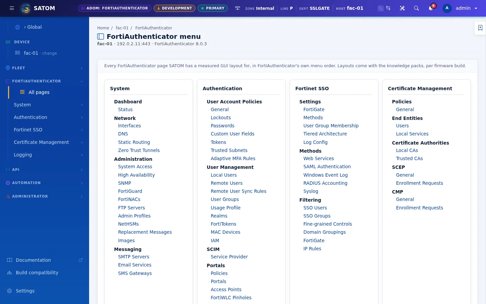
FortiAuthenticator ADOM: the unit's own menu, every measured page by group.id. A device refusal is shown as an error, never as an empty table.PATCH | POST | DELETE /api/v1/<resource>/,
and a save is accepted only for a collection the device's own measured page
edits. You need config_write. Clone and inline-table rows work the same
way.show full-configuration over a read-only SSH session and saved through the
CLI writer. The dry run shows the script. Create and delete are not offered
for them./fac/m/<item_key>) still exist, and the ADOM's
dashboard lists them. A section whose every tab a measured page draws opens
that page instead. The others render the old read-only section page, capped
at 500 rows with the truncation stated, with an explicit "No endpoint
bound." state where no REST resource is behind the pane.registry.view) — the
registry-driven explorer over the FAC catalogue, with live GETs and gated
writes against a chosen device (§30 covers the registry model behind all four
consoles). Catalog rows can be disabled and restored on the page; re-pointing
a disabled row keeps it disabled.What does not apply to FortiAuthenticator. In the FAC ADOM's Operations group Device Backups and Import Backup are greyed out (the reason is on hover), and that is not an oversight. (Diagnose Log Collection, under Operations › Troubleshooting, does apply: it runs the FortiAuthenticator battery, §27.1.)
| Feature | In the FAC ADOM? |
|---|---|
| Certificate Manager (§10) | No. Scanning, issuance, deployment and the lifecycle sweep dispatch on FortiWeb and FortiADC only. The unit's own Certificate Management menu group shows the device's certificates as the unit draws them. It is not the fleet Certificate Manager, and material there is not managed, bound or swept by §10. |
| Device Backups (§11) | No. The vault pages are closed to this workspace and not in the FAC menu; the backup transports are written against the FortiWeb/FortiADC backup APIs. |
| Firmware upgrade (§12) | No. Upgrade and Boot Partition serve FortiWeb and FortiADC only, even on the appliance detail page, and the SSH console, discovery and upgrade-prep actions there are gated to FortiWeb and FortiADC. The firmware library is closed to this workspace too: there is no upgrade path that would consume an image stored there. |
| Monitoring (§14) | Yes, with product-appropriate kinds — a baseline plus the entitlement set (licence headroom, FortiToken pool), and load/memory read over REST rather than the CLI (§14.3, §14.4). |
| Appliances, Audit log, Network segment | Yes — the shared administration pages. |
Two FortiAuthenticator quirks worth knowing. Its REST paths need the trailing slash (
/api/v1/<resource>/), and secrets are genuinely write-only: RADIUS client secrets and local-user passwords are absent from read payloads, not masked — so they can never leak into the configuration source of truth. (SATOM's pages additionally refuse to render a handful of secret-looking field names even if a future firmware starts returning them — a belt to that braces, because the cost of being wrong is a credential in every screenshot of the page.)
Full product notes: docs/fortiauthenticator.md.
The /faz/ ADOM draws the selected unit's own menu from the GUI layouts
measured on its build, like the other device ADOMs. Only a unit whose build has
no measured layout falls back to the curated menu: Device Manager,
FortiView, Log View, Fabric View, Incidents & Events,
FortiAI, Reports and System Settings. Of the 139 measured
FortiAnalyzer 7.6.7 pages, 57 are live monitors (dashboards, FortiView, log and
event views) and 28 are managed on the device: SATOM links them on the device
instead of drawing them as configuration, and Settings → ADOM Menus (§26.12)
can take them out of the menu.
root); the device list spans every FAZ ADOM.registry.view) — same
registry-driven explorer, JSON-RPC aware, with permission-gated writes that
are dry-run by default (tick Apply to send). The status badge shows the
device's JSON-RPC status code, not the transport's HTTP 200.The /fgt/ ADOM (since 3.0) reads a FortiGate live over the FortiOS REST API.
SATOM keeps no FortiGate configuration cache. Since the FortiGate GUI layouts
arrived, the pages a measured layout draws can also write, dry-run first.
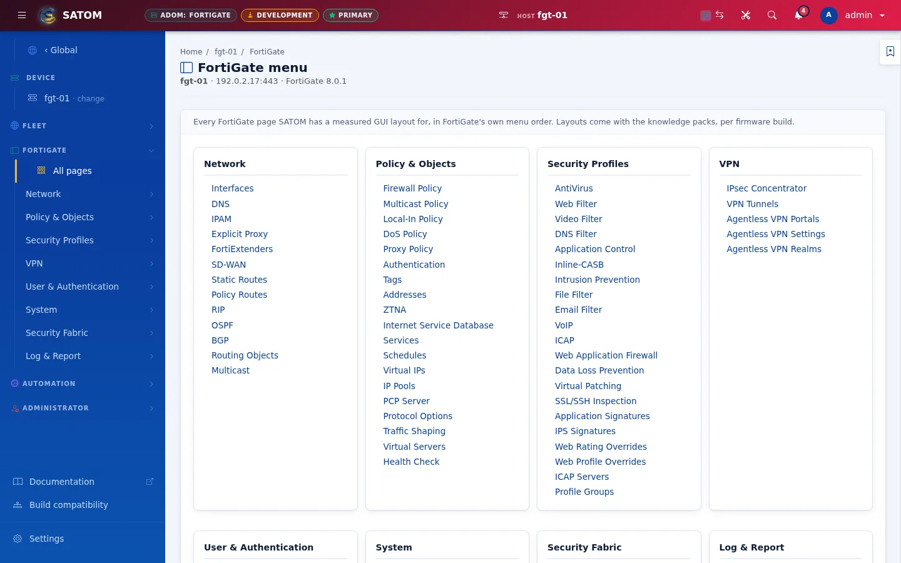
FortiGate ADOM, device fgt-01: All pages lists the FortiOS menu by group.PUT | POST | DELETE /api/v2/cmdb/<path>
(CLI-only fields go through the CLI writer), and a save is accepted only for
a collection the device's own measured page edits. You need config_write.
Clone and inline-table rows work the same way. The REST token decides what
FortiOS accepts: a read-only admin profile is enough to read, and a write it
does not grant is refused by the unit.registry.view) — the
FortiGate registry browsed as the FortiGate menu, and a live console. GET
reads the cmdb, monitor and log trees. POST, PUT and DELETE are
dry-run by default (tick Apply to send; registry.execute_write),
audited and read back. Writes go to /api/v2/cmdb/ only, never to the
monitor tree's actions (reboot, restore, firmware), and a DELETE must name
an object./fgt/m/<item_key>, 30 pages in 7 areas over 43
cmdb tables) are no longer in the sidebar; the dashboard still lists them. A
section whose every table a measured page draws opens that page instead. The
others render the old read-only section page, one tab per table, at most
500 rows with the truncation stated.401 (wrong token, or an unlicensed
FortiGate-VM, which answers 401 to everything), 403 (the token's admin
profile does not grant the table) or 404 (no such table on this firmware) is
shown as an error. On a section page, a real empty table says "The device
answered successfully with zero objects — this is not an error."ENC …, are dropped before the page renders.Not there yet: backups, firmware, templates, HA status and the Migration report. Registration and the details: docs/fortigate.md.
Administrators issue bearer tokens (API Tokens section) for the /api/v1
integration surface. Scope model: read ⊂ write ⊂ admin, capped by the
owner's own role, bound to one product (ADOM). The plaintext token is shown
once at creation. The API is read-biased: a token can trigger
pre-created scheduled actions, author WAF carve-outs and FortiADC rules from
a curated allow-list, and — with the template_draft / template_apply
capabilities — read and write templates, bindings and baselines, where a
push to a device is the console's own canary-gated job. Nothing destructive
is reachable by any token. The API also exposes what SATOM has recorded
(configuration history and diffs, findings, a read-only metrics query) and
describes itself as an OpenAPI document at /api/v1/openapi.json, built
from the live routes. Full reference: docs/api_v1.md.
Settings → Appearance (administrators). Four palettes ship — SATOM Aurora
(the default), Slate, Graphite and the original Classic — and you
can create your own.
What you edit is a list of 34 design tokens, grouped by sidebar, top bar, surfaces, accent, brand ramps and glow, text, status, elevation, layout and typography. You never edit CSS: free-form style text in a themed page is a stored-injection hole, so every value is validated by kind and the gradients are parsed structurally.
Practical notes:
satom.ui-theme/2): the token overrides plus the logo and
favicon, with no ids and no node state, so it imports cleanly onto any install
regardless of what themes that one already has. Files exported before v2 carry
the tokens only and still import. Import checks the file's schema tag and
validates every token and asset before the theme is created: a file with a
bad value, or an "image" that is not one, is rejected in full, naming what
failed, rather than partially imported. A name that already exists is suffixed
rather than overwritten.read). The theme arrives exactly as it is there,
colours, logo and favicon; leave Theme name empty for its active theme.
The token is used for that one request and is not stored. If the other node
uses a private CA, add the CA under Trust store first.satom execute reset theme.Full reference: docs/theming.md.
Some failures cannot be fixed from the web interface, because the web interface
is the thing that failed. Every node ships a local command-line tool, satom,
with a command tree across four verbs — get (state), show
(reference), diagnose (checks) and execute (actions). satom show tree prints
the whole tree; satom show tree --commands flattens it to one runnable command
per line, with the root-only and destructive ones marked.
The three you will use most:
satom diagnose all # every check, one exit code
satom diagnose install # infrastructure vs. protections — what is not armed
satom show docs # print any manual, no network needed
The exact command count is deliberately not repeated here: satom show tree
prints the live tree, and docs/cli.md is generated from it, so neither
can drift from the console you are running. A number typed into prose can.
Read verbs work as any user; state-changing verbs require root and refuse with an explanation rather than a traceback. Ask your systems team for the operator rule the tool prints itself:
satom show sudoers <account> # prints the sudoers line; changes nothing
Full reference, including the complete command tree and the runbooks: docs/cli.md.
Two entries under Automation, answering different questions:
| Page | Question it answers |
|---|---|
| Device Provisioning | Build me an appliance that does not exist yet. |
| System Provisioning | Apply this system profile or baseline to appliances that already exist. |
The rest of this section is the first one.
Settings → Hypervisors (admin). The backends are Proxmox VE and VMware ESXi, and the registry is multi-target: a site can hold several of each. Credentials are encrypted at rest, exactly like an appliance row. Test resolves that host's capabilities against the live endpoint and records the verdict.
Capabilities are reported, never assumed. A free-licensed ESXi host answers the vSphere API read-only, so SATOM refuses to build through it and says why — rather than failing halfway with "provisioning failed", which sends you to the wrong end of the problem. Likewise a Proxmox storage without the
importcontent type cannot receive a disk image, and the page says so instead of discovering it mid-run.
Test is therefore worth reading rather than glancing at. It answers four questions, and each one closes off a different option:
| The probe reports | If it is missing |
|---|---|
| Can create / power / delete a machine | nothing can be built here — only Config only remains |
| Can receive an uploaded image | you must place the install image on the hypervisor yourself |
| Has a serial console SATOM can drive | Full is unavailable; Semi is the ceiling |
| Which storages and networks exist | the run form has nothing to offer you |
Both backends do the same job and they fail in different places. Neither is "better" — pick the one whose disadvantage you can live with.
| Proxmox VE | VMware ESXi | |
|---|---|---|
| How SATOM talks to it | REST API, username + password | vSphere SOAP API |
| Create / boot / delete | yes | only on a paid licence, or over the host shell (21.3) |
| Upload an install image | yes, to a storage carrying the import role (21.4) |
the file upload works; turning it into a machine is a licensed write |
| Serial console SATOM can drive | yes | no — at any licence tier |
| Highest mode reachable | Full | Semi |
| Advantage | the only backend where a run can finish with nobody at the console | fits an existing VMware estate; no second virtualisation platform to operate |
| Disadvantage | another platform to run if your estate is VMware | a free licence blocks the write API outright, and unattended first boot is impossible regardless of licence |
Why "Full" is Proxmox-only, and why that is not a licensing question. A factory Fortinet appliance boots into a first-boot dialog —
admin, empty password, forced change — and nothing can reach its API until that dialog is completed. Driving it needs a serial console SATOM can type into. Proxmox exposes one. A standalone ESXi's only console is graphical, and adding a network serial port to the machine would itself be a licensed configuration write. Paying for ESXi unlocks the write API; it does not create a console. On ESXi the ceiling stays Semi.
A free ESXi licence gates the remote API write calls — create, power on, import — while every read keeps working. The host's own shell is a different path inside ESXi and is not gated the same way, so giving a target SSH credentials gives SATOM a second way to write.
| API transport | Shell transport | |
|---|---|---|
| Needs | nothing beyond the account you already gave | the host's SSH service running, plus SSH credentials on the target |
| Create / power / delete | blocked on a free licence | works |
| Attach a disk image | OVF/OVA only | any format the host can convert |
| Advantage | no extra service, no extra credential, nothing new exposed | a free-licensed host can build machines |
| Disadvantage | unusable on a free licence | it is a standing remote-root path into your hypervisor — that is a security decision, and it is yours |
Three things this path deliberately will not do:
Honest status: on the host this was developed against, SSH is switched off — so this transport is implemented and unit-tested but has not been exercised end to end against a live host. The capabilities panel says exactly that rather than reporting a confident yes.
Proxmox lets a storage declare what it may hold, and the two roles provisioning needs are frequently on different storages:
images — can hold a running machine's disk.import — can receive an uploaded appliance image.A stock installation commonly has the default local storage carrying
import but not images, while the thin pools carry images but not
import. That is a working configuration, not a fault: the run form asks for
both, and they are simply not the same answer.
If Test reports that no storage can receive an image, add the import
content type to a storage in Datacenter → Storage on the hypervisor, picking
one with room for the appliance images you intend to keep. Nothing in SATOM can
grant that — it is the hypervisor's own setting.
Firmware → Upload, with kind Install and the hypervisor flavour: KVM /
Proxmox (.qcow2) or VMware ESXi (.ovf / .ova). An upgrade .out applies
to a running appliance and cannot build a machine — two different artefact
families, kept apart on purpose.
The product cannot promise unattended first boot on every hypervisor, so how far a run goes is a choice, not a guess. Each mode is a different answer to the first-boot dialog described in 21.2.
| Mode | What it does | Advantages | Disadvantages |
|---|---|---|---|
| Full | Address, DNS, machine, boot, then waits for the appliance to answer on the reserved address, registers it and hands the system profile over to System Provisioning (21.9). The first-boot dialog is not scripted: the appliance must come up on that address by itself. | No human step until the configuration push (21.9). Repeatable and auditable end to end — every action lands in the run log. | Proxmox only. The most moving parts, so the widest surface for a mid-run failure; this is what rollback exists for. |
| Semi | Builds and boots, then stops. You complete the first-boot dialog on the hypervisor console and resume the run; the resume checks the box answers on its address, registers it and finishes the run (21.9). | Works on every backend, including a free-licensed ESXi. The one manual step is the one a human is genuinely required for. | Not unattended — the run waits until somebody acts on it. |
| DHCP | Builds and boots; the appliance takes a lease and SATOM probes the management address entered on the run (it does not discover the lease), then carries on. | Unattended without needing a serial console. | You must know the address the appliance takes (a DHCP reservation) and enter it on the run; without one the run stops at the reachability step. Not every appliance takes a lease on its factory configuration. |
| VM only | Creates and powers on the machine. Stops. | Smallest blast radius. The right choice when another team or tool configures the appliance. | No address, no DNS, no registration — nothing else in SATOM knows the machine exists until you add it. |
| Config only | No hypervisor involved: reserve the address, publish the DNS record, register a machine that already exists and hand the system profile over (21.9). | Needs no hypervisor at all — the path for physical appliances and for anything built outside SATOM. | You built the machine, so its CPU, memory, disk and network are outside the run log and outside the audit trail. |
Stopping is not failing. Semi and VM only are designed to stop. Such a run lands as paused with its reason printed, and you resume it. Marking a deliberate handoff as failed would teach everyone to ignore the status column — and then they ignore the real failures too.
Two options, and the choice changes what rollback is allowed to undo:
| You type the address | Use IPAM | |
|---|---|---|
| Requires | nothing | an enabled backend carrying the IPAM role whose scope claims the pool (Settings → DNS Records, §26.9), and the tick on this run |
| Advantage | always available; you keep full control of the plan | no spreadsheet, no collision, and the record is created for you |
| Disadvantage | you are responsible for the address being free | the run now depends on a second system being reachable |
| On rollback | left alone — an address you chose is not SATOM's to release | released, because SATOM allocated it |
IPAM is never implicit: it applies only to a run you ticked it on. The tick is always offered, so what it needs is checked when the run reaches the address step — and the two ways it can be missing are different conditions with different fixes, reported separately rather than as one message:
NO_MATCH), or two
claim it equally (AMBIGUOUS). The step blocks the same way, but the
named backends are printed and the fix is to the scope or priority of a row
that already exists, not to the length of the list. An operator told "no
provider is configured" while three are wired goes looking in the wrong place.Publishing the hostname is the one place where "nothing registered" is tolerated: a fleet with no DDI at all is a supported install, so the DNS step warns that the record was not created — printing the record to add by hand — and the run carries on. A DDI that exists but whose scopes miss the name you asked for is a misconfiguration, and that one blocks.
A run ends with two steps that sound like work and are deliberately thin:
That split is on purpose: System Provisioning already owns the dry-run, canary, approval and firmware gate for exactly this push, and a second copy of that logic inside the run would drift from the reviewed one. It also means the new appliance meets the same rule as every other one: a build nobody measured, or a device that reports no firmware, blocks the template apply until an approver overrides it with a reason.
Backend detail, the capability matrix and the state machine: docs/provisioning-hypervisors.md.
Settings → System → Software Update (admin). Two paths, for two situations:
In both cases the web application only enqueues. A separate privileged runner does the work, which is why the application itself never needs the rights to install packages or restart services.
There is a third update path, and it is not on this page. The Libraries panel on
Settings → General(§26.1) updates the Python dependencies — one package at a time, from a curated allowlist, with a per-package rollback point. This page moves the application code; that panel moves what the code runs on. They use the same privileged runner and the same queue, they are both node-local, and they are deliberately not merged: a dependency bump and a code release have different blast radii and different reasons to happen.On a container install this page is unavailable, and that is the design, not a gap. The updater installs unit files and restarts services as root — work a container cannot do to a host it does not own. The equivalent there is to deploy a new image tag and recreate the stack. Service control (§26) and certificate activation (§10) are absent for the same reason, each refusing with a message that names its alternative rather than failing obscurely. With the optional operations agent (since 2.3.0), a container node switches release, restarts its services and installs its certificate from System → Container operations instead (§44); the git and library updaters on this page stay unavailable there, and say so. See Running SATOM in containers.
Upload → read the preflight → Apply. The preflight names every check, and a blocking one disables Apply:
| Check | What it answers |
|---|---|
| Trust store | Is there a key that could vouch for this at all? |
| Archive | Is the file a well-formed package? |
| Signature & integrity | Is it signed by a trusted key, and do the contents match what was signed? |
| Version | Where does this move the node? |
| Upgrade path | Is this node new enough to accept it? (From 3.3.4, packages need 3.3.3 or newer: a node on 3.3.2 or older applies satom-update-3.3.3.tar.gz first — and installs that package's own update runner before applying it, because the older runner cannot read the wheels a package ships; the step is in the update manual, docs/offline-update-packages.md §3.) |
| Python / Dependencies | Are the shipped wheels the ones this node needs? |
| Disk space | Is there room? |
| This node | Which machine, in which role, you are about to change. |
Staging is not applying. Uploading changes nothing. And when you do press Apply, the privileged runner re-verifies everything from scratch — the page you were reading could be minutes old, and "the button was enabled" is not a safety property.
satom show trust, satom execute trust add-key.The metrics store, the virtual environment and the installed packages are per node — none of it replicates. Apply on each node, then confirm each one:
satom diagnose updates # trust store, runner, staged packages
satom diagnose code # is the running process actually on the new code?
Every release from 2.5.0 publishes its package, its .sha256 and the public
key it is signed with (satom-release-2026.pub). A node installed before
2.5.0 trusts that key only after satom execute trust add-key
satom-release-2026.pub, run once per node; compare the fingerprint in the
release notes first. Database migrations run as part of the apply. If one
fails, the update rolls back and the status log says which backup to restore.
Updating from 2.x. An update is applied by the runner already installed on
the node, so a 2.x node jumping to 3.x is updated by its 2.x runner, which knows
nothing about what 3.x added. From 3.3.2 the release finishes that itself
(deploy/upgrade-converge.sh, run by install-runner.sh whenever the update
runner calls it):
satom-scripts.{path,service} and its queue directories;knowledge_fetch, signature_check, observatory_scan,
hsts_preload_refresh (satom execute seed actions --upgrade). Actions of the
2.x set are not recreated, so one you deleted on purpose stays deleted.Every problem is a warning in the refresh update runner step and never fails
the update. The Script Library also needs bubblewrap (bwrap): if the node
lacks it, the step says so; install it under Settings → General → System
packages. A node already taken from 2.x to 3.0.0–3.3.1 is finished by
updating it to 3.3.2, or by hand: sudo satom execute reinstall units,
sudo bash /opt/satom/deploy/install-console-role.sh and
sudo satom execute seed actions --yes on the primary.
How packages are built and signed: docs/offline-update-packages.md.
The same page carries a third card, API library packs. A pack holds what SATOM has learned about vendor APIs — which endpoints and fields each firmware build serves (from real sweeps, anonymised), the vendor release notes and field catalog, and the CLI-only blocks per firmware line — for a node that has no appliance of a build to learn them from. Since 3.0 they are also the only source of the vendor release notes (§22.4). It never carries a configuration value or a device name.
new (will
be imported), update (replaces a copy an older pack wrote), present
(already on this node), local (this node measured it itself — local data
always wins), rejected (a malformed item, with the reason) or unknown (a
section this SATOM does not import, shown as a warning). Each row also shows
the pack's lane and where the current copy came from (local,
pack:api_pack:<pack> or pack:knowledge:<pack>). Filter by product and by
section; only new and update items can be ticked.Which key checks a pack (3.0). A 3.0 pack (satom.api-pack/2) is verified
only with the keys of its lane — api_pack for the pack pinned to a
release, knowledge for the rolling knowledge packs. Both public keys ship
with the release, so nothing has to be installed first; satom show trust
lists them. A 2.x pack (/1) is still verified with the update trust store. A
pack signed by a key the node does not trust for its lane is refused with the
satom execute trust add-key --purpose <lane> command that fixes it. On a
pair, import on the primary: the standby receives the library by
replication and the files by the data sync, and its card is read-only. The
console equivalent is sudo satom execute apipack import shipped --yes. An
update imports the release's own pack on the primary by itself, and the page
shows a notice while a shipped pack is pending. Details:
api-library.md §12.
Knowledge packs (satom-apipack-kb-YYYYMMDD[.N]) are written by the SATOM
team's separate harvester tool rather than by a node: the CLI schema, hidden
fields and REST fields of every firmware build measured in the team's lab, the
vendor release notes of FortiWeb, FortiADC, FortiAuthenticator, FortiAnalyzer
and FortiGate, field catalogs, the predefined protection profiles per build,
rename candidates and baselines. They are what lets the Build compatibility
page (§30.11) and the Migration Report (§40.3) answer for a build none of your
appliances runs yet. From 3.0 they no longer ride inside the update: they
come from the knowledge feed or by upload (§22.4). You do not need the
harvester tool itself. Details:
knowledge-harvester.md.
Download the update package from the node itself. In Offline update
package, Check for a newer package online reads the release feed
(satom-system-upgrades/latest.json); Download & stage fetches the
package as a job, checks its sha256 and opens its preflight. Nothing is
applied until you press Apply. From a shell:
sudo satom execute update fetch --yes. A node with no internet still
uploads the file. Details:
offline-update-packages.md §1.1.
The feed is the public repository unless Settings → General → Update
sources names another one (§26.1), for example an internal pipeline that
republishes the signed packages. The message after Check names the source it
read. A package from any source still has to pass the signature check against
this node's trust store, so pointing the feed somewhere else changes where the
bytes come from, never what the node accepts. From a shell the CLI does not
read that setting: sudo SATOM_FEED_TOKEN=<token> satom execute update fetch
--feed <https-url> --user <name> --yes (the token only from the environment,
never the command line).
Release notes, the Upgrade Advisory, upgrade paths and the public FortiGuard metadata shown next to signature ids all come from signed packs, in two lanes with the same content sections:
| Lane | What it is | How it arrives |
|---|---|---|
| API pack | Pinned to a SATOM release (satom-apipack-<version>) |
Inside the update; imported by the update on the primary |
| Knowledge pack | Rolling (satom-apipack-kb-YYYYMMDD[.N]), published whenever the knowledge changes |
The knowledge feed, or an upload |
The Knowledge packs card on Software Update shows, per lane, the pack
installed on this node, its date and its age (a stale badge after 30 days),
and what the feed offers. A release's API pack is not imported when a pack
already imported holds the same or newer content; the API pack row then names
the release's pack with covered by <pack> and takes that pack's date, so
it does not age while the content is current:
latest.json) and compares it with the newest
imported knowledge pack. Nothing is downloaded.The feed is read over HTTPS with the same proxy and TLS settings as the
system-upgrade feed. Scheduled fetch (daily) chooses what the daily
scheduled action knowledge_fetch does:
| Mode | Daily action |
|---|---|
off |
nothing |
notify |
checks and tells the administrators (bell) once per new pack |
download |
also downloads and stages the pack |
download_import (default) |
also imports it |
The Feed URL is the public knowledge feed by default; point it at an internal mirror if your nodes reach one and not the Internet. Both settings are replicated: change them on the primary. On a standby the action and the buttons do nothing and say why — its database is read-only and the knowledge arrives by replication. The last result (status, message, time, pack) is shown under the table.
The scheduled action has to exist. Scheduled actions are data, not code,
so an update does not create knowledge_fetch (nor signature_check, §8.1).
An update to 3.3.2 or later creates them itself, once, on the primary (see
§22.2, Updating from 2.x). Coming from an older 3.x release, run
sudo satom execute seed actions --yes once on the primary — it creates only
the missing rows and never touches the ones you edited — or create them on the
Scheduled Actions page. The buttons on this card
work without it.
Air-gapped network. On a machine with Internet access, download the pack
named by the feed and its .sha256 file from the release page (the card links
both after Check now), verify the checksum, carry the file over and upload
it under API library packs (/self-update/apipack/upload), then import it
there — or run sudo satom execute apipack import <file> --yes. The signature
check is the same.
From the console:
satom show knowledge # installed per lane, age, mode, last result
sudo satom execute knowledge fetch # check only (dry run)
sudo satom execute knowledge fetch --yes # download and stage
sudo satom execute knowledge fetch --import --yes # download and import
sudo satom execute knowledge fetch --feed https://mirror.example/latest.json --import --yes
Four admin-only authoring tools, grouped under Studio. In the Global ADOM
they have their own Studio nav group; in the FortiWeb and FortiADC ADOMs the
same two authoring pages plus the read side (Custom Views) appear in their
own Plugins nav group. Every entry is shown only to holders of its own
studio.* key, so a menu link never answers 403.
They are gated by four separate permissions — studio.python_console,
studio.plugin_studio, studio.lua_studio and studio.script_library — which are not the same thing
as user_manage. A profile can be given one studio tool without being given the
others, and without being given user administration.
| Tool | Page | What it authors |
|---|---|---|
| Python Studio | /studio |
One page, seven panes: Scripts (the Script Library: Python scripts with a form that operators fill in and run, §23.4), Console (throwaway Python over the curated fleet datasets, §23.3), Data stores (§23.5), Connections and API Catalog (§23.6), Apps (§23.7) and Examples (§23.8); what Studio code cannot do to SATOM is §23.9 |
| Plugin Studio | /plugins |
Server-rendered custom views/widgets, published as Custom Views |
| Lua Studio | /lua |
Device scripts for FortiWeb Web Scripting and FortiADC Scripting |
Python Studio (since the release after 3.3.7) replaces the two menu entries
Python Console and Script Library. On the left an Explorer switches
between the Scripts pane and the Console pane and opens any script in
its editor; the editor (/studio/scripts/<id>) has a Console tab too, to
try code against the fleet data without saving it in the script. Uniting the
pages united neither the keys nor the sandboxes: the page opens for a holder of
studio.script_library or studio.python_console, and each pane, the
editor's Console tab and the console's run endpoint still ask for their own
key. The old addresses (/database/py-console, /database/scripts/…)
redirect to the new ones.
A plugin is a Jinja body plus optional CSS and JS, bound to a list of curated datasets (fleet appliances, cached server policies, pools, WAF profiles, managed certificates, recent audit activity, fleet counts, scheduled actions). You pick datasets from a checklist; you never write SQL.
Lifecycle: draft → testing → published. The two gates are deliberate:
A published plugin is readable by any signed-in user in that ADOM; draft and testing stay author-only. Demoting back to draft is always allowed.
The sandbox contract — worth understanding before you write anything, because it explains what a plugin cannot do:
__class__/__mro__ gadget chains raise a
security error: the template can read the data it was handed and nothing else.<iframe sandbox="allow-scripts"> without allow-same-origin. That gives
the plugin's JavaScript an opaque origin: it cannot read the app's cookies,
DOM or session, and it cannot fetch anything back from the app. Its datasets
are injected into the frame as a JSON island precisely because it cannot go
and get them.Input parameters. A plugin may declare selectors (device, select, text,
number, date) so the consumer can filter it. Values arrive as ?p_<name>=… and
reach the body as params.<name>. They never touch SQL — the dataset stays
fixed, so a parameter can only narrow data that was already loaded, never widen
access. A device selector is populated from the live appliance list, scoped to
the ADOM you are in.
Custom Views is ADOM-scoped; Plugin Studio is not. The read-side gallery ("Custom Views") is only surfaced in the FortiWeb and FortiADC ADOMs, and every plugin is stamped with the ADOM it was authored in. The authoring pages are reachable from the Global ADOM too, under Studio. Draft and testing views (and the editor's live preview) open for holders of
studio.plugin_studio; everyone else sees published views only.
Author a device script, lint it, read a static analysis of it, and deploy it — in that order. Targets are FortiWeb "Web Scripting" and FortiADC "Scripting", picked when you create the script.
luac -p, which parses
without running; the worst a pasted script can do is fail to compile, and the
error comes back with its line number. FortiADC's Scripting is an
iRule-style event DSL rather than standalone Lua, so luac cannot parse it —
that target gets a structural check instead (bracket balance plus at least
one event block), and the result says which engine produced it.end count, an = inside
a condition, os.execute/io.popen.deployed only from a real push. Marking a
script tested re-runs the lint gate and refuses if it fails. You cannot stamp
deployed by hand — only a successful non-dry-run deploy sets it.config_write and an explicit confirmation, and
the lint gate runs again first — a script that does not parse is refused before
any transport is opened. A real push also needs a target appliance saved
on the script; without one it is refused, and the script is never stamped
deployed.The Console pane of Python Studio (Administrator → Studio → Python
Studio → Console), also a tab in every script's editor. Admin-authored Python, run against the same curated dataset bundle the
plugins use, in a bubblewrap jail with no environment, no network namespace and
none of the application tree mounted — so a script cannot open the .env, the
database or the keyring, and cannot open a socket. Wall-clock, CPU, memory and
process-count caps stop runaway loops. The console receives a JSON snapshot of
the data; it never touches the database itself. Every run is audited, including
the first kilobyte of the source.
The console runs inside the web service, next to the pages everyone uses, so
it is bounded tightly: nothing in the jail is writable (no /tmp, a
read-only root and /dev — a file written to a memory filesystem is memory no
per-process limit counts), each process may address 512 MiB, the run may start
only a handful of processes or threads beyond those SATOM already has, the
output is read as it arrives and kept up to 200 KB per stream, and one run at
a time per node (a second one waits a few seconds, then is told the console
is busy).
Python scripts you keep, with a form an operator fills in. You write and
test them here (Administrator → Studio → Python Studio → Scripts); you
publish a version; operators run that version. Gated by
studio.script_library.
A script is a small project. main.py is what runs; other .py files are
modules it can import (from lib.devices import …), and text files (.json,
.csv, .yaml, …) are data it can open by relative path. Up to 64 files of
512 KiB each. Upload takes a single file or a .zip of the whole project (a
zip of a folder is unwrapped); the upload is loaded into the editor and saved
at once, as a new version. Download gives the current state or any version
as a zip.
The Scripts pane shows how scripts run in one strip at the top, a search box and the script table: published version, latest version (flagged when it is not published), form fields, network, audience and last change. Row actions: Edit (every edit saves a new version), Compare versions, Versions and runs, Download. New script (top right) opens a dialog for the name and the id.
The editor has a file tree, line numbers, Tab / Shift+Tab indentation,
auto-indent after :, Ctrl+S to save (the editor also saves by itself about
four seconds after you stop typing) and Check syntax, which lists every
error with its file and line (click one to jump to it). A draft with a syntax
error is saved anyway, so half-written code is never lost, but it cannot be
published or test-run.
The form is defined under Form: one row per field, with the variable
name, label, type (text, textarea, number, select, checkbox,
password, and the database fields lookup, lookup_multi, dataset
described below), whether it is required, a default and a help text. The preview next
to it is the exact form operators get. In the script:
from satom_script import inputs, result, log, tcp
log("checking %s:%s" % (inputs["host"], inputs["port"])) # number fields arrive as numbers
result({"ok": True, "rows": rows}) # structured output of the run
Database fields take their values from the SATOM database. Three types:
lookup (the user picks one row), lookup_multi (several rows) and dataset
(no pick: the whole result goes to the script). For each one you build a
query in the field's Database query panel: a table, other tables combined
with it (the list offers only the tables related to it, with the join
explained, up to two joins away — you never type a key), the columns, filters,
order and a row limit (≤ 500). For a pick list you choose which column is the
value the script gets and which is the label the user sees.
Preview rows runs it right away. The query is read-only, built from the
same catalogue as the Report Builder: credential columns and credential
tables are refused.
The rows are read for the user's ADOMs: a profile confined to some ADOMs (§26.3) sees only their rows, and a table that belongs to no ADOM is refused to it. The form only stores the chosen value; the full row is read again when the run is queued — with the operator's ADOMs for Run now, with the owner's for a saved run — so a scheduled run never works on a month-old copy, and a value that has gone away fails the run with a message instead of running anyway. In the script:
dev = inputs["device"] # lookup
log(dev["label"], dev["row"]["appliances.host"])
for d in inputs["targets"]: # lookup_multi: a list of the same
...
for row in inputs["inventory"]["rows"]: # dataset: {"columns", "rows", "truncated"}
log(row["appliances.name"])
Columns are named table.column; values are text (empty for NULL). The script
itself still has no route to the database: SATOM runs the query and hands it
the rows.
Only the fields you defined reach the script; anything else a form submits is
dropped. The values come in on standard input, never as environment variables.
Password fields cannot have a default, and their values are masked in
every run record, in the output, in result() and in the connection list.
Settings holds the name, the description operators see, the timeout
(5–900 s), who may run it (administrators only, or operators) and the
network: None (the script cannot open any connection) or Outbound
(HTTP(S) clients work as usual; tcp(host, port) opens raw TCP, e.g.
paramiko.SSHClient().connect(host, sock=tcp(host, 22), …)). Outbound never
reaches this node: loopback and every address of the node are refused, so the
script cannot talk to the database, the metrics store or the web app.
Credentials (also under Settings) are the passwords and tokens a script
needs, declared by name (FGT_ADMIN = user + password, API_KEY = one value)
and read with secret("FGT_ADMIN")["password"]. Their values live only in
the vault (Settings → Vault), at <mount>/scripts/<script id>/<NAME> — never
in the SATOM database and never on the node's disk. The page shows stored or
not set and lets you replace a value; it never shows one. When a run is
queued, SATOM asks the vault for a single-use wrapped copy of each declared
credential and puts only that token in the queued request; the runner, which
has no vault login of its own, unwraps it as the run starts. A token that
somebody else used first, or that waited more than 15 minutes, fails the run
and says so. Values are masked in every run record (the user name is not).
Without a vault, credentials cannot be set and a script that declares one
cannot be queued. Deleting a script deletes its credentials from the vault.
Test runs the saved draft on this node with the values you type and shows
the output, the result() document and every connection attempt.
Versions. Every edit of a script — published or not — saves a new
version (v1, v2, …) automatically, with its code, form and settings; the
starter template a script is created with is not a version, so the first save
is v1. Saves by the same person within ten minutes of the version's first
save are grouped into one version (the editor autosaves while you type); an
upload, a restore, another person or a publish always starts a new one, and a
save that changes nothing adds nothing. The last 100 versions are kept, and the
published one always is.
Publish approves the latest version under its own number: what the editor showed as v7 is what operators run as v7. Operators keep running the published version while you edit; a version that is already published cannot be published again (edit the script to make a new one).
Versions & runs lists every version with its status (published, published before, latest · not published), who saved it and how (edited, uploaded, restored). Row actions: View (read-only, file by file, with Changes against the current draft), Compare with the previous version, Download and Restore (saves that version's content as a new version; nothing is deleted). Compare in the card header diffs any two versions you pick: a line diff per file, plus which settings or form changed. The run history is below.
Who runs it. Under Settings, Who can run it is Administrators only
or Operators. A published script with the second audience appears to
every user holding operations.scripts_run under Operations → Automation →
Scripts (Global ADOM): the form of the published version, Run now, the
result, and their own run history. Administrators see every script and every
user's runs and saved runs there too.
Saved runs. On the same page, a set of values can be saved with a cron
expression (§15; the next five fire times are previewed as you type). A saved
run is pinned to the version it was created against: publishing a new
version changes nothing for it, and the row offers move to vN, which checks
the saved values against the new form first. Password values of a saved run
are kept in the vault (<mount>/scripts-saved/<script>/<id>), never in the
saved-run file, and each fire hands the runner a single-use wrapped copy;
without a vault, a saved run cannot keep one. The scheduler fires saved runs
on the primary. A fire missed by more than five minutes (scheduler not
running) is skipped, not replayed. A saved run whose owner is deactivated,
loses operations.scripts_run or loses access to the script is paused
with the reason instead of running on their behalf. Each user keeps at most
50 saved runs.
How a run is contained. Runs are executed by satom-scripts.service, not by
the web application. That runner has no database connection and no access to
the SATOM encryption key; it reads the frozen files and writes the run record.
Each script runs in the bubblewrap jail of §35.3 (own process, user and network
namespaces, none of SATOM mounted). A queued run holds the form values in a
private file on this node only; the runner rewrites it without them the moment
it starts. On an HA pair satom-scripts.path must be enabled on both nodes. An
update arms it on nodes installed before it existed.
What a run can use. The runner unit carries cgroup limits, so a script that
allocates, forks or writes in a loop stops at them instead of taking memory,
processes or disk from the database and the web service on the same node:
MemoryMax=1G (a run that reaches it is ended at once — the kernel picks the
script, never the runner, and its record says the memory limit stopped it),
TasksMax=256, CPUQuota=200% with a low
CPU and I/O weight, and a private /tmp that is a 512 MB memory filesystem —
the run's work directory lives there, so no run can fill the disk. Inside the
jail the root and /dev are read-only, a single file is at most 256 MB and the
output is read as it arrives (twice the 64 KB shown is kept). At most 50 runs
wait in the queue (a full queue is refused with that message) and run records
are kept 30 days (3,000 at most); a queued or running record is never pruned.
The unit has no systemd start limit (it starts once per queued run), and a
file in the queue that is not a run request is moved to data/scripts/rejected/.
A site that needs more raises the limits in a systemd drop-in
(systemctl edit satom-scripts.service). The integration-hooks runner
(satom-integrations.service) has the same limits.
Python Studio → Data stores holds tables you define in the UI. A data
store is a column list — name, label, type (text, number, boolean,
date, json) and required — plus rows. Every row also has _id,
_created_at, _updated_at and _by.
'). Import CSV appends rows from a file
whose header names the columns; every line is checked before any is written,
so a file with one bad line imports nothing.No SQL and no DDL is reachable from these pages: rows are JSON documents in
SATOM's own database, so a data store cannot reach any other table — and it
replicates to the standby and travels in backups and clones like the rest of
the configuration. Gated by studio.script_library.
Python Studio → Connections names an external system once, with its credential, for app steps to use.
| Kind | Settings | Authentication |
|---|---|---|
| HTTP API | Base URL, TLS verification (against the trust store), timeout | none, basic (user + password), bearer token, API key in a named header, OAuth2 client credentials (client id + secret + token URL + scope) |
| PostgreSQL | Host, port, database, user, TLS verification, timeout | password |
//, .. or a backslash in a path is refused, and redirects
are returned as the answer, never followed. A step cannot set the
Authorization header, the API-key header, Host or Cookie.169.254.169.254), multicast, unspecified, reserved, or an
address of this node itself — the node's metrics store, cache and web server
listen there without authentication. Internal addresses (10.x, 172.16–31.x,
192.168.x) are allowed: internal APIs and CMDBs are what connections are for.
The request then goes to the address that was checked (the name stays the
Host header and the TLS server name), so a DNS answer that changes in
between changes nothing. The same check covers the OAuth2 token URL (https
only) and a PostgreSQL host, and it runs on every call — an app step, a list
field filled from an API when a form opens, the Test button and a script.
A refusal reads "… resolves to …, a loopback address of this node; a
connection never dials it".%(name)s parameters and run in a READ ONLY
transaction unless the step ticks Allow writes. The connection is always
encrypted: with TLS verification on, the server certificate is checked
against the trust store (verify-full); off, it is encrypted without the
check (require). A server without TLS is refused — the password never
travels in clear.Authorization value, the Basic header's base64 form and an
OAuth2 access token, also in their JSON-escaped spelling.data/ha_nodes.json. A path may not carry an encoded ., / or \
(%2e, %2f, %5c — the same climb, spelt to slip past the check), and
the query string is re-encoded pair by pair.SELECT 1; COMMIT;
… is refused) and a read-only step is read-only twice — the transaction and
the session default — so a statement list cannot walk out of it. A result
stops at the row limit or at 8 MiB, the server stops a statement at the
timeout and SATOM cancels it if it does not. With libpq 16 or later, a server
that asks for the password in clear is refused before the password is sent.
The real boundary stays a read-only role on the remote database: a
function with side effects is still a single SELECT.a.b[0].c, items[*].name) to see what a step would keep.Connections are called by SATOM, and the credential is never in a script's hands. App steps and the Test button call from the web server. A Script Library script may call the connections it declares (script editor → Settings → Connections):
from satom_script import connection, result
crm = connection("crm")
r = crm.get("/tickets", params={"state": "open"}) # also post/put/patch/delete
result(r.json())
rows = connection("cmdb").query("SELECT name FROM hosts WHERE site = %(s)s",
{"s": "zrh"})["rows"] # read-only unless write=True
The script sends the request to the scripts runner, which adds the credential OUTSIDE the sandbox and returns the answer: the token, password or client secret is never in the script's environment, input or files. Only declared connections answer, whatever the script's network setting (a script with no outbound access can still use them), each call is a line in the run's connections log, and a secret that shows up in the output is masked. A connection with a secret needs the vault: the run receives a single-use wrapped token (like script credentials, §23.4), never the secret on disk. A published version keeps the connections it declared. A connection that a script declares cannot be deleted.
When a team (or a vendor) publishes an API you want to use, Python Studio →
API Catalog keeps it, one entry per version of it — inventory 1.0,
inventory 1.1, inventory 2.0.
{name} for a path parameter, summary, query
parameters, whether it takes a body) — or import first and correct by
hand. Only references inside the document are followed; nothing is
downloaded. HEAD/OPTIONS operations are skipped, and an operationId that
is missing, repeated or not usable is replaced by method_path (the import
says so).Compare two versions on the API page lists the endpoints removed (calls to them break), changed (method, path, parameters or body) and added. Endpoints (JSON) downloads a version's list in the shape the manual editor saves, to paste into another version or another SATOM.
Pin a connection to a version (HTTP connection page → API version; published versions only). From then on:
{"id": "{{ form.id }}"}) fill its
{name} parts — each value percent-encoded into one segment;from satom_script import connection, result
inv = connection("inventory")
host = inv.op("getHost", {"id": 7}).json() # method and path from the catalog
hosts = inv.op("listHosts", params={"limit": 50}).json()
result({"api": inv.catalog()["version"], "endpoints": len(inv.operations())})
inv.get("/hosts") still works when GET /hosts is an endpoint of the
version; a request that is not one is refused by the scripts runner. The
script editor's Connections card shows the endpoints of every declared,
pinned connection with the line to paste.
Moving a connection to another version names the app steps that call an endpoint the new version does not have, and saves only when you confirm; those apps then show the problem and cannot be published until it is fixed. A connection with no version keeps the old behaviour: any path under its base URL. An API with connections pinned to it cannot be deleted.
Python Studio → Apps builds a small application — a form, a diagram of steps and an output with actions — and publishes it as its own entry in Operations → Plugins (in the Global ADOM: Global → Plugins).
The editor has six tabs:
Templates. Text parameters are templates rendered in a sandbox:
{{ form.host }}, {{ rows }}, {{ rows | length }},
{{ response.items[0].id }}. A value that is exactly one {{ expression }}
keeps its type, so a query result reaches a script or an output as a list,
not as text. An undefined name is an error the run shows; write
{{ x | default('') }} for an optional one. JSON parameters (filters, values,
bodies) are JSON whose strings are templates.
Arrows. A step ends ok or error; a decision ends yes or no. The run
follows the arrow of that outcome, otherwise the always arrow — except after
an error: an error follows only an error arrow, and with none the run stops
there as failed (the message is in {{ last_error }} on an error path). A loop
is allowed and stops after 200 steps; a run stops after 10 minutes.
Running. The user fills in the form and presses Run; the run continues in the background and the page follows it, then shows the outputs, the actions and the steps. Password values are masked in every run record. Each user sees their own runs; authors see all of them and the run's variables.
Actions and devices. Raise a change request never changes a device: it creates a draft change request (title, reason, change type, device ids, risk, with the app and run named in it) that goes through the normal approval of Change Management. Run another app needs the user to be allowed to use that app.
Limits that protect the node. App runs execute in the web service, so:
** refuses an exponent above 64,
* refuses a result longer than 1 MiB, all the range() loops of one value
together produce at most 1,000,000 items, and a rendered text stops at 1 MiB;1?admin=1 or ../../users stays one path
segment instead of becoming a query or a climb (to pass values as query
parameters, use the step's Query string (JSON));urlencode, tojson, base64);Gated by studio.script_library for authors; users need only to be in the
app's access list.
Python Studio → Examples installs working examples of every Studio piece
with one click. Ids start with ex-; installing creates only what is missing
and never overwrites an object you edited; Remove deletes the objects of
that example but keeps any of them something else still uses (another
example's app, or your own work built on it). Connections are created
without a secret and pointed at a placeholder host
(fortigate.example.com, netbox.example.com), so nothing reaches a device
until you open the connection, set the address and paste the token.
| Example | What it shows | Objects |
|---|---|---|
| FortiGate: which rule lets this traffic through? | An app built only from the diagram, three API calls and two decisions; actions on the output: save to a data store, download CSV, ask for the access as a change request. The same lookup as a script. | connection ex-fortigate, data store ex-policy-lookups, script ex-fortigate-policy-lookup, app ex-policy-finder |
| NetBox: who owns this IP address? | A script that calls a connection, and an app whose diagram runs that script. | connection ex-netbox, script ex-netbox-ip-owner, app ex-ip-owner |
| Explain a flow (FortiGate + NetBox) | One script, two connections: who owns both ends and which rule decides the flow. Keeps working when NetBox is down. | script and app ex-traffic-explainer (+ the two connections) |
| Data stores: site contacts | No external system: a list field fed by a data store, a query, an upsert. Published at once (every ADOM, Studio authors), so it appears under Operations → Plugins. | data store ex-site-contacts (3 sample rows), apps ex-site-contact, ex-site-contact-edit |
The Console pane has two examples in its Studio group: the fleet inventory printed as CSV (paste it into a data store's Import CSV) and every managed FortiGate with the base URL a connection to its REST API would use.
FortiGate setup. On the FortiGate: System → Administrators → Create New →
REST API Admin, a read-only profile, this SATOM node as trusted host; copy the
token. In SATOM open ex-fortigate: base URL https://<FortiGate>/api/v2,
authentication Bearer, paste the token, Test with
/monitor/system/status. With a self-signed certificate import its CA into
the trust store (or untick TLS verification on a lab box).
The policy finder, step by step (ex-policy-finder, the answers are the
ones a FortiGate 8.0.1 gives):
GET /monitor/router/lookup?destination=<source>,
Keep only results.entries[0].interface → srcintf (e.g. port1). The
ingress interface is the one the FortiGate uses to reach the source.{{ srcintf | default('') }} not empty;
no → Fail "The FortiGate has no route to …".GET /monitor/firewall/policy-lookup with query
{"srcintf": "{{ srcintf }}", "sourceip": "{{ form.source }}",
"dest": "{{ form.destination }}",
"protocol": "{{ {'tcp': 6, 'udp': 17}[form.protocol] }}",
"destport": "{{ form.port }}"}, keep results → verdict:
{"match": true, "policy_id": 1, "policy_action": "accept"} or
{"match": false, "policy_id": 0, "sec_default_action": "deny"}.{{ verdict.match }} true.GET /cmdb/firewall/policy/{{ verdict.policy_id }},
keep results[0] → rule (name, interfaces, addresses, services).'src_addr': rule.srcaddr | map(attribute='name') | join(', ');
the deny branch builds the same record with policy_name "(no rule matches)".The same lookup as a Script Library script (ex-fortigate-policy-lookup):
from satom_script import connection, inputs, log, result
fgt = connection("ex-fortigate") # SATOM adds the token; the script never sees it
def get(path, **params):
r = fgt.get(path, params=params or None)
r.raise_for_status()
return (r.json() or {}).get("results")
src, dst = inputs["source"].strip(), inputs["destination"].strip()
ingress = get("/monitor/router/lookup", destination=src)["entries"][0]["interface"]
lookup = get("/monitor/firewall/policy-lookup", srcintf=ingress, sourceip=src, dest=dst,
protocol="6", destport=str(inputs["port"]))
if lookup.get("match"):
rule = get("/cmdb/firewall/policy/%d" % lookup["policy_id"],
format="policyid|name|srcaddr|dstaddr|service|action")[0]
result({"policy": rule["name"], "action": lookup["policy_action"]})
else:
result({"policy": None, "action": lookup.get("sec_default_action", "deny")})
NetBox setup. In NetBox create a read-only API token. In SATOM open
ex-netbox: base URL https://<NetBox>/api, authentication API key, header
Authorization, secret Token <key> (a v1 token; with a v2 token, NetBox
4.5+, choose Bearer and paste the token alone). Test with /status/.
The script reads /ipam/ip-addresses/?address=<ip> (status, DNS name, tenant,
the device or virtual machine and interface it is assigned to) and
/ipam/prefixes/?contains=<ip>, sorted most specific first (VLAN, role,
scope, tenant):
from satom_script import connection, inputs, result
nb = connection("ex-netbox")
ip = inputs["ip"]
addr = nb.get("/ipam/ip-addresses/", params={"address": ip}).raise_for_status().json()
nets = nb.get("/ipam/prefixes/", params={"contains": ip}).raise_for_status().json()
result({"records": addr["results"], "prefixes": [p["prefix"] for p in nets["results"]]})
The ex-ip-owner app runs that script with a Run a script step
({"ip": "{{ form.ip }}"} → nb), then shows {{ nb.owner }} as key/value
and {{ nb.prefixes }} as a table, or a text when NetBox does not know the
address.
Data stores, step by step (ex-site-contact-edit): a Write a data store
step in upsert mode with match {"site": "{{ form.site }}"} and values
{"site": "{{ form.site }}", "contact": "{{ form.contact }}", …} updates the
row of that site or inserts it; a Read a data store step with filter
{"site": "{{ form.site }}"} reads it back. The ex-site-contact form's
Site field is a list from the data store (value and label column site), so
a site added by the edit app appears in it.
The rules below were checked by a security review and an adversarial test
on a running node (2026-10-20); each one is pinned by a test
(tests/test_studio_security.py).
| Property | What protects it |
|---|---|
| Confidentiality of SATOM | Scripts and the console run in a bubblewrap jail with none of SATOM mounted (no .env, database socket, keys or other processes); the scripts runner itself has no database and no encryption key. Connection secrets reach a run only as single-use vault tokens unwrapped outside the jail. A connection never dials this node, the other HA node, loopback, link-local or reserved addresses. A connection's secret is cleared when its destination changes, and an echoed credential is masked in every answer. Operators see an app's outputs, not its step details. |
| Integrity of SATOM | No SQL or DDL reaches SATOM's database from Studio: data stores are checked JSON rows. Device changes from an app are draft change requests that wait for approval. A PostgreSQL step runs one statement, read-only unless allowed. Path values cannot leave their segment. Actions run once per run, on the version that produced it. |
| Availability of SATOM | The scripts and hooks runners have cgroup limits (memory 1 GiB, 256 tasks, 2 CPUs, a 512 MB memory /tmp); the jail's root and /dev are read-only and its output is read with a cap. The console has no writable path, 512 MiB per process, a task headroom and one run at a time. App runs are capped per user and per node, templates are bounded, HTTP calls have one total deadline, query results stop at 8 MiB, data stores have row, size and count limits, the scripts queue holds at most 50 runs, and request bodies to the app and Studio pages are capped. |
What stays the administrator's responsibility: a Studio author
(studio.script_library) writes code and diagrams that run with the
connections' credentials, so grant that key as you would an administrator's;
use read-only credentials on the external systems (a REST API admin with a
read-only profile, a read-only database role) wherever a script or app only
reads.
Settings → System → High Availability (admin, user_manage). This page
was split out of Software Update so that the two questions get their own nav
entry: Software Update (§22) is "what code is this node running"; High
Availability is "how many nodes are there, which one is primary, and is the
standby actually receiving anything".
Loading it never touches an appliance. Everything on it comes from this node's own PostgreSQL plus a best-effort HTTP probe of the peer, so the page opens with the entire fleet switched off.
Cluster architecture graph. One card per registered node, laid out with the
live replication arrow drawn between them: role (primary / standby), host,
reachability, revision, health. Click a node to load it into the editor below.
The arrow's direction is the real streaming direction and its label carries the
current WAL lag — the reconciler drives the staged code rollout along that same
path. Below the graph is a fixed reference table of the node-to-node channels
and what each carries, which exists because :443 (your browser → the app) is
routinely confused with the node-to-node traffic; the heavy sync — the standby's
actual database — is Postgres streaming replication, not the peer HTTPS channel.
Live per-channel encryption status is on Monitoring → SATOM health (§14.1).
Deployment mode. A switch between HA and STANDALONE. It lives in the replicated settings table, which means it can only be written where Postgres is read-write: the primary. On a standby the page says so instead of failing the save. (The related deploy automation switch — reconciler AUTO vs MANUAL — is on the Software Update page, because it is about how code rolls out.)
The HA node registry. Add / update / remove the peer by name (its hostname) and host. The registry is a file in the replicated data directory: it reaches the peer on the next data sync, and its live state is probed on this page rather than trusted from the record. You cannot remove the node you are on.
Database replication & failover. The card shows the live streaming state read from the local PostgreSQL — on a primary the sender side (who is connected, in what state, how many bytes behind), on a standby its own apply lag.
Manual failover is guarded three ways. Promote this node to PRIMARY only appears on a node that is genuinely in recovery; it requires typing that node's hostname exactly; and it does not run in the web worker — it enqueues, and a privileged runner performs the promotion. Promote only when the old primary is confirmed down: nothing in SATOM arbitrates a split brain for you. On the primary the card says plainly that failover is initiated from the standby's own page.
Further reading — neither of these is a page in the product, and both matter the day something goes wrong:
backup rather than as the other half of a balancer, and
promotion is an operator decision the stack deliberately refuses to undo for
you.The standby gets new code by running git fetch against the primary's
repository over SSH, as the service account (its reconciler does it every
minute). That one channel can fail while everything else stays green: root
SSH, the data/ sync, replication and both web UIs keep working.
What it looked like (2026-10-11). systemd-logind on the primary lost a
job (Failed to start session scope session-NNNN.scope: Connection timed out).
From then on every SSH login of the service account stayed in logind state
opening: sshd waits on pam_systemd and never runs the command, so every
fetch hung for 120 s and the standby silently stopped converging. The fix was
systemctl restart systemd-logind on the primary; the standby caught up within
one reconciler cycle.
Where you see it now.
systemd-logind (logins of the service account stuck in opening for more
than 60 s, or a loginctl that does not answer) and whether sshd answers.
The standby's state comes from its /healthz/reconciler probe (the same
peer-probe pattern as /healthz/backups; it publishes the decision, the
commit counts, short shas, the time and a one-line redacted error — nothing
else). These probes answer only a request signed with the inter-node
identity key (HMAC over the request with a ±120 s timestamp window, so both
nodes' clocks must be NTP-synchronised; the key itself never crosses the wire); anyone else gets 403, and plain /healthz gives them ok
and nothing more. A pair without an identity key therefore shows its peer
as unreachable on these pages. The lag is computed on the primary against its own
branch head, because a standby that cannot fetch measures itself against a
stale origin and would read "0 behind".state/reconciler-status.json,
outside data/). It used to live in data/, which the data sync overwrites
with the primary's copy every five minutes, so the standby's file always
named the primary. A fetch timeout is now recorded as a fetch-error
decision with the error and how long the streak has lasted, instead of an
exception in the journal.satom-reconciler along with
the scheduler (try-restart: a stopped reconciler stays stopped). Before,
the loop kept running the release it was started with — on 2026-10-11 the
standby's had been up since the morning on code older than its tree. Until
a node's reconciler has been restarted once on this release, it still
writes its record to the old data/ path; the page reads that as a
fallback, but only when the record names this node.satom ha check on the primary prints the same check in the console
(satom show runbook ha-link is the offline procedure).Repairing it. Repair HA link… on the card (admin, user_manage), or
sudo satom ha repair on the primary. Both first show a preview — the
current check, what the repair does and what it does not — and change nothing
until you confirm (the button) or add --yes (the CLI). Confirmed, it:
systemd-logind on the primary — not from the web worker, but by
enqueuing an allowlisted request for the privileged runner, the same queue as
every Settings → Services action (logind is restart-only there and is not
drawn on the Services card);ha.link.repair, or ha.link.repair.refused).It does not touch the standby or anything over SSH, restart sshd, the web
app, PostgreSQL or the data sync, or end open sessions (logind re-attaches
them). It cannot fix a dead sshd, an unreachable standby or a refused key —
the check names those separately (sshd-down, standby-unreachable) so the
button is not pressed for the wrong fault. It refuses on a standby or a
standalone node and says why: the login service on the fetch path is the
primary's. The runner re-checks the role against its own PostgreSQL as well.
Manual fallback, if the app itself cannot run the check:
loginctl list-sessions
loginctl show-session <id> -p Name -p State -p Timestamp # 'opening' for minutes = wedged
journalctl -u systemd-logind --since -2h | grep -i 'session scope'
sudo systemctl restart systemd-logind
# on the standby, read-only: is it fetching again?
journalctl -u satom-reconciler -n 20
Global ADOM → Administrator → AppIDs (admin, user_manage).
An AppID is two things at once, which is why it has its own catalog rather than living in a policy comment:
Because it decides money and permissions, the authority is always the two local tables — the catalog and the policy bindings — never a file and never a comment string. Files and URLs are sources that feed the catalog.
Manual vs imported, and the stale badge. A row you type by hand is a manual
entry. A row that arrived from a feed is imported. Import is strictly
additive: it inserts, updates and stamps last_seen. An imported AppID that
stops appearing in the feed is flagged stale for review — it is never deleted
and never unassigned, because that would silently de-bill a customer or drop a
token's scope. Manual rows are never auto-staled.
The upload flow — map once, reuse forever.
app_id (required), plus customer, label
and rate, and any number of extra named columns you want carried along.
Column references are header names, or index numbers if you say the file has
no header row.External source (for the nightly). Configure a URL, its auth mode (none /
basic / bearer) and the credential; the secret is stored Fernet-encrypted and is
never returned to the browser (the page only tells you whether one is set). The
scheduled action appid_import (§15) fetches that URL, applies the saved
mapping and imports additively. With no source configured the nightly reports
"no source configured" rather than pretending it ran.
Assignment. Assign an AppID to a Server Policy by picking the device and the
policy name. The binding is unique per (appliance, server policy), so a policy
belongs to exactly one AppID; assigning a second one replaces the first
rather than double-billing. Unassign is a separate action. Deleting an AppID also
deletes its bindings, and says so.
The assignment picker spans both FortiWeb and FortiADC appliances — the catalog is a single global one, not per-ADOM.
Settings is one page with a grouped sidebar: 11 groups, 40 panels.
Ten of the groups (38 panels) are admin-only (user_manage); the remaining
one — My Account, holding Security and Change Password — is
self-service and is the only group a non-admin sees. A group with nothing you may see is not
rendered at all, so the menu never offers a section that is not there.
| Group | Panels |
|---|---|
| System | General · Software Update Repository · Software Update · High Availability · System Automations · Scout · Integrations |
| Source of Truth & Backup | Configuration SoT · Backup Server · System Backup & Restore · Deploy Clone |
| Access & Identity | Users · Profiles · Authentication · Access Control · Vault |
| Certificates & Trust | Certificate Manager · Node TLS · Trust store |
| Network & DNS | DNS Lookup · DNS Records |
| Fleet & Devices | Hypervisors · ADOMs · Policy Links · Clone / Migrate |
| User Interface | Appearance · Languages · ADOM Menus |
| My Account | Security · Change Password |
| Monitoring & Alerts | Email & Alerts · Thresholds |
| Sentinel | Settings · Context · Response policy · Border blocklist · Architecture · Incidents console |
| Path Diagnostics | Settings · Architecture |
The Scout panel (the AI assistant, §33) additionally needs
advisor.configure; an admin without it does not see the entry. Sentinel
and Path Diagnostics settings are admin-only end to end: saving them
(including Path Diagnostics's site-wide on/off switch)
needs Manage users, the same as seeing the panes. Sentinel's AI reasoning
ships with an empty model endpoint and stays off until one is set (for example
http://localhost:11434), even if its switch is on.
Integrations is a page, not a pane, and its row carries the leaving arrow
(↗) for that reason: clicking it replaces the console instead of switching a
tab. It is where SATOM is wired to systems it does not own — NetBox
(maintenance windows and the appliance → device map) and your own Python hooks
— and it is filed under System because that is what it configures. It had no
menu entry at all until 2026-09-21; the page existed and worked, but the only
way to reach it was to type /settings/integrations.
Software Update, High Availability, System Automations and System Backup & Restore are pages too (↗), filed in Settings (until 3.4.4 they were under Administrator → System). Each keeps its own address and draws this menu with itself selected. System Backup & Restore sits with the backup surfaces; the other three under System. System Automations keeps the ADOM you are in: its list shows that ADOM's rows, as before.
Deploy Clone copies a whole installation's data into this one, or exports this one for another (§11.1). It sits in Source of Truth & Backup because it moves the same estate the backup bundles carry. It is not Clone / Migrate under Fleet & Devices, which copies configuration from one appliance to another.
Path Diagnostics is its own group, below Sentinel. Its Settings panel holds only where to look and how long to wait — the default look-back window, the FortiAnalyzer ADOM and device selector the border rung queries, the two timeouts. What a verdict means is on the same panel as a read-only table: the dominant-phase share and floor, the signals that count as an appliance being unfit to serve, the order conflicting border rows are resolved in, and the methods Path Diagnostics is permitted to send. Those are shown rather than offered on purpose — editing a threshold makes whoever changed it a second author of every report already filed, and an archived report says nothing about the values in force when it was written. Each row names the symbol it is read from, and the values are read off the engine when the page renders, so the table cannot drift from the code. Architecture renders the ten rungs from the same tuple the engine walks.
A typed Published host follows the free-target rule. Left blank, Path Diagnostics
dials the object's VIP as the device reports it. A host you type is dialled
only if the appliance publishes it — its own address on its management or SSH
port, or one of its published services on that service's own port —
unless you hold monitoring.probe_free or user management — the same rule as
the certificate inspector and the transaction tracer.
Three repositories-or-destinations, three separate entries. Until 2026-08-29 the System group carried one panel called SoT & Backup, and it held a firmware git URL, the SFTP credentials of the backup box and nothing about appliance configuration at all — under a heading whose first word names an authority. Reading it as covering all three was the obvious reading and the wrong one. They are now three entries in two groups, and each states what it is not:
| Entry | What it is | What it is not |
|---|---|---|
| Configuration SoT (§26.5) | the versioned, hashed history of every appliance's configuration | not firmware, not backups, not code |
| Backup Server (§26.5b) | an SFTP destination three streams are copied to | not an authority — nothing is consulted there to decide what a device is configured to do |
| Software Update Repository (§26.4) | the git repo this node downloads its own code from | has never held a device configuration or a firmware image |
Firmware is not a source of truth in this product, and no panel offers a
setting that says it is. Its authority is the firmware_images table plus
data/firmware/, on Infrastructure → Firmware (§20), which is indexed,
hashed and inside every backup bundle. The retired sot.firmware_repo_url /
sot.firmware_repo_branch settings pointed at a second git repo holding a
firmware manifest; every consumer of them merely printed the URL, nothing ever
read the manifest, and the repo they named declared firmwares: [] while two
images were loaded on the node. A setting that announces an authority nobody
reads is worse than no setting, so it was removed rather than filled in.
Sentinel is its own group, and all six of its entries are panes. They are ordered by what they are, not by when they arrived: the four configuration surfaces first, then the reference document, then the live console. The Border blocklist sits last of the four because it is the one that is read by something outside this product.
Settings holds the whole section inline — the pipeline stage by stage, the
live weight table, the ten runnable demonstrations and the form.
Context is trusted sources, maintenance windows, the appliance ↔ VM ↔ host
topology map and the local CVE mirror; it looks like reference data and is not,
because a trusted source is worth −35 points, the largest single weight in
the whole scoring table, and it is the only thing that tells an authorised scan
apart from an intrusion — the two produce a byte-for-byte identical attack log.
Response policy is per-action autonomy and the four operating modes that
preset it — Alert only, Alert and block, High, Ultra high, plus
Custom, which is what the page reads the moment any of their values is
edited by hand. A mode is a named set of values for knobs that already
existed and nothing in the engine ever asks which one is active, so the name
cannot describe behaviour the table below it does not have. Architecture renders the same document served at
/sentinel/docs, and Incidents console the same live console served at
/sentinel/ — health tiles, the seven-day figures and the incident table
included.
Nothing in the group leaves the Admin Console, so none of the five is marked as
doing so: every form returns to the pane it was fired from, and the status
filter reloads Settings rather than jumping to /sentinel/. Opening one
incident does leave, because an incident is a page of its own.
The incidents console no longer carries its own Architecture and Context buttons. They were removed at the same moment those two became menu entries, and only for that reason: until then the Context button was the only way to reach the page, so deleting it on its own would have removed the function rather than a duplicate.
Both standalone URLs are still there and unchanged — they are what the top navigation, the manual's links and the concept map use — and each is rendered from the same file as its pane, so the two surfaces cannot drift apart. The two configure-once groups sit at the bottom, in this order: Monitoring & Alerts, then Sentinel last.
The menu itself is defined once, in app/templates/settings/_nav.html, and
every Settings surface includes that one file — the console and the standalone
/settings/sentinel page alike. So the submenu no longer disappears when a deep
link or a save redirect lands you on a standalone page, and an entry added or
renamed changes on every surface at the same moment. On a standalone page the
entries navigate back into the console (/settings/#tab-users) instead of
switching a pane, because the panes are not on that page: a tab button there
would be a row that highlights and then does nothing.
Regrouping the strip into a menu did not rename the panels' targets
(#tab-auth and its siblings), so every deep link, every saved URL hash and
every §26.x reference in this manual still lands exactly where it did.
Throughout this manual a setting is addressed as Settings → <Panel>.
Seven tabs are documented where the feature they configure is documented, because the setting is meaningless without it. They are not repeated here:
| Tab | Documented in |
|---|---|
| Thresholds | §14.10 — measurement policy for every probe and device roll-up |
| Trust store | §10.1 — the CAs SATOM itself trusts when it dials an appliance |
| Certificate Manager | §10 — issuance protocol, lifecycle policy, and the ACME provider registry |
| Hypervisors | §21.1 — the Proxmox / ESXi endpoints provisioning may build on |
| Clone / Migrate | §6 — dummy-VIP rewrite rules and the copy-WPP default |
| Appearance | §19 — themes, tokens, logo and favicon |
| Sentinel | Settings → Sentinel → Settings — every knob next to the pipeline it configures, the live scoring weights, and ten demonstrations runnable against the real engine, all rendered in the pane itself. The same section is also served standalone at /settings/sentinel — with the Admin Console submenu still beside it — which is where deep links and the save redirect from outside the console land. Context, Response policy, Architecture and Incidents console are panes beside it, rendered from the same files as /sentinel/context, /sentinel/policies, /sentinel/docs and /sentinel/. The incidents console's own Architecture and Context buttons went away in the same change that made those two menu entries — a duplicate control, not a door. Every element of that pane — each knob, each group heading, each of the four health chips and each link out — carries a ?; hovering it (or focusing it, or tapping it) opens the explanation of what the control does, where the code reads it and what breaks at either extreme. That text lives in the same catalog the form is generated from, so it cannot drift from the control it describes. |
The rest follow.
Application name (browser title and top bar), environment (which drives the PROD/DEV badge), default appliance platform, display timezone, and:
session.idle_lock.The status-poll interval and raw-JSON toggle that used to sit here were removed: nothing ever read them. A separate card opts an admin in or out of bug-report notifications (bell + email).
The System Information card is read-only inventory — version, node, Python, and the library list. Underneath it sits Libraries, which is a second, separate updater and is easy to confuse with §22:
They are different mechanisms with different blast radii, and they are deliberately not merged. Practical notes:
pypi.org, or the index set in Update sources). A package the index did
not answer for shows not checked, never a green tick.https://pypi.org,
and an Upgrade or Rollback runs pip in the node's virtual environment
(/opt/satom/venv) for that one pinned version against pip's configured index
(pypi.org, unless the node has its own pip configuration). With an index set in
Update sources (below), both the check and the install use that index, and
the job log shows a package index step naming it.requirements.txt and installs them strictly offline (--no-index), so
applying it brings every library to the version that release pins.pip. It writes a request that the privileged
updater applies, and the allowlist is enforced in both places. A package that
is not on the list is refused before it reaches the queue.requirements.txt
(psycopg[binary]) is installed, rolled back and re-pinned with them, so its
companion package moves in lockstep.satom-scheduler drives it, not the
browser, so you can close the page and the peer step still happens. The job
survives the restarts the change itself causes. It ends as an error, naming
the node, if either node fails or rolls back, if the peer refuses or cannot be
reached, or if the updater never picks the request up. Reopening Settings
shows a change that is still running. While the web restarts, the card shows
"reconnecting…" rather than a failure.System packages, under Libraries, is the same mechanism for the
operating-system packages SATOM depends on. Today the list holds one:
bubblewrap, the sandbox for operator Python (integration hooks, the Python
console, Script Library). Without it that code is refused, never run
unconfined. The sandbox mounts only /usr plus /bin, /sbin, /lib and
/lib64 exactly as the host has them, so it works on usr-merged systems
(Debian 12, RHEL 9) and on SLES / openSUSE Leap 15, where those are real
directories. All of them are mounted read-only.
bubblewrap with them (online and offline bundles). This
card is how a node installed before that gets it.Update sources, under System Information, says where this installation looks for updates. There are two sources, and each is set on its own: leave either on Default, or point one or both at an internal pipeline or mirror.
| Source | Default | What reads it |
|---|---|---|
| Update packages | the public feed (satom-system-upgrades/latest.json), or SATOM_UPGRADE_FEED when the node's environment sets it |
Software Update & HA: Check for a newer package online and Download & stage (§22) |
| Python libraries | https://pypi.org/simple |
the Libraries card's Check for updates, every Upgrade / Rollback, and the dependency step of an update from the repository (§22) |
https:// URL. For update packages it is the URL of a
latest.json in the same format as the public one. Each release publishes
it under a link that never changes,
https://github.com/visionebc/SATOM/releases/latest/download/satom-update-latest.json.
Behind a proxy repository of GitHub (a Nexus or Artifactory raw proxy
of https://github.com/), use the same path under the mirror,
https://<mirror>/visionebc/SATOM/releases/latest/download/satom-update-latest.json:
the package is then downloaded through the mirror as well, and Test
names it. A Docker registry proxy (of ghcr.io, for example) is not a
GitHub mirror and cannot be used. For libraries it is a
pip "simple" index, the URL you would give pip as --index-url: Nexus,
Artifactory, devpi, a GitLab or Gitea package registry, or pypi.org itself.
It covers the Python (pip) libraries only: operating-system packages (apt,
zypper, dnf, including the System packages card) keep coming from the
operating system's own repositories.__token__ on PyPI-compatible
registries).updates/feed, updates/index) and encrypted
locally otherwise. It is never sent back to the page or written to the audit
log. It goes only to the URL's own host and never follows a redirect, so a
feed whose package lives on a CDN does not hand the CDN your token. pip gets
it through its environment, never on a command line, and it is masked in
every log line.requirements.txt changed. Its
log has a package index step that names the index used, or says why pip
used its own default: a warning when the configured index could not be read,
or a note when the update came from the standby's reconciler, which does not
read the settings.satom execute trust add-key, as a deliberate decision.The Services card at the bottom of the tab controls the units this node
runs: the web app, the scheduler, the reconciler, the metrics store, the alert /
certificate-renewal / data-sync timers, nginx and PostgreSQL. It is the same
mechanism as Libraries above — the web worker never runs systemctl itself, and
is deliberately not granted it, because a general systemctl permission reaches
every unit on the machine and is therefore root by another name. Each click is
queued for the privileged updater, which applies it and then re-reads the unit's
state: a zero exit code from systemctl means the job was accepted, not that
the daemon came up.
What you can do to each unit is a fixed table, and three restrictions in it are deliberate:
Three practical notes:
satom-ha-datasync.timer on a primary or a
standalone install — is shown greyed with no buttons, not as a failure.One gate here, and it is empty-means-everywhere:
Loopback and admins are always allowed, on purpose: this page is exactly where a typo would otherwise lock everybody — including you — out of a running appliance.
There is no per-username allowlist. It was removed: three gates already
answer "who may sign in", each in the place that owns the decision — the
directory group filter (who may authenticate at all, §26.7), Require
administrator approval (a first-time directory user lands disabled), and the
profile (what they may do once inside, §26.3). A fourth list of names
enforced nothing the other three did not and went stale on every import: an
approved, enabled user still took a blanket 403 on every page. The IP
whitelist stays because it answers a different question — where a session may
come from, not who. If your install stored a list, the page shows it, says it is
no longer enforced, and offers a button to clear the dead row.
The per-user top-bar banner picker is not here and is not a login banner: it is a personal appearance preference, saved against your account, on your Profile page. Each ADOM can carry a different one.
Groups (Administrator → Access → Groups) are named sets of users, managed with Manage users. Python Studio apps are shared with groups or people (§23.7): add a colleague to a group and they get every app shared with it. A group an app is shared with cannot be deleted until it is removed from the app. The same groups limit who reads a Wiki article (§46.1); the Wiki articles column counts the articles naming each group. Deleting a group a Wiki article names is allowed and leaves that article closed (its author and the moderators only), never open to everyone.
Users is the account list — create, disable, delete, assign a profile, and per row: Reset password (local accounts only; 12 to 1024 characters), Clear 2FA (shown when the account has two-factor enabled) and Unlock (shown when the account has failed sign-ins or is locked out; it clears the counter and the lock and nothing else — a disabled account stays disabled). Every action needs Manage users and lands in the audit log. A profile that holds only View users sees the same list read-only, with no controls; the sidebar shows it a Users entry. The Admins counter counts the accounts that can manage both users and profiles.
Profiles is the one that matters for §1: the three named profiles (readonly, operator, admin) are seeded, not hard-coded. This page composes permission sets from the granular catalog — eleven areas (Monitoring, Web Protection, Network, Operations, Backups, API Registry, Audit Log, Appliances, Studio, Users, Profiles), each with its own view/edit/apply- style actions — and you can create your own profiles freely. The three seeded ones exist because they reproduce the legacy role behaviour exactly; they are a starting point, not the ceiling.
A custom profile gets exactly what its keys say. Pages that show device content (FortiWeb workspace and protection pages, exceptions, artifacts, FortiADC / FortiAnalyzer / FortiAuthenticator pages, the API registry, Sentinel, the network tools) need the matching view key, and the Global home lists appliances only with View appliances. The sidebar, the top bar and the home shortcuts offer a page only when the profile can open it, so a narrow profile sees a short menu rather than links that answer access denied.
An anti-lockout guard keeps at least one active account holding both user management and profile management, so this page cannot be used to remove the last administrator.
ADOMs. A profile can be confined to some ADOMs: tick them in the ADOMs card of the profile (no ADOM ticked = every ADOM, which is what every profile had before). A confined profile:
X-ADOM header — is refused with Your profile does not
include the … ADOM (a JSON caller gets 403);Background work (scheduled actions, sweeps already started, the scheduler) is not a session and acts on the whole fleet as before; a saved script run reads its database rows with its owner's ADOMs.
Nobody can grant more than they hold. A holder of Manage users or Manage profiles who is not a full administrator cannot assign or create a profile wider than their own, cannot reset the password or clear the 2FA of an account that holds more than they do, cannot add a key they do not hold to a profile, and cannot edit the profile they are assigned to. You may move yourself to a narrower profile, never a wider one. The same holds for ADOMs: a confined administrator composes and assigns profiles only within its own ADOMs and can never create or assign an unconfined one.
This is the product's source code, and the only one of the three repositories-or-destinations above that a software update is pulled from. It is not where appliance configuration is versioned (§26.5) and not where backups are stored (§26.5b). The panel was labelled Git until 2026-08-29 — a tool name, which distinguished it from nothing.
Which remote should be here? For an installation you did not build yourself, the answer is the public repository the installer clones by default,
github.com/visionebc/SATOM. Development happens in a separate, private repository that a customer node is not expected to reach. Between 2026-07 and 2026-08-30 there was a third, intermediate mirror; it has been retired and deleted, so a node still pointing at it fails its next update with a404on a remote that no longer exists rather than with anything that names the real problem. If Repository shows asatom-prodURL, re-point it here before the next maintenance window. - Configure repository — set the remote URL, an optional token (embedded in the URL, never displayed back) and the branch. It is folded away behind the Edit button on the Repository card, and opens by itself on exactly one kind of node: one that has nooriginat all, i.e. was never registered at installation. Such a node also says so, in as many words, above the form.Until 2026-08-29 this was a second card of equal weight, permanently open, whose three boxes render empty until the status fetch fills them. A submit before that fetch lands writes blanks over a working remote. The repository is a fact to read; the form is only ever the answer on a fresh install, and that is the one state it now opens in. Whether a repository exists is decided server-side, on the first render — a client-side guess flashes the form open on a node that has been registered for a year. - Update from Gitea — a fast-forward-only
git pull. Python changes need a service restart to take effect; the normal path for a code change is §22, not this button. - Manual git console — one git command per line,#for comments. It is git-only, not a shell: anything that is not a git subcommand is refused. - Recent commits lists what actually landed.
See also git backup and surviving a Gitea outage.
The versioned history of every managed appliance's configuration. Each
harvest is hashed; an unchanged config writes nothing at all, only a newer
last_seen_at, so the version count is a count of real changes. Snapshots are
stored content-addressed under data/sot/objects/ with the index in Postgres,
replicated to the standby node by satom-ha-datasync, and carried inside every
system backup bundle. device_sync and device_inspect are the actions that
feed it (§15). The design is in
source-of-truth-spec.md.
Some values in a harvest move without anyone changing the configuration. They are left out of the version, so they never raise Config drift:
allow-time, internal numeric handles (*_val next to their name) and
FortiWeb's echo of the last sub-table edit (sub_table_*);availability of virtual servers, pools and
interfaces, and the computed status (OK, Expired) of local, CA and
intermediate CA certificates. The configured state beside them — a virtual
server's enable/disable/maintain, a certificate's validity dates — still
counts, and so does status in every other table.When one of these rules is added, the newest version of each device is re-keyed in place on its next sync: no new version, no alert.
Since 2026-08-30 these are two different things and each has its own window. The snapshot is the harvested configuration itself and it is large; the change log is the one-line-per-version record an operator walks back through to find the value a parameter used to have, and it is roughly a thousand times smaller. Neither is ever deleted from this node before the backup server has been confirmed to hold it.
The change log is never thrown away — it is moved. Whole past calendar
months are written to the backup server as one plain JSONL file per device
and month under <system_path>/sot-log/, and the rows leave the database only
after that file has been listed back at the exact size that was written.
Every field of every row is in the file, so it is a record on its own and can
be pulled straight off the backup server with sftp — no restore of the
database required.
Why whole months, never part of one. Archiving the old half of a month means writing that month's file again later with fewer rows in it, which would replace a complete archive with a truncated one. A month is therefore archived only once it lies entirely beyond the window, and a file already on the server is never overwritten: a name present at a different size holds the month and says so.
Why a month is also held when its snapshots are still local. Deleting a row whose blob has not gone off-box orphans that blob, and the orphan sweep then deletes it — the archive would point at bytes that exist nowhere. One such row holds its whole month.
Do not expect this to free disk. A row plus its indexes costs ~875 B where the snapshot it points at costs ~62 KB gzipped: a hundred devices changing daily add ~32 MB of rows a year against ~2 GB of payload. The window exists so the table is bounded and the log is provably off-box, not as a space measure — which is why the default is a year and why shortening it to days buys almost nothing while costing the ability to open a device history without going to the network.
This replaces a stricter rule, deliberately. Until 2026-08-30 the index had no setting at all, on the grounds that a knob whose only effect is erasing the record is not a policy. That still holds for a knob that only deletes; the operator asked for the missing half — a window here and the rest off-box, retrievable — and the archive is what makes the shortening safe.
Until this change
prune()deleted rows, and that was the documented behaviour. Nothing failed: the page rendered, the suite was green. It only became a data-loss defect the moment a one-day local policy was asked for — the whole history would have gone inside a day while every byte sat safely on the backup server, unreachable, becauseload()anddiff()only ever opened the local file.diff()said so out loud:blob missing (pruned?).
The payload — the gzip snapshot under data/sot/objects/ — leaves. Two
numbers govern it, and they are a union, not a pair of caps: a snapshot
stays on this node while it is inside the newest N for its device or
younger than D days. Defaults: 2 versions and 1 day.
Two, not one, for the versions floor: a diff needs a version and the one before it, and what changed in the last harvest is the most-used view in the product — at one, that view would go to the network every single time.
Days of change log kept in the database is the third field on each card.
Default 365, maximum 36500, and 0 is a real value here — unlike the
two payload boxes it means never trim, so the whole log stays on this node.
(For the payload boxes zero is meaningless: it would evacuate even the newest
snapshot, so it reads as unset.) A blank box is still "I did not choose"
and restores the default.
These numbers are set per ADOM, and only for ADOMs that are switched on. The panel shows the house rule first and then one card per active ADOM. Resolution is three deep — ADOM key, house key, product default — and each card prints which level answered, because "2 because you set it" and "2 because nobody set anything" lead to different next actions. Leaving all three boxes of an ADOM card empty and saving clears that override so the ADOM inherits again; that is the only way to undo one.
An inactive ADOM has no card. A family switched off in the ADOM registry is off across the whole console — its routes 404, it is gone from the selector — so offering a retention form for it invites tuning a family this node does not manage. But a rule written before it was switched off keeps resolving for every row still filed under that family, so hiding the form must not hide the rule: inactive ADOMs that still carry an override or still hold change-log rows are listed underneath, with the numbers and a Clear the override button. Saving is accepted for any registered ADOM, active or not, precisely so that button can work. Per ADOM because the families are not comparable: a FortiAnalyzer snapshot measures ~6 MB raw where a FortiWeb's is ~0.5 MB, so one number for all four fits none of them.
A 0, a blank or a malformed value means unset and restores the default,
never "keep nothing" — zero down this path would evacuate the newest payload
too, and the very next diff would go to the network for a config harvested a
minute ago.
Evacuation uploads first, lists the server, and deletes locally only what that listing confirms. A listing that fails yields an empty set, so an unreachable or misconfigured server evacuates nothing; it is never read as permission to delete. This ordering is the single line the whole feature rests on, and it is checked per blob, not per server: one file missing from an otherwise healthy listing is kept.
An evacuated version is not gone. Opening it — history, diff, restore —
fetches the blob back from the backup server on demand and re-caches it
locally, after verifying that the bytes hash to the name they were stored
under. The row carries evacuated_at so the page can say where the payload
currently lives, and a device that reverts to an older configuration re-writes
the blob and clears that flag.
This normally runs by itself after each off-box sync (device_inspect). The
Free space on this node now card on this pane does the same thing
immediately — its button reads Upload and free space now.
It was called "Apply the payload policy now" / "Push and evacuate now" until 2026-08-30 and nobody could tell from the page whether it deleted their history. It does not. The card now names the two things it removes locally — snapshots the server is confirmed to hold, and change-log months the server is confirmed to hold — and states plainly that nothing is discarded: an evacuated snapshot is fetched back when opened, and an archived month is a file on the backup server. It also prints where the archive lands and what the last run did. A shared snapshot — the same configuration recorded under a chassis and its per-ADOM rows — only leaves when no retained row anywhere still wants it on disk.
Blobs no version references at all are still deleted outright; those are orphans, not history.
Refresh frequency — how often every managed appliance is read and its
configuration hashed, in minutes. Default 60, allowed 5 – 10080 (a
week); out-of-range values are clamped rather than rejected, because the field
has no error channel of its own and a silently dropped value would leave the old
number on screen looking saved. A 0, a blank or a malformed value means
unset and restores the default — never "harvest never".
This field does not create a settings key. The cadence already has an author:
device_syncis the scheduled action that reads a device and mints a version (§15), so a key of its own would be a second author of one number — the panel would show one interval while the scheduler fired on another, and neither would be wrong about itself. The field reads and writes that schedule row, and recomputes its next fire: a stored interval that leavesnext_runalone does not apply until the fire that was already pending goes off, which is a setting that looks saved and is inert.
Two consequences worth knowing before typing a small number:
device_sync schedules it is deliberately not
touching. A harvest pinned to a wall-clock time ("every night at 02:00") is a
different statement; converting it to an interval would discard it, so it is
reported and left alone. If no scheduled harvest exists at all, saving
creates one, fleet-wide, at the interval typed.device_inspect) and is edited in Automation, not here.The box three separate streams are copied to. It is a destination, not an authority: nothing stored there is consulted to decide what a device is configured to do — that is §26.5.
| Stream | Written by | Path |
|---|---|---|
| Device config backups | the appliances themselves, on their own schedule (config system backup) |
Config backups path |
| System bundles | this node's scheduled system-backup action, via push_server (§15), at the hour set on this same pane |
System bundles path |
| Firmware archive | images retired from local storage | Firmware archive path |
SATOM connects read-mostly: it inventories what it finds on the System Backup page, diffs device backups against each other, and pulls firmware for console-driven restores. It does not author the device backups — if an appliance stops pushing, SATOM can report the gap but cannot fill it.
/system.title attribute, so it still appears as the
browser's native tooltip if the script that upgrades it never loads: a
control whose whole purpose is to explain must not go silent.A path says where this node's own backups land and nothing about when they are written, and the hour was reachable only from the Automation list, under an action name, three pages away from the folder it fills. Whether an empty folder is a problem depends on both halves.
system_backup schedule row — the action that
actually dumps Postgres, packs the JSON tree and the SoT blobs and uploads the
result — and not a settings key of its own. Two authors of one hour is a
page printing 01:30 over a node backing up at 03:00, with neither of them
wrong about itself. Same rule as the SoT cadence in §26.5.Added 2026-08-30. A bundle is SATOM's own backup, so the one place it is worth least is beside the thing it backs up: the node that loses its disk loses both. Bundles kept on this node therefore defaults to 0.
0 means nobody configured this; collapsing it that way here would
make the recommended setting unreachable. The pane distinguishes "configured
as 0" from "not configured, default 0" — same effect, different sentence.push_bundle already guards at write time and would be
pointless to re-open at delete time. A bundle the server does not hold is
always kept, whatever the number says./healthz/backups and the primary/standby
comparison keep reporting local only, on purpose: that comparison means
"what does each node physically hold", and folding the shared off-box copy in
would make two empty nodes look identical to two full ones.Email (SMTP) — enable/disable, server, port, TLS verification (with an explicit "uncheck for an internal self-signed server, and know that it is insecure"), optional authentication, from-name and from-address, default recipients and a timeout. Send a test email uses the currently saved settings — save first, then test.
Alerts & notifications — this is where who is told, and how often is decided. §14.10 is measurement policy (what counts as bad); this is delivery policy (what happens then), and the two are kept apart deliberately.
satom get alerts status shows the result of the last email the engine
tried to send, and reports bad when it was not delivered — complete
settings are not delivery. A local relay that refuses the recipient
(454 Relay access denied) shows up there; fix the transport, then use
Send test email.relayhost and no signing milter), the mail is delivered
but the recipient may file it as spam. SATOM marks that as a
deliverability error: a red box on the email tab, a second red line
after a successful Send test, and deliverability: ERROR with status
bad in satom get alerts status. Before relying on it:550 5.7.26 … sender is unauthenticated);relayhost / DKIM milter on the node.sudo satom execute restart-all.Delivery sinks — the same finding can go to five places, and each one decides for itself what it wants to hear. Every sink has exactly two knobs: a minimum severity and a family mask. A pattern language was deliberately not built: the rule everybody writes is "everything", which is this with more surface to get wrong.
The maskable families are the same checks as Checks enabled, and the mask is written in the family's own name — which is not always the name of the key prefix behind it:
| family | what it raises | key prefix |
|---|---|---|
cert |
Cert expiry | cert. |
git |
Git divergence | git. |
device |
Device health | device. |
backup |
Backup freshness | backup. |
drift |
Config drift | drift. |
intent |
Intent deviation | intent. |
actions |
Scheduled automation | action. |
host |
Host resources | host. |
catalog |
API catalog integrity | catalog. |
Config drift and Intent deviation answer different questions. Drift
says a device changed (a new version in the configuration history that
SATOM did not write, §26.5). Intent deviation says a device does not match
what it was meant to run: the template it is bound to (§29.1.4), rendered
with the device's variables, compared field by field against the cached
device objects — whether it changed yesterday or never received the template.
It raises one warning per binding, keyed intent.<device>:<binding>:<hash>,
so the same deviation fires once per cooldown and a corrected device goes
quiet by itself; it names the fields that differ, never their values; it
ignores what the appliance derives on its own (sz_* row counters, *_val
handles); sub-table rows are not compared; and maintenance and the drift
exclude list silence it like drift. A hook can subscribe to it as
intent.deviation (§35.3). The reference is
alerting.md.
| Sink | What it is | Default |
|---|---|---|
| In-app bell | local, free, always has fired regardless of the master switch | on, info, unmasked |
| the recipients above; needs the master switch | on, info, unmasked |
|
| Webhook | one signed HTTP POST per evaluation; needs the master switch | off |
| Integration hooks | one alert.fired per finding to your own Python hooks |
off |
| Syslog / CEF feed | a record, not a recipient | off |
Two behaviours here are not oversights and should not be "fixed":
The feed is not a recipient. Syslog emits on every evaluation, for every
matching finding, from the primary and from the read-only standby, and it
carries no cooldown. A record queried after the fact cannot have six-hour
holes in it, because a hole reads as "nothing was wrong". For the same reason
the feed is not counted in dispatched: a healthy record must not be able
to make a dead mailbox look alive. TLS transport and the LEEF encoding are not
implemented, and the page says so.
The webhook sends one POST carrying every finding that sink accepted — not
one call per finding. It is signed with HMAC-SHA256 over
v1:<timestamp>:<body>; the timestamp is inside the signed string, so reject
requests older than your tolerance and a captured POST cannot be replayed
forever. Retries are bounded and selective: 408/425/429 and 5xx are repeated
with backoff, every other 4xx fails once and reports the status. The signing
secret is stored encrypted and never rendered back, so a blank field means
"unchanged" — removing one needs the explicit checkbox. It follows the vault
mode (Settings → Vault) like the other credentials. If it is configured but
cannot be read (vault unreachable in vault-only mode), the field shows
unreadable — deliveries go unsigned and each delivery result carries a
sent UNSIGNED warning: the alert still goes out, without a signature. Pick the
Slack-compatible encoding for Slack, Mattermost or Rocket.Chat; Teams and
Discord want their own shapes, and those are integration hooks.
The wire-level contract for all of this — the signed webhook envelope and
how to verify it, the RFC 5424 and CEF field maps, the alert.fired payload
and what is deliberately not implemented — is in
Alerting & notification delivery.
Integration hooks are enqueued, not delivered. Firing one writes a JSON
request that a separate systemd unit executes, so the engine reports them as
queued and never as dispatched. They do take the cooldown — otherwise a
chat hook re-sends every finding every fifteen minutes. If the sink is on and
no hook is bound to alert.fired, the engine says so and stamps nothing:
suppressing an alert on behalf of a subscriber that does not exist would be the
worse of the two failures. Starters for Telegram, Slack and Teams are on
Settings → Integrations → New hook.
Sign-in sources. Tick as many as you need — Active Directory, LDAP, FortiAuthenticator/RADIUS — and give each an order. Sign-in walks them in that order and the first source that accepts the password wins. The local database is always on and is not in the list: it is the anti-lockout floor, and a local account is checked against its local password and never falls through to a directory.
Order is not cosmetic. An unreachable source burns its whole timeout before the next one is tried, so a dead directory first in the chain makes every login slow; and every source ahead of the winner sees the failed attempt, which counts against that directory's lockout policy. Put the source most of your people use first.
Active Directory and LDAP share one server connection — they are two bind styles (UPN simple bind vs service-account search + re-bind), so ticking both just tries both against the same server.
grp_ops as operator and
grp_ro as readonly" is one configuration. Leave the profile blank to inherit
the default above. No rows at all means everything the directory exposes. A
user listed by two groups keeps the first row's profile.
A group name the appliance does not have fails the whole import and lists
the groups it does have — importing a partial roster and reporting success is
how a typo survives forever.The per-group profile applies to the importer. A user who signs in without
having been imported gets the default profile (readonly as shipped),
because a RADIUS Access-Accept carries no group and asking the appliance for one
would put a REST call on the critical path of every first login. That is the
other half of why the approval gate exists.
Directory accounts manage their own password and MFA at the directory; the Security tab says so rather than offering controls that would not work.
A different concern from §10 (which is about certificates on the appliances) and from §10.1 (which is about the CAs SATOM trusts). This tab is the certificate the node serves, and the "Encryption in transit" card on Monitoring → SATOM health (§14.1) points here.
Background: encryption-and-node-tls.md.
Each row declares its roles. The IPAM role hands out addresses; the
DNS role publishes names. Both default on, and a backend that does both
simply carries both — but real installs split them: phpIPAM owns the pools,
EfficientIP owns the zones. A role is a promise, and it is refused at save time
when the provider could never keep it. role_dns on phpIPAM is rejected
— it has no record CRUD in any installation. On NetBox the same role is
accepted, because netbox-dns may be present and the live capability probe
is what decides; refusing it up front would lock out a supported deployment.
Each row declares its scope, its priority and its own secret. The scope is
a list of zones and/or pools; an empty scope is a catch-all. The priority
is a number, lowest wins. The credential is Fernet-encrypted at rest and is
never sent back to the browser. Scope and default are different questions and
both are kept: zones/pools say what a backend is allowed to answer,
default_zone/default_pool say what to use when the caller names none. A
default outside the declared scope is refused rather than silently rewritten.
How a backend is chosen for a given request:
sub.example.com
answers www.sub.example.com ahead of one scoped to example.com. A
backend with no scope declared answers anything, and ranks below
every explicit claim — which is why a single-backend install, declaring
nothing, behaves exactly as the old single-provider setting did.Zones fold case; pools do not, and the asymmetry is deliberate. DNS is
case-insensitive by definition, so folding a zone cannot lose a distinction. A
pool identifier is opaque — it may be a subnet id or a name — and two pools may
differ only by case, so pool matching preserves case. Pools are also matched
exactly, never by network containment: {ip}/16 does not cover
{ip}/22. Doing network arithmetic on a string that may not be an address
is how an allocation lands in somebody else's supernet.
Three refusals, never folded into one, because they have three different fixes:
| Refusal | What it means | Where to go |
|---|---|---|
NO_BACKEND |
Nothing enabled carries the role at all. | Register a backend here. A fleet with no DDI is a supported deployment: publishing a name then only warns and the run continues — both in the wizard (§5.1) and in the provisioning DNS step. |
NO_MATCH |
Backends exist; none of them claims this zone or pool, and none is a catch-all. | Widen the scope of a row you already have. This blocks. |
AMBIGUOUS |
Two backends claim it with the same scope and the same priority; both are named. | Lower one priority or narrow one scope. This blocks. |
Telling an operator with three DDIs wired that "no provider is configured" sends them looking in the wrong place, so the three are kept apart everywhere they surface.
Secrets. A blank secret when editing keeps the stored one — an empty password field is how a browser renders "not shown", never "blank it". A credential is required when adding; there is no clear tick, so retiring a credential means deleting the row. Test these values probes the values currently in the form and falls back to the stored secret of the row you are editing if you left the field blank; when adding, with nothing typed, it refuses rather than testing with some other backend's credential. The per-row Test probes the saved row and records the outcome, which is the last test shown in the table and on the wizard's selector notes.
Rollback goes back to the backend that acted. Allocation and record
creation stamp the backend that answered, and callers persist it
(provision_runs.ip_backend_id / .dns_backend_id). A release or a delete
honours that recorded id over resolving again, and refuses rather than
redirecting when that row has since been deleted — telling you to undo it by
hand in that system. A ref only means something inside the system that issued
it: replayed against another backend it frees nothing of yours and can delete a
row that backend legitimately owns. For the same reason, deleting a backend is
refused while an unfinished run still holds it as the handle for an address or
a record it created.
On upgrade the old single-provider settings are folded into one unscoped backend on first boot, once, keeping the encrypted secret as it was. The old default zone and default pool are carried across as defaults, not as a scope: they were defaults, you could always write into other zones from the records modal, and a scope would start refusing those the moment the package was updated. An install that worked before is not narrowed by the upgrade.
Up to ten links rendered at the top of every Server Policy detail page, with
{token} placeholders that each policy fills from its own context — so one entry
(a log search, a ticket query, a dashboard) jumps straight to that policy's
data. The available tokens are listed on the tab. A link naming a field the
policy does not have is skipped, never rendered broken. Each row can be
enabled and can open in a new tab; the list is shared by all ADOMs.
Create, edit, deactivate and delete ADOMs. This is why §3's six workspaces are a current list rather than a fixed one.
Each row carries a key (lowercase, the URL-scoping identifier), a display name, title, tagline, description, sort order, an uploaded logo, a default banner, an active flag, a placeholder flag (a workspace that is listed but has no product pages behind it yet), and five capability switches — banner, API tokens, firmware, naming and regex — which decide which shared features that workspace offers.
global, fortiweb and fortiadc cannot be deleted; their keys are wired
into URL scoping and deleting them would orphan data. Deactivate them instead.
Everything else is fully deletable.
Some pages of a device menu are not configuration SATOM can read and change. Each kind has its own switch, named after the banner the page shows:
| Switch | The page says | Pages today (one device per ADOM) |
|---|---|---|
| Hide live-monitor pages | Live monitor: … draws this page from live data — dashboards, FortiView, log and event views | FortiAnalyzer 57 · FortiADC 17 |
| Hide pages managed on the device | Managed on the device: … edits this page through its own GUI calls | FortiAnalyzer 28 |
| Hide GUI-only pages (no API) | No API on this build (GUI only) | FortiAuthenticator 64 · FortiADC 17 |
The panel shows these counts live, per ADOM, from the first device of each product.
A switch that is on takes its pages out of the device menu and the All pages list of every ADOM, for every user, on the next page render. A page leaves only when every tab is of a hidden kind: a page with one configuration tab always stays (FortiAuthenticator has 8 such mixed pages, FortiADC 2). A menu folder left with no page disappears with it. A direct link or bookmark still opens a hidden page. "Not in GUI, but in CLI" pages are configuration and never hidden. The devices, the knowledge packs and the configuration harvest are not affected. All three are off by default.
The kind is read per tab: FortiADC marks its monitors on each view, FortiAnalyzer on the page. FortiGate monitor-API tabs (for example System → Certificates) list live rows SATOM reads, so they count as configuration.
FortiAuthenticator: 64 of its 93 measured pages are GUI-only on 8.0.3. Switching Hide GUI-only pages on leaves that menu with about 29 pages.
This panel replaced FAZ Menu, which trimmed the curated FortiAnalyzer menu. A unit with a measured layout no longer draws that menu, so the list of hidden entries was removed with it.
SATOM speaks five languages. English is the source language: the action profiles, the CLI help and the docs are authored in it, and every translation derives from it directly, never through a chain.
| Code | Language |
|---|---|
en |
English (source) |
es |
Español |
de |
Deutsch |
fr |
Français |
it |
Italiano |
This panel answers a different question from that list: not "which languages does the product speak" — that is the same on every install — but "which of them may a user pick here". A site with no French operators does not want French in the profile picker, and an install part-way through a translation pass may want to hold a language back until its catalogue is worth reading.
Tick a language to offer it. Untick it to withdraw it, and it disappears from the profile picker, from the change-document language question, and from browser language negotiation — pages render in another language instead. Withdrawn languages stay listed on this page: a form that hid what it switched off would make the switch one-way.
Three rules are enforced in the service rather than in the form, so a replayed POST meets them too:
en renders ticked and disabled,
and is added back regardless of what is posted. An install able to switch it
off could lock every user out of a readable page from a checkbox, with no way
back in.Two columns are reports, not settings. Change documents says whether a complete change document can actually be produced in that language; declaring a language never claims text exists in it. Chosen by counts the users whose stored preference is that language — read it before withdrawing one.
What this gate does not touch is the catalogues. Text keeps being authored and
translated for every language in the registry, so a language switched back on
is complete the moment it reappears instead of starting from empty. That promise
is held by a release guard, not by goodwill: every string the interface can show
must have a translation in es, de, fr and it, with the same placeholders
and markup as the English, or the build is red. (Until 3.1.0 nothing checked it,
and about 2,700 strings added since the previous translation sweep rendered in
English in every other language.)
The two tabs any signed-in user gets.
Directory-backed accounts see an explicit note instead of these controls: they manage password and MFA at the directory.
Sign-in protections that apply to every account: after the password, the 2FA
code must be entered within 5 minutes; wrong codes count toward the same
lockout as wrong passwords (10 failures lock the account for 15 minutes) and
are audited as login.2fa_fail. Remember me keeps a session for 14 days.
The page you are sent to after signing in must be a page of this console.
A few settings are stored by this blueprint but edited elsewhere, so looking for them among the tabs is a dead end:
Ties each protected appliance to the collector that sees its border: analyzer, ADOM, FortiGate, VDOM, all typed by you. Leave FortiGate empty to search every device in the ADOM and VDOM empty to search every VDOM on it; the scope line shows how wide the question ended up.
With a complete row, an incident gains a border verdict: the firewall in front either logged that source in the same window or it did not. A confirmed source adds points; an unconfirmed one adds none and blocks the address from entering a border blocklist, because FortiWeb may be reporting a client behind a CDN — blocking that at the border is useless, and blocking the CDN itself removes every client behind it.
Without a row the border layer reads not evaluated, which is not the same as clean.
Use Test lookup before trusting a verdict. A wrong ADOM, a wrong device name and a collector on a different clock all return zero rows, which looks exactly like a source the border never saw — the button shows the raw device answer so you can tell which one you have. If the collector runs on anything other than UTC, set Collector clock offset in Settings → Sentinel → Border corroboration first.
The list SATOM publishes for a border firewall to read, and the place you take an address off it.
Sentinel never writes to a FortiGate. It only publishes the feed, and the
FortiGate reads it; nothing in Sentinel calls the FortiGate API. You create
the deny policy that references the feed, once, before any incident — exactly
as you create the FortiWeb IP list that block_ip appends to.
Turning it on. Press Generate token, then switch on Publish the border blocklist feed in Settings → Sentinel → Border blocklist feed. The page then shows the URL to paste into the FortiGate's External Connector (Threat Feed → IP Address). That URL is a credential: the token is the only thing in front of it, because a threat-feed connector cannot log in.
Listing an address. From an incident (Border blocklist → List on border blocklist) or by hand on this page. Either way it must pass the border veto — if the firewall in front never logged that address, listing it is refused, because behind a CDN it is a shared egress and blocking it removes every client behind it. You can set that refusal aside, but only by ticking the box and writing why; both are recorded on the entry and shown in the table.
Every entry expires, and this is the one response path where that matters
most. On FortiWeb the appliance expires a block, and that expiry survives
SATOM being dead. A feed has no such timer — so the list is rebuilt from the
database on every fetch and filtered by expiry, which means a stopped
publisher can never serve an expired address. What it cannot fix: if the
FortiGate cannot reach this node it keeps its last successful copy and those
entries freeze. That is why every rendered list carries generated_at and
stale_after in its header.
Releasing. One click on the row. It happens immediately and the address leaves on the border's next fetch. The row is kept, with who released it and why — "why was this customer blocked last Tuesday" is the question that actually gets asked.
What is refused outright, no matter what: anything that is not a public
unicast host (loopback, private, link-local, multicast, reserved), anything
inside your never-block list, and — while protect_cidrs contains a line that
does not parse — everything. An unreadable protection list cannot be
evaluated, and the permissive reading of one is "protect nothing".
At the entry ceiling a new listing is refused rather than pushing out the oldest: evicting a row that is still inside its TTL would silently unblock an address, and the only sign would be traffic resuming.
The audit mirror is optional and off by default. Point it at a separate git repository — never SATOM's own source repo, which is published publicly by the release tooling; a blocklist committed there would disclose which addresses attacked which customer.
Two entries under Operations look alike but do different things. Diagnose Log Collection (Operations › Troubleshooting, in every device ADOM) runs a read-only diagnostic battery on live devices over SSH. Import Backup (Operations, FortiWeb ADOM) parses a configuration file offline. An administrator chooses each ADOM's battery under Administrator → Diagnostic Battery (27.2). §11 covers Device Backups.
Any device ADOM → Operations › Troubleshooting → Diagnose Log Collection
(config_write). It is in the FortiWeb, FortiADC, FortiGate, FortiAnalyzer and
FortiAuthenticator ADOMs. The Global ADOM does not show it. Before 2026-10-14
it was a FortiWeb-only entry directly under Operations.
What it is not: it is not a viewer of the appliance's on-box log database. It does not page attack or event logs.
What it is: tick one or more devices of the active ADOM and give the run a
label. SATOM opens one SSH session per device, runs that ADOM's diagnostic
battery and writes each device's output to its own labelled .txt. The page
shows the battery read-only, with its source (Product default, or
Chosen by an administrator on a date). Administrators also get a link to
Administrator → Diagnostic Battery.
get, show
and diagnose are accepted. A diagnose command whose name shows that it
changes the device, never returns, floods the session or sends traffic is
refused by the battery rule (27.2). In the custom box, a refused line
rejects the whole run (Refused: '<command>': <reason>), not just that
line.SKIPPED: not present in <build>: … — also when the build lists the
command as a branch without <Enter>, which needs a subcommand there
(FortiADC diagnose hardware get sysinfo). A command the battery rule refuses on
that device is shown as SKIPPED (blocked): …. This includes a command that
the build's discovery describes, directly or through a parent, as changing
something. If a build has not been discovered yet,
every command is sent. When the device answers with its own "no such command"
text ("Command fail", "Parsing error", "you must specify", "The number of
parameters is incorrect", "Incorrect number of parameters"…), the report adds [not available on this
build]. Each report ends with the number of commands that ran and the
number skipped. The progress list shows the same counts per device.config_write even though it writes nothing to the device,
because it opens an administrative SSH session with the stored credentials.diagnose debug proxy log 3 was removed on
2026-10-14: it printed nothing on either build, and the device describes
diagnose debug proxy as set/get, so the number sets a debug level. The
FortiADC, FortiGate, FortiAnalyzer and FortiAuthenticator defaults are short
lists of commands that answered on lab units of those products.Any device ADOM → Administrator → Diagnostic Battery (user_manage). The
page edits the battery of the active ADOM. In the Global ADOM it is a
read-only summary of the five batteries (commands, source, last update,
discovered builds), and batteries are changed from inside each device ADOM.
diagnose branch). Use Add commands by hand for anything
that cannot be ticked: get/show commands, commands with arguments, or
commands a build does not list. Save keeps the order of commands already
in the battery and appends new ones. Reset to default returns to the
product default. Saves, resets and discoveries are recorded in the Audit Log.diagnose command:diag sys
kil reads as kill.The name rule also applies to the SSH Console and to every other read-only
SSH caller (§4). Before 2026-10-14 they accepted any diagnose command,
including diagnose debug kernel sysrq command crash.
- Discovery (section Discovery: choose an appliance of the ADOM, then
Discover commands). SATOM types <path> ? on the device CLI over SSH and
walks the diagnose tree. The result is stored per product and firmware
build and appears in the build table (Build, Firmware, Device, Discovered,
Duration, Probed, Runnable, Blocked, Truncated). Each node is classified by
name and description before it is asked, and a refused node is never
asked. Only one discovery runs at a time across the fleet. Each discovery
uses three SSH sessions and stops after one hour or 8,000 nodes. Measured in
the lab: FortiGate 8.0.1, 3,015 nodes in about ten minutes; FortiAnalyzer
7.6.7, 612 nodes; FortiADC 8.0.4, 598 nodes.
- FortiWeb and FortiADC close the SSH session when ? follows a node with
exactly one child (diagnose hardware cpu). SATOM reads such a node by
TAB completion on a new session.
- FortiAuthenticator sometimes gives no answer to ?. The node is asked
again on a new session with a longer wait, then by TAB completion.
- On FortiWeb, ? after some leaves runs the command. Blocked commands
are never asked, so only read-only commands can run this way. Even so, run
discovery on a lab unit or in a maintenance window, as the page
recommends.
FortiWeb ADOM → Operations → Import Backup (backups.restore; operator
and admin hold it).
Upload a FortiWeb configuration backup — .conf, .txt, .cfg, .zip or
.gz — and it is parsed entirely offline. No appliance is contacted, at
any point. The result is a structured per-device snapshot: detected firmware,
total object count, per-section counts, and the raw text, all browsable
afterwards from the same page.
Use it for a box you do not manage, a backup someone emailed you, or a pre-migration comparison. A file that is encrypted, truncated or simply not a FortiWeb configuration is rejected with the reason and no snapshot is stored — a half-parsed snapshot that looks real is worse than no snapshot.
FortiWeb ADOM → Operations → Automation → System Provisioning — the second of the two entries named in §21. Device Provisioning builds an appliance that does not exist; this one applies system configuration to appliances that already do. The entry appears in the FortiWeb ADOM only.
The page lists the system profiles (tick Hide old versions to see only the newest of each), and its header carries four buttons: Baselines (28.4), Compare templates (§29.3), Compatibility matrix (§29.4) and New profile. Each profile row also has a Compare with a newer version button, which opens the comparison with that profile already chosen as the current template.
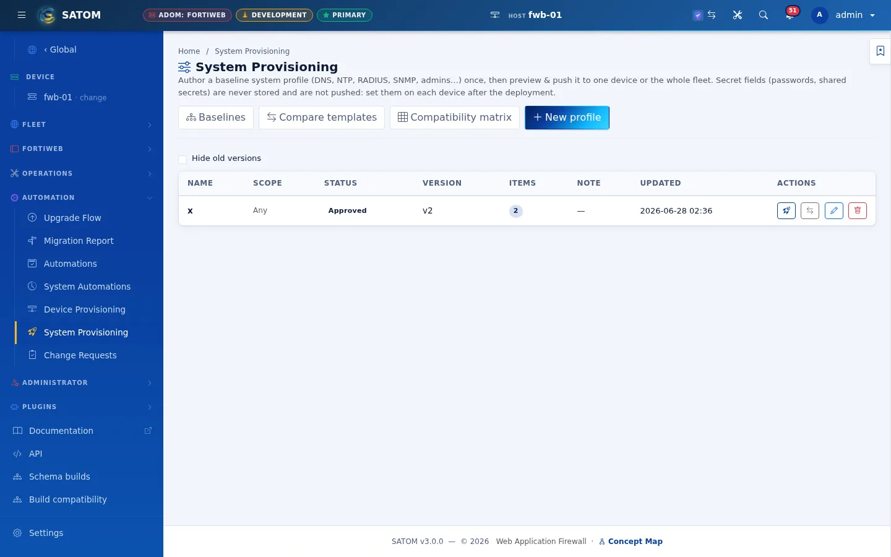
System Provisioning — the system profiles of the FortiWeb ADOM, with the comparison tools one click away.Every route on this page requires config_write, except approve/reject, which
require the template-approval permission (operations.template_approve), and
the read-only comparison, which needs only operations.view.
A system profile is a declarative list of configuration elements — DNS, NTP,
RADIUS, SNMP, administrators, and in fact any cmdb object the endpoint registry
knows about, offered grouped by the GUI section it belongs to. For each element
you pick the object, say whether it is a singleton or carries an mkey, and supply
its values as JSON. Rows reorder with the up/down buttons, and the order is the
order they are pushed in.
Every element writes a cmdb endpoint — never the GUI's own API, which no
build has evidence for. The NTP element writes system/ntp (ntpsync,
syncinterval); the NTP servers themselves are rows of system/ntp/ntpserver,
and the time zone and daylight saving live in the Global settings. Profiles
built with the old "NTP / time" element, which wrote the GUI's
system/maintenance.systemtime, are refused by the firmware check; rebuild
that element as NTP.
A profile also carries a scope — zone, line, department — drawn from the Classification vocabulary. That is what later lets a baseline match devices.
Secrets are never persisted and are not pushed. Elements that carry secret material are flagged sensitive, and saving the profile strips every secret-looking field out of the stored body — recursively — before it is written. A deployment therefore pushes those elements without their secrets: the apply preview names them, and the RADIUS shared secret, admin passwords and SNMPv3 auth/priv keys are set on each device afterwards. A template is a thing that gets versioned, shared, exported and reviewed; a template is not a place for a password.
Saving stores the profile as a versioned Template of kind system-profile
(§29). Editing it creates a new version rather than overwriting the old one.
Apply asks for a target hostname and a Change ID — both are required, and both land in the audit record, so a system-wide push is always attributable to a change.
Then it is two-phase, as everywhere else in the product:
dry_run, showing the exact planned requests per device.
Nothing is contacted for real.{canary, rest,
aborted}. Only an approved profile can be deployed live (approval is
operations.template_approve, admin-only); a pending or rejected profile
keeps its preview, and the refused attempt is audited. The preview also
shows the firmware check for each device, and the live push is refused for a
build the profile does not fit or was not validated for, for a build nobody
measured, and for a device that reports no firmware (§29.1.1). An approver
can override with an audited reason.Variables are rendered per device. A profile may carry {{ variable }}
placeholders (§29.1.4). Each device's writes are rendered from that device's
binding to the profile, as the Template Library's Apply does, so the preview
shows the values each device will receive. A device whose binding leaves a
variable unset is named in the preview (The live deploy will be refused: …),
and the live deploy, canary included, is then refused with the device and the
variable named. There is no override: set the value on the device's binding
first. A profile without placeholders is pushed the same to every device.
Choosing Entire fleet is explicit. Selecting "selected devices" and then selecting nothing is refused, rather than being quietly treated as "all" — the empty selection is exactly the shape a fleet-wide accident takes.
A saved profile is pending until someone with the approval permission approves it (making it selectable for baselines) or rejects it with a reason the author can read. Approval and authorship are separate permissions on purpose.
A baseline is a combo — a zone × line × department permutation — with a set of approved templates assigned to it. It answers "what should every device in this scope have".
{{ variables }} render per device here too, and each composing template
takes the variables of its own binding on that device. The preview names
every device left without a value, and the rollout is then refused before it
starts, with the devices and variables named (no override).The filter (zone / line / department / name) can be saved to your account and is restored on your next visit.
Two pages that are the same data seen from two ends: the Template Library is where desired state is authored and reviewed, and the Section Catalog is the approved subset, arranged the way FortiWeb arranges it. Two read-only tools answer the questions that come up when firmware moves: Compare templates (29.3) and the Template compatibility matrix (29.4).
FortiWeb ADOM → Administrator → Template Library (users without
user_manage who hold operations.view find it under Operations). A
template is a named,
versioned blob of desired state of a given kind (web-protection profile,
system profile, and the other configuration kinds). Editing never overwrites:
saving produces a new version of the same kind and name, and the previous
version stays.
The page header links to FortiWeb Sections (the Section Catalog, 29.2; admins only), the Factory catalog, the Compatibility matrix and Compare, next to New Template. Each row carries its firmware and self-check badges and a Compare with a newer version button beside View, Apply to devices, Clone and the review actions.
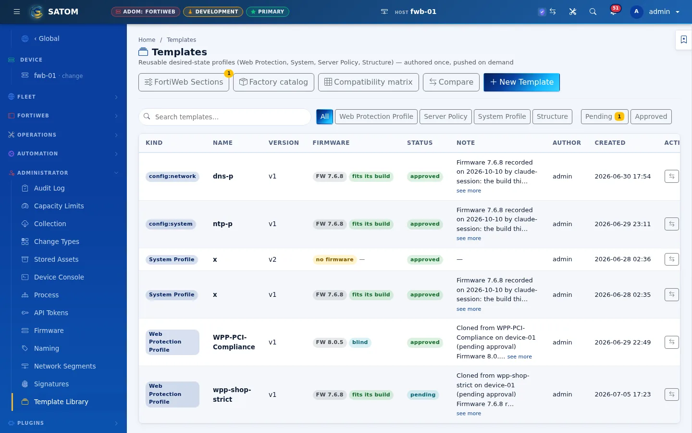
The Template Library — each template with the firmware build it was written for, and the tools that judge it against other builds.Templates can be captured from the FortiWeb pages. The pages that draw FortiWeb's own GUI carry the same tools the older SATOM pages had:
Permissions are split three ways, and they are not the same permission:
| Action | Needs |
|---|---|
| Browse the library | operations.view |
| Create / edit / clone / delete a template | operations.template_save |
| Apply a template to one device | operations.template_apply |
| Apply to several devices (a fleet rollout) | operations.apply and an approved template |
| Approve / reject / revoke approval | operations.template_approve (admin) |
So an operator can author a draft and try it on a single box; making it fleet-deployable is a separate, gated decision by someone else.
Lifecycle: pending → approved (or rejected) → applied.
Every template records the firmware build its body was written for and the REST API version it speaks (shown in the library's Firmware column and in the View dialog). FortiWeb answers a write carrying a field the build does not know with 200 and discards the field, so a body is only meaningful together with the build it came from.
Checked at save. The body is compared against its own build through the API library. A field that build does not serve is flagged in the library right away (does not fit its build), not discovered at apply time.
Checked at apply. The dry-run preview of every apply path (Template Library, section page, System Provisioning, baselines) shows a verdict per device for the device's running build:
| Verdict | Meaning | Effect |
|---|---|---|
| same / ok | every checked field is served by that build | passes |
| fields would be discarded | the build does not serve some fields of the body | blocks |
| renamed | the build serves the field under a new name | blocks — adapt the template |
| endpoint not served | the build rejects the endpoint itself | blocks |
no evidence for that build (unmeasured) |
nobody measured that build | blocks — measure the build first |
| device reports no firmware | nothing to compare against | blocks |
fields never measured (blind) |
the endpoint is served, its fields were never read | warning, never green |
| new fields not decided | the build adds fields the template does not decide | warning, naming the fields — adapt the template to decide them (29.1.2) |
A build nobody measured used to pass as a warning, which turned "unknown" into "accepted" by omission; it now blocks like a missing endpoint. A blind endpoint still warns, because it at least proves the object can exist on that build.
Sub-table rows and endpoints outside the API sweep are listed as not checked
rather than counted as fine. A blocked apply can be forced by a user holding
operations.template_approve who types an override reason; the override,
the reason and what it overrode are written to the audit log. The one block no
override lifts is an unset device variable (29.1.4): there is no value to
write.
Approval is for builds. Approving records the builds the template was validated for: its own build plus every build its product runs in the visible fleet. A fleet rollout (several devices, a baseline, a live System Provisioning push) to a build outside that set is refused until an approver uses Revalidate for fleet builds in the View dialog. A new version starts with no validations.
A template that does not fit is adapted, never edited in place — see 29.1.2.
Line profiles and the new-policy wizard. The Line Profiles page shows, for each line, the build its Web Protection Profile template was written for and the builds its approval covers; the template dropdown lists each version's build. The From a line profile wizard binds the profile that is already on the device by name and writes no template field, so it never blocks on firmware. It does warn when the line's template does not fit the device's build, or was never validated for it, because the profile on that device may have been pushed incomplete.
Exceptions carry a build too. Every carve-out records the firmware build and API version of the appliance it was authored on; a carve-out placed onto other appliances keeps the build it was written for, and editing its payload restamps it with the appliance's current build. A rollback or restore brings back the build the old payload was written against (carve-outs saved before this show unrecorded). ⬆ Inject to device and the Attack ID insert show the verdict for the target's build in the dry-run: fields discarded, renamed or an endpoint not served block the push, and an approver can override with an audited reason. Unlike templates, no evidence is still a warning for a carve-out, never green: today the API sweep does not measure the exception sub-tables, so most pushes show it, and the check starts blocking on its own once a sweep records those fields.
In the View dialog, pick a target build under Adapt to firmware and press Preview. SATOM lists three kinds of change:
A field whose value is a secret (a password, a shared secret, a key; for
example jwt-token-secret, which appears on 8.0.6) offers only keep device
default: a template never stores a secret, so you set it on the device.
Save adapted version writes a new pending version (adapting is
authoring, so it needs operations.template_save and a fresh approval) stamped
with the target build. Its note lists every rename, removal and decision, and
the decisions are stored with the version. The original version is untouched.
Two cases are refused: a body whose object the target does not serve at all
(no field change can make an endpoint exist), and a body with nothing to
change.
An apply to a newer build whose new fields the template has not decided is not blocked; the preview warns with the field names, because the device default applies to them.
A template saved before builds were recorded shows no firmware, and newer builds cannot be judged against it. In its View dialog, Find the build it fits checks the body against every measured build of the ADOM and lists them best fit first (nothing discarded, nothing unmeasured, the oldest build on a tie). Record that build stamps the best fit as the build the template was authored for (never as captured) and appends a dated line to its note.
Recording needs operations.template_approve, and it is refused when:
A template is the shared intent of its ADOM. A device does not get a copy:
it gets a binding to the template family (kind + name), managed in the View
dialog under Devices this template governs (operations.template_save).
For each binding you choose:
| Field | Meaning |
|---|---|
| Device | a device of the template's own ADOM; a binding cannot cross ADOMs (a FortiWeb template cannot govern a FortiADC) |
| Version | newest approved (the default: the device follows each new approved version) or one version pinned |
| Variables (JSON) | the device's own values for the body's placeholders, as a flat object {"name": "value"} |
A device has at most one binding per family; binding it again updates the binding. The bindings table shows, per device, the version it follows, the build it is checked against, the verdict (fits / does not fit, with the reason), its compliance and its variables. A binding whose family has no approved version, or whose pinned version no longer exists, whose device reports no firmware, or that leaves a variable unset, shows as not fitting.
Compliance is whether the device still runs what the template says: met (every compared object matches), deviates (at least one does not — the tooltip counts them, and the Intent deviation alert, §26.6, names the fields) or unmeasured (nothing could be compared: no approved version, a variable unset, a collection the device sync has not cached — the tooltip says which). It is computed locally from the cached device objects, the same way the approval modal diffs a write, so opening the dialog never contacts a device; it ignores what the appliance derives on its own and compares top-level objects only (sub-table rows count as not compared). Fits and compliance are different questions: a template can fit a build perfectly and still not be what the device runs.
Variables. A value that differs per device (an address, a host name) is
written in the body as {{ name }} (letters, digits, _, ., -). The View
dialog lists the names the body asks for. A value that is exactly one
placeholder takes the variable's value as is; a placeholder inside a longer
string is replaced by its text. Apply (in the Template Library, in the
section libraries on the FortiWeb pages, and in System Provisioning and its
baselines, §28.2 and §28.4) renders the body per device, and
refuses a device whose binding leaves a variable unset — with no override,
because a literal {{ name }} would otherwise be written to the box. A body
without placeholders is pushed the same to every device.
The Web Protection Profile lock follows the bindings. An approved WPP template with no binding keeps the old rule: the profile is read-only on every FortiWeb of its ADOM. Once it has bindings, it is read-only only on the bound devices. The lock never reaches a device of another ADOM.
Bindings also decide which templates the matrix counts as bound (29.4) and which templates the upgrade pre-flight checks for a device (29.5).
Template Library → FortiWeb Sections (admin, user_manage; a badge on the
button counts the templates pending approval). It lists only templates whose
status is approved, grouped by the FortiWeb section each kind belongs to,
with an unknown-section bucket last so nothing silently vanishes.
Two things it is not:
This is the connective tissue to §28. The approved templates listed here are exactly the pool that baselines draw from: a template is authored in the library (29.1), approved, appears here grouped by section, and is then assignable to a zone × line × department combo in System Provisioning (28.4). A template that never got approved cannot reach a baseline, which is the point.
System Provisioning → Compare templates, also linked from the Template
Library (Compare), from the matrix and from the Compare with a newer
version button on every row of both lists (operations.view). It answers one
question before anything is provisioned: is this newer template a valid
replacement for the one the device has, on this build or on this device? It
is read-only: nothing is saved or sent.
Pick:
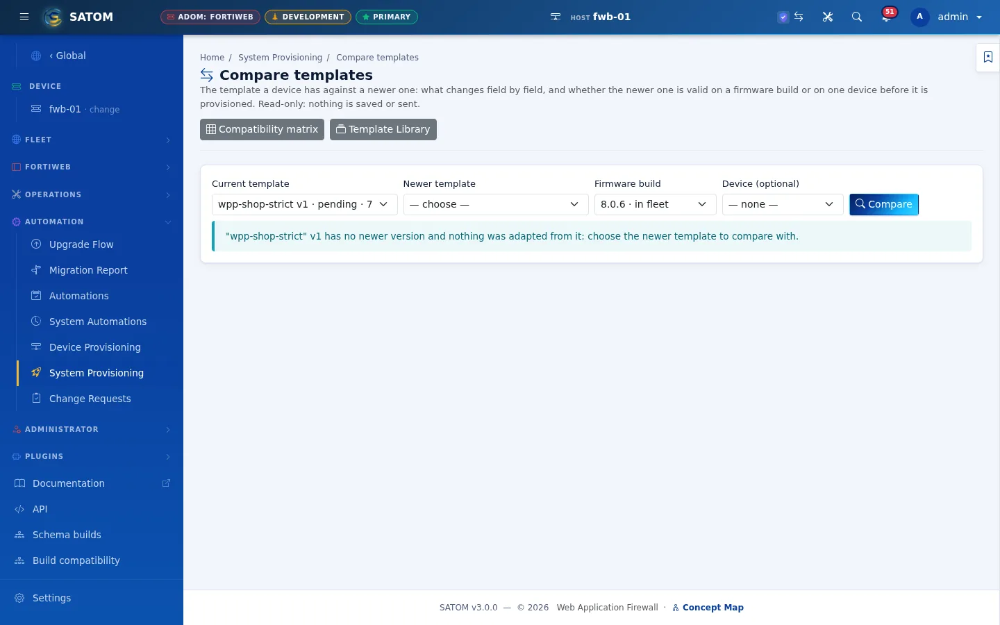
Compare templates — the current template against a newer one, on a build or on one device.The result has four parts:
+),
removed (−) and changed (~, old → new). Identical bodies say so: then
only the stamp, the status or the decisions differ.Append ?format=json (or send Accept: application/json) to get the same
result as JSON.
Template Library → Compatibility matrix (also from System Provisioning and
from Compare templates; operations.view). Every template of the ADOM is a
row, every firmware build the ADOM knows is a column: each build that has been
measured or runs in the fleet, newest first. A column header counts the
devices running that build (hover for their names) or says not measured.
Each row also shows the build the template was written for and its
bound devices (a number, or all (no binding)).
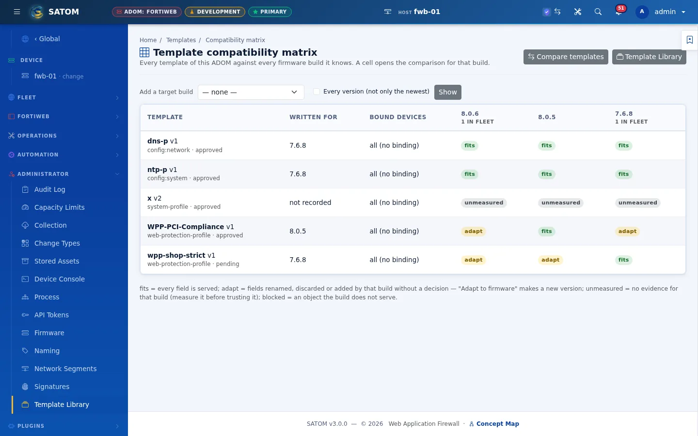
The compatibility matrix — one verdict per template and build; a cell opens the comparison for that build.| Cell | Meaning |
|---|---|
| fits | every field is served by that build |
| fits, warnings | served, with warnings — for example fields that were never measured on that endpoint |
| adapt | fields renamed or discarded by that build, or fields it adds that the template has not decided: Adapt to firmware (29.1.2) makes a new version |
| unmeasured | no evidence for that build: measure it before trusting it |
| blocked | the build does not serve an object the template writes (or the check could not run) |
Hover a cell for the full verdict; click it to open Compare templates for that template on that build (29.3).
Two controls above the grid:
The upgrade pre-flight (on every product but FortiADC) checks, against the
target build, every template that governs the device: the templates it is bound to, plus every
approved template of its ADOM that has no binding at all. That templates
section is graded: a template that does not fit the target fails the
pre-flight, because its next apply after the upgrade would be refused, and
re-running the pre-flight changes nothing. Adapt the template (29.1.2), or
move the binding to an adapted version, before the window. Templates that fit
but leave new fields undecided are counted in the summary without failing it.
The pre-flight itself is described in §40.
Every product workspace has an API console (§17.1, §17.2, §17.3 and §17.4 cover the ADC, FAC, FAZ and FortiGate ones). This section documents the FortiWeb one and, more importantly, the registry model all five share.
The registry is the map from a logical endpoint name the application uses
(server_policy, dns, system_global…) to the concrete URI on that
firmware. There is one catalog per product, each with its own API dialect
(FortiWeb v2.0, FortiADC v1, FortiAuthenticator v1, FortiAnalyzer
JSON-RPC).
It is DB-first, seeded from an endpoint baseline:
baseline:<product>@<build> is the baseline's,
anything else is an operator's);A newer firmware is followed by promoting a baseline from its measurements
(flask apilib baseline promote), not by editing a file. The operator's view of
that, and flask apilib baseline check for drift, are in
api-library.md §9.
Reads go through a short-lived per-process cache. An edit invalidates the cache of the worker that served it immediately; the other workers converge within a minute.
This is why §17.3's claim holds. When a firmware upgrade moves a URI, the fix is a registry edit on the affected product's console — a row change, audited, effective across the workers within a minute. It is not a code change, not a release, and not a redeploy.
Editing needs registry_edit, every change is audited with the before/after
URI, and it happens in place on the console's API-menu tree — the standalone
Registry page was fused into the explorer, so there is one page and one write
path rather than two that can disagree. Old /registry and /registry/<section>
bookmarks redirect to the explorer; /registry/search still serves a plain
name/URI search across the catalog.
Two rules on the write path:
_, -, .) and a URI must be an
absolute API path. A duplicate name within the same product and API version is
refused, naming the row it collides with.enabled=false and keeps
the row, precisely so the boot seeder cannot resurrect a name the operator
removed. Re-enabling is the same button. Nothing here hard-deletes a catalog
entry.FortiWeb ADOM → API — the registry catalog browsed as the FortiWeb API menu on the left, and a request console on the right: pick an appliance, pick or type an endpoint, choose a method, supply a JSON body, execute.
registry.execute_write permission
and are refused with that message otherwise. Note that this is a separate
permission from registry.edit: one lets you change the catalog, the other
lets you fire writes at a device through it. The internal pass-through under
/api/fw/<id>/proxy/… and /api/adc/<id>/proxy/… applies the same rule.Unlike the FortiADC, FortiAuthenticator and FortiAnalyzer consoles (§17), the FortiWeb explorer's writes are not dry-run by default — this is the raw request console, and the confirmation is the permission.
The FortiADC, FortiAuthenticator and FortiAnalyzer consoles share one write
policy: a write without Apply returns the request (method, path, body) and
sends nothing; an applied write is audited whether the device accepted or
refused it (the refusal is recorded as the error); reads are not audited. Their
catalog editors go through the same writer as FortiWeb and FortiADC, so the
name/URI rules and the duplicate check of §30.2 apply to all four (a
FortiAuthenticator URI must also stay under /api/v1/).
Since 2.2.0 the explorer also knows which firmware build the selected appliance runs and what that build serves: see §30.10.
Endpoint conventions, dialects and per-product quirks: docs/device-api.md.
API explorer → Reconcile (/web/registry/reconcile) or, in the FortiADC
workspace, API hub → Reconcile (/adc/api/reconcile). Needs
registry_edit, same as editing a row — because that is what Apply does.
The rediscovery sweep (§4) already asks a live appliance about every endpoint in the catalog. This page reads those verdicts back across all live appliances of the product and sorts the catalog into six cards:
| card | meaning |
|---|---|
| Evidence | which appliances were believed, and which were thrown out |
| Not served by any live appliance | the only bucket with a disable button |
| Cannot conclude | served by one appliance and absent on another, or simply not measured everywhere |
| Never measured | in the sweep plan, no sweep has ever asked |
| Outside the sweep plan | no sweep can ever answer — sub-tables that need an mkey |
| (verified) | counted in the header; nothing to do |
An appliance can be excluded from its own evidence. A device answering errors to more than a quarter of the sweep — the threshold is 25 % — is reporting on itself, not on the catalog, and the page names it in the Evidence card with the ratio. The real case: an appliance whose licence had lapsed answered an error to 283 of 321 reads while the inventory still showed it green. Believed naively it would have condemned the entire catalog.
Before you press Disable, read the warning at the top of the proposals card. Absence is a statement about a firmware release, not about an endpoint. If every appliance you own runs the same line — which the card tells you — then "absent everywhere" means "not in that release". On the first real run, of the 38 endpoints both healthy 7.6.8 appliances rejected, several were 8.0 features. Disabling them removes from the catalog exactly what your next upgrade needs.
Apply performs the ordinary soft delete: the row is kept, disabled, audited and
restorable from the explorer. Submitting a name the evidence does not condemn is
answered rejected — the form filters the proposals, it does not authorise
them.
API explorer → API versions (/web/registry/versions, and the FortiADC
twin at /adc/api/versions). Also registry_edit.
Where the answers come from (2.2.0). Everything on this page is read from the API library — the append-only record, in the database, of what each build serves (API library). Evidence is never rewritten and a retired appliance keeps what it proved, so a build does not vanish from this page when its last appliance is deleted. The API library: selector under the title switches product: FortiWeb and FortiADC get this whole page; FortiAuthenticator, FortiAnalyzer and FortiGate get the library cards only (§30.8). The Library comparison and Endpoint drill-down cards at the foot of the page are described there too.
Two firmware builds can speak the same API version and still not accept the
same payload — and so can two builds of the same line. FortiWeb 7.6 and 8.0
are both v2.0; measured on this fleet's own data, admin has 40 fields on 7.6
and 42 on 8.0, system_global 60 versus 63, ntp 3 versus 4. And 8.0.4 and
8.0.7 are both "8.0" while their CLI is not the same. If nothing tracks that,
a payload built against one build and written to another fails on the appliance
— which is the wrong place to find out.
So the unit of evidence here is the full version (8.0.5). The line
(8.0) survives as a rollup you can compare against, but it is no longer
tabulated on its own: with one measured build per line that table repeated the
build table row for row. It is called out only when it says something a build
row cannot — see heterogeneous lines below.
The page has four parts:
declared · unmeasured, which
is not the same as a measured build that turned out empty. Evidence
counts the library documents stored for the build and First / last seen
dates them; a retired appliance still counts as a witness.
Each row also carries a Discovery run link, scoped to that build: it
aims the Discovery run — API + CLI card directly below this table, so
the candidates, the appliances offered and the findings all answer about
the build whose row you clicked. Starting a capture from it returns you
here — still on that build, and watching the sweep it just started.Endpoint / object,
Evidence, URN, then 7.6.8, 8.0.5, Test. One row per finding, and
then everything measured on 7.6.8 next to everything measured on 8.0.5.absent on one side and served on the other, or a field count on each
side with the signed difference beside the one that moved. A row where one
build column says not measured on 8.0.5 is a gap — nobody asked
that side. A row whose Evidence cell names a different kind per build
is incomparable and is never subtracted. The class labels (added on,
gone on, fields known only on, the 8 → 14 subtraction) were all
removed from under the name during 2026-09-16: every one of them restated
a cell already beside it.Evidence, in second position, says which kind of evidence the row
rests on — sweep (the raw collection the appliance put on the wire) or
schema (a harvested field schema, which strips the wire-only companion
of every enum). The two are never subtracted from one another: a naive
subtraction across the two kinds reported 56 phantom removals on the first
draft of this page. An incomparable row is incomparable because the
sides disagree, and there the cell names both kinds and which build holds
which.user_group is an
endpoint a sweep asked about and an object a harvest described, so it
appears twice — once per kind of evidence. The Evidence cell of each row
carries an also: sweep / also: schema marker pointing at its twin,
with the sentence explaining why the two are reported apart. It is a
pointer and never a merge: neither row borrows the other's numbers.
Added 2026-09-17, after an operator read one twin's "not measured" as the
other twin's sweep having failed.API first, then CLI, with that transport's answer
beneath it. The CLI half answers only for the CLI: under a head that
already says CLI, a verdict naming the API repeats the line above it.served, absent, or not measured on 8.0.5 — a rejection and an
unasked question never share a word) and how many fields its evidence
carries. The signed tally (+6 added) stays printed; the field names
open in a window from the [+] button beside it, under the build that
has them — the base column lists what was lost, the target column what was
gained. The names are not in the row's text, so typing one into the
filter will not find it: a row counted as a hit on text the operator
cannot see is worse than a miss.CLI, and a build with no dump of its own shows an em
dash and says why rather than borrowing the other column's answer. There
is deliberately no "CLI added / CLI removed" of the firmware: a dump's
set lines are the fields somebody configured on one appliance, and
the two columns are two different appliances. Where both builds printed a
block the page does show N set(s) and a signed difference — with the
two-appliance caveat on every number that carries it.Why a side has no schema. Schema evidence does not come from a sweep. It
comes from an offline harvest (scripts/build_field_catalog.py) against
one reference appliance per firmware line, and that harvest can only
describe a table the appliance has actually populated. So an object can have
no schema on a line for reasons that have nothing to do with the firmware,
and the row would say only not measured on 8.0.5.
Each harvest now records what it could not do, per object, into
data/field_schemas/<product>/<line>/_coverage.json, and the page reads it:
why beside not measured on … opens the recorded reason: the
table is empty on the reference appliance (a fact about that box, not
about the firmware — configure one row there and re-run the harvest), the
appliance rejected the URN (which does not say whether the object is gone
from this build or the registry path is wrong for this line), or the
device was unreachable.A sweep gap carries no such reason — a sweep's silence is recorded nowhere, and lending it the harvest's sentence would explain one absence with another absence's cause.
But a gap is not automatically a question nobody asked. When the sweep
holds a verdict for that object on that build, the cell leads with it —
served or absent, the same two badges the endpoint rows use — and states
the missing half beside it as no field names on 8.0.5. Only a key the
sweep has no record of keeps the bare not measured on 8.0.5. The export
carries the same verdict, because a blank spreadsheet cell reads as no
finding.
The rule underneath explains most of this column: a FortiWeb cmdb GET
returns the entries somebody configured, not a schema. There is no
action=schema — measured against both reference appliances on 2026-09-17,
every such query parameter is ignored and the reply is the same empty list.
A build can serve a URN perfectly and still teach nobody a field name until
a row exists on the box. The verdict says the object is there; the blank
says nobody has configured one.
A new firmware line therefore needs one entry in
SATOM_FIELD_CATALOG_SOURCES (in .env: fortiweb=8.2:<appliance>,…) and
one harvester run. Everything above follows from the record that run writes,
with no code change.
Each row also carries the REST path when its evidence has one and a Test button, which opens the live-appliance panel in a dialog. A row derived from a harvested object schema has no REST path of its own, so it offers no button rather than a button that cannot work. Comparing a rollup says so, and names the builds inside it.
Export CSV / Export PDF, beside Compare, download exactly the
comparison on screen — including the field names that live behind the [+]
windows, which bucket each row came from, whether it is a change, and
the recorded reason a side has no schema. Both formats document every
column: the CSV below a blank row (so a spreadsheet's auto-range cannot sum
the documentation), the PDF as a legend after the findings.
Before 2026-09-16 these findings were split across three tables, and a key
whose only finding was a field delta was listed in one of them and absent
from the other — an absent row reads as "nothing to report about it". The
single Change cell that replaced them carried six different shapes and one
object printed eighteen field names inline; it became fixed slots, then lost
the "fields changed" label, then absorbed the two transport columns, then
split into a column per build, gave up the evidence kind to a column of its
own and the added on / gone on labels to the two build columns that
already measured them — and then emptied the name column entirely.
4. Preflight — name an object and the fields you intend to send, and get
ok, unknown_fields, absent, fields_unknown, version_unmeasured or
unmeasured.
Heterogeneous lines. When two or more measured builds share a line, the page says so above the comparison: it names the builds the line merges and lists the endpoints only some of them served. Those are reported as partial, never as "the line serves it" — a merge is not a box. When every line holds a single measured build there is nothing to say and nothing is shown.
unmeasured is an answer, never a yes. If SATOM has never seen that build,
it says so rather than guessing; the fix is to harvest an appliance running it
(Harvest this appliance now in the API explorer for a FortiWeb, §30.10;
Schema builds → Harvest for a FortiAnalyzer, §30.12) or its field
schemas. The page reads the library directly, so the new evidence shows on the
next load.
version_unmeasured is the narrower one, and it is the whole point of the
build axis. It means that build has no evidence while other builds of its
line do — and SATOM will not answer for it out of theirs, because 8.0.4 is not
8.0.7. It is not a refusal either: the line-granular answer is printed beside
it, labelled, so you can see what is known and decide.
Registering a build. Versions already proved by an uploaded firmware image or by an appliance in the fleet appear on their own — they are derived on every read, so no upload path can forget to register one. The form at the foot of the table is for the builds nothing proves yet ("8.0.7 is coming and I want to see its column"). Forgetting one only removes the hand-written note; a build an image or an appliance proves stays listed.
Evidence from before 2026-09-16 (the frozen FortiADC matrix) names a line,
not a build. It is kept as legacy_matrix evidence and shown as patch
unknown rather than reinterpreted as a build nobody ran. Nothing drops a
witness any more: an appliance deleted since its sweep is listed as retired,
and its build stays.
The same answers are available on a node whose web interface is down:
satom get api versions
satom get api preflight {device} admin fortiai old-password
satom get api preflight 8.0 admin fortiai old-password
Exit codes: 0 understood, 1 some field is not on that line, 4 unmeasured,
2 you typed the command wrong. 4 is separate from 0 deliberately — a
script must never reach "go ahead" from "I have no evidence".
Both commands print when the matrix was built, because they read the export file Rebuild writes from the library — a snapshot, not a live query. The page itself needs no rebuild. Details, evidence rules and the CLI contract: docs/device-api.md §6–§7.
A comparison that reports an object as gone on 8.0.5 is stating that the build rejected the path SATOM holds for it. That sentence is true in two completely different worlds, and they need opposite work:
The REST API cannot tell them apart: a rejected URN looks the same either way.
So the page asks a second source — the appliance's own CLI configuration
dump, which is addressed in CLI syntax and therefore cannot inherit a mistake
in our URN — and prints its verdict beside the absent badge:
| verdict | what it means | what to do |
|---|---|---|
| gone — corroborated | the build rejects the path, its own dump has no block for it, and the dump of the build it is compared against does | nothing; this is the finding |
| check the registry | the build rejects the path but its dump still holds a block | verify the path in the console, then correct the catalog entry |
| gone — one source | the dump never held a block on either side, or the object is a runtime readout that cannot have one | capture a dump of the older build, if it should have one |
| not corroborated | no dump has been captured for that build | capture a CLI configuration dump of it |
The last two are not doubts about the rejection — the build answered. They are statements about what a second source would add.
Why a missing block is not, on its own, proof. An empty table prints no block, so "no block" cannot mean "not in this firmware". What makes the pair conclusive is that the two weaknesses do not overlap: an empty-but-existing table still answers over REST, so a rejected URN rules that story out, and the earlier build's dump proves the object was ever there to lose. Corroborated therefore requires all three — rejected now, no block now, a block before.
A counter above the table splits the gone rows across the four verdicts, and
the CSV and PDF exports carry the verdict in a corroboration column. The
column is blank on every row that is not a disappearance claim, which is not
the same thing as an uncorroborated one.
The comparison is derived and is rebuilt on every sweep, so a finding it
produced yesterday leaves no trace of when it was first proved or whether
anybody looked at it. Corroborated disappearances are therefore also written to
a ledger (object_absences), keyed by product, name and the two scopes
compared. Re-proving one updates the row — it never mints a second — so
"since when has this been true?" stays answerable.
It is written at the two moments the evidence can change: at the end of a rediscovery sweep, and on the alert timer. The alert family is API catalog integrity (Settings → Alerts), and it deliberately reports the two cases at two levels:
A corroborated disappearance is acknowledged automatically (absence.autoack,
on by default): it keeps being reported on the page, but it stops being an open
question, and the review queue -- the chips in the comparison itself, see
below -- shows only what still needs a person. A
contradiction is never acknowledged automatically — it is precisely the case
that needs the person this would be replacing. A human decision is never
overwritten by the timer.
The ledger is read back inside the comparison, so the queue is not a second page you have to remember to open. Every gone row that the ledger holds a record for carries a chip next to its name:
| chip | meaning |
|---|---|
| needs review | recorded and still open; click it to decide |
accepted · <who> |
somebody (or the automatic pass, as system) took it as true of the firmware |
refused · <who> |
somebody looked and said no; the row is kept so the refusal is on the record |
A row the ledger does not hold shows nothing at all — never an empty badge, and never a neighbour's chip.
The chip is a button only while the finding is open. Clicking it opens a window with both sources, the appliance the dump came from and when it was captured, when the finding was first proved and how many times it has been re-proved since, and two verbs: Accept and Refuse. Neither writes the endpoint catalog (see below); both record who decided and when, and the page returns to the comparison you were reading rather than to the default one.
The scopes in that window are the ledger's own, and they may not be the two
on screen. A disappearance is recorded against the firmware line that
removed it, so a 7.6.8 → 8.0.5 comparison shows the 7.6 → 8.0 record and
says so. That is deliberate: a decision taken here applies to the line, and a
window that showed it without its scopes would let it read as a decision about
those two builds, which nobody made.
Two comparisons get no ledger entry at all, each with its own sentence above the table rather than a blank:
8.0.3 and 8.0.5. That is not a
claim that nothing disappeared between them.7.6 → 8.2 would count everything 8.0
removed a second time. Compare the adjacent lines to see the record.The chip never changes the verdict beside it. The badge on the row is still the
one measured from that build's own evidence; the ledger only adds since
when and who looked. The CSV and PDF exports carry both as the
ledger review and ledger scope and age columns — the PDF gives them a third
table, joined to the findings by object name. A blank there means the row is
not in the ledger for this pair, which is not the same as unreviewed.
The candidate CLI spelling is recorded and shown, and it is not written to
the catalog. RegistryEndpoint is keyed (product, api_version, name) with one
URN per name and no firmware dimension, and a contradicted row is by
construction one whose base scope is still served by the current URN — so
writing the other spelling would break the base line every single time.
Independently, a configuration dump cannot decide which of two spellings is the
wrong one. So the page offers no apply button rather than one that always
refuses. Giving the catalog a per-line dimension is what would unblock it, and
that is a change to the resolution path every service in the product goes
through.
Since 2.2.0 the API versions page (§30.5) is a window on the API library: the database record of every endpoint and field each firmware build serves, where each fact came from, and when it was first and last seen. Evidence is only ever added — re-harvesting the same build confirms what is there, and a retired appliance's evidence stays. The reference is API library.
The product selector. Under the page title, API library: lists one button per product, with the number of builds the library holds for it (hover for endpoints and evidence documents). FortiWeb and FortiADC open their full page. FortiAuthenticator, FortiAnalyzer and FortiGate open a library-only page — the three cards below and nothing else, with Back to returning you to the page you came from. FortiGate carries a catalogue badge: SATOM does not manage FortiGates, and their API is held for reference.
Where each product's knowledge comes from:
| product | evidence |
|---|---|
| FortiWeb | rediscovery sweeps of your appliances, and harvested field schemas |
| FortiADC | sweeps, and a frozen line-level matrix from before the build axis |
| FortiAuthenticator | the appliance's own API schema, read live and read-only |
| FortiAnalyzer, FortiGate | the vendor's Ansible collections — a claim, not a measurement |
Every source is shown as a badge (sweep, schema, vendor_doc,
legacy_matrix, manual); hover one for what it means. Vendor evidence never
outranks a measurement of a real box, and an open vendor range stops at the
newest build the vendor data knew about — a later build reads unmeasured.
Library builds (on the library-only page) lists every version the library
knows, measured or not: Status (measured, vendor only, unmeasured),
Origin, Sources, Evidence (documents stored), In fleet and
First seen / Last seen. A build whose patch level was never recorded is
marked patch unknown. On the FortiWeb and FortiADC pages the same
information lives in the Firmware versions table.
Library comparison — pick a base and a target build and press Compare. The default pair is the two newest measured builds, because the usual question is "what does the next upgrade change?". The badges total endpoints added / removed / unknown and fields added / removed / retyped / renamed; below them:
A side that is unmeasured or vendor only is flagged above the totals, so a
claim is never read as a measurement.
Endpoint drill-down — pick a build and type an endpoint name (the box
suggests the endpoints that build serves), then Show fields. You get the
endpoint's status on that build (measured, blind — it answered but no row
revealed its fields, absent, unmeasured), a provenance table (which source
said what, its witnesses, first and last seen, and which one the answer
used), and the fields with Type, Required, Default, Options
and Evidence.
Since which build? Every field row has this button. It opens the field's history: first seen on and last seen on, every build and source that recorded it, and any vendor range — an open range is marked open, capped.
A FortiGate catalogue is about 720 endpoints per build across dozens of builds; the page never renders it whole, so it opens as fast as the FortiWeb one.
/web/registry/field-map — find it on the Concept Map (§39) as API Field
Renames; the page links back to API versions. Needs registry_edit.
When a firmware renames a field, the library otherwise reads it as one field lost and an unrelated one added: the clone pre-flight warns that the old name is dropped and offers the new one as a stranger, and the upgrade pre-flight counts a loss that the firmware migrates on its own. A mapping here makes the build comparison (§30.8), the clone pre-flight (§41.8) and the upgrade pre-flight report it as a rename.
Add a rename — product, endpoint, old field name, new field name, optionally from build and up to build, and a note saying where the rename is documented. Leave a build empty for "any": the mapping applies to a comparison that crosses it — the old name on or before the first build, the new name on or after the second. The form refuses two identical names, an old build that is not earlier than the new one, a note over 500 characters, and a mapping identical to one already in force.
After saving, the page tells you whether the library already has evidence for both names. A mapping for a field nobody has measured yet is kept, and applies once a build that serves it is measured.
Mappings are never deleted. A wrong one is retired: the Retire button stamps who retired it and when, every reader stops applying it, and Show retired lists it for the record. Re-adding it later creates a new row with its own author. Both actions are audited.
What a rename changes elsewhere. On an upgrade a mapped rename is not a
loss — the firmware converts the configuration — and the pre-flight says
N field(s) renamed. On a clone it is still a warning: the copy carries
the source's old name, which the destination discards, so the clone dialog
offers the new field with the source's value beside it (§41.9).
The FortiWeb API explorer (§30.3) used to be keyed on the API version only, so a 7.6.8 box and an 8.0.5 box looked identical and a request went anywhere. Since 2.2.0 it resolves the selected appliance to its exact firmware build and asks the API library what that build serves.
The build banner (above the console) names the product and version and carries one status:
| status | meaning |
|---|---|
| measured by sweep / schema | a real appliance on this build was measured |
| vendor data only | only the vendor's documentation covers it — a claim, not a measurement |
| unmeasured | the library has no evidence for this build |
| firmware unknown | the appliance's firmware was never read from it |
Below it: the tally API Menu on this build: N served · N absent · N unknown, and the evidence behind the answer (source, device, whether it covers the build, its line or a vendor range, and when). The banner refreshes whenever you pick another appliance; it is empty rather than guessed while it loads.
The API menu is marked per endpoint:
Tick Only what this build serves to hide everything else.
Fields on this build — selecting an endpoint lists the fields it serves on this build with type, options and default. A field that is provably newer than an older measured build carries a since hint. If this build is blind (an empty table revealed no fields) and a schema was harvested for its line, the line's fields are shown separately, labelled as the line's and not this build's.
Sending a request is checked on the server, whatever the page shows:
The write permission (registry.execute_write) is checked first, as before.
Harvest this appliance now. When the build is unmeasured, vendor-only or
its firmware unknown, the banner offers this button. It queues one background
harvest of that appliance — a rediscovery sweep for FortiWeb and FortiADC, a
read-only schema read for FortiAuthenticator and FortiGate, a read-only
per-object syntax walk for FortiAnalyzer — visible in the Job Manager. It
needs appliances.apply. A harvest that read nothing (for FortiAnalyzer: no
object answered its syntax, or most were refused) ends as a failed job with
the reason, never as evidence. The answer says so when it cannot: the
appliance kind has no live harvester, the appliance is in maintenance,
a harvest is already pending, or background harvesting is switched off on this
installation. SATOM also queues a harvest by itself when it sees an appliance
change firmware build; the apilib_harvest scheduled action (not scheduled by
default) sweeps up any build still missing.
The API explorer belongs to the FortiWeb ADOM, so its picker and this button only offer FortiWeb appliances. A FortiAnalyzer is harvested on demand from Schema builds (§30.12): its Harvest runs the same read-only syntax walk and stores the same evidence. Other products rely on the firmware change and the scheduled action above. On a FortiAnalyzer the CLI tree a knowledge pack brings and the syntax walk describe the same objects, and the library reads them as one: on 7.6.7, 1,494 fields are both and none is REST only.
Harvest CLI schema. A second button reads the appliance's CLI side: the
tree command (the whole CLI schema of the build: every object, field, type,
option and range) and show full-configuration (field names only, never
values), plus one REST read per object the library has not measured. It is
read-only on the box, runs as a device job and needs appliances.apply. It is
what fills the CLI columns of the Build compatibility page (§30.11).
The same REST API version carries different fields on different firmware
builds. Build compatibility (Automation → API in the sidebar;
/web/registry/build-compat/; needs the registry edit permission) shows, per product, every object and field
against the builds you pick, by channel. The full reference is
Build compatibility.
| Cell | Means |
|---|---|
| both | REST and the CLI serve it |
| CLI only | only the CLI serves it on that build |
| hidden | only show full-configuration prints it |
| REST only | REST serves it, the build's CLI schema does not list it |
| CLI (REST not measured) | in the CLI schema; REST was never measured for that object on that build |
| meta | REST bookkeeping (_id, seq, q_type, *_val …), not configuration |
| absent | measured, not there |
| unknown | nothing measured it |
The same check runs on every write. Template apply, approving a template with auto-deploy, system profile and baseline apply, the WAF carve-out push and the object editor (§7.3) all check the payload against each target's build before writing:
lb-algo does not exist in …: it will be skipped on 3 appliances);From the console: sudo satom execute apilib compat fortiweb 7.6.8 8.0.6 and
sudo satom execute apilib channels fortiweb 8.0.6.
When an appliance starts running a firmware build whose schema SATOM has never
harvested, every administrator gets one bell notification for that product
and build: New build 8.0.7 on fweb-01: schema not harvested. It links to
Schema builds (Automation → API in the sidebar — under Operations in a device ADOM, in the Global block in Global;
/schema-builds/; reading needs registry.view).
The page has three parts:
appliances.apply; audited). For a
FortiAuthenticator, give the CLI password (optional): SATOM stores the REST
API key, which cannot log into the CLI; the password is used for that harvest
only and never stored. A product SATOM cannot read live (FortiGate) points to
importing a harvester pack instead.The schema_watch scheduled action repeats the check for the whole fleet; the
schema_harvest scheduled action harvests what is pending. Neither is scheduled
by default.
Instead of harvesting, you can import a knowledge pack (§22.3): each release ships one with the builds the SATOM team measured in its lab.
Two different things share the name "release notes", and confusing them wastes an afternoon. One is the vendor's notes for the appliance firmware, harvested into the product. The other is SATOM's own changelog, which tells you what changed in this manager. This section covers both, in that order.
Nothing in the code has to change. Every axis on this page is derived:
declared · unmeasured until something sweeps it;8.0 → 8.1 becomes a
tracked pair on its own, without touching 7.6 → 8.0;10.0 sorts after 8.0 rather than
before it;Two things still need a person when a line appears, and the page says so rather than pretending otherwise:
SATOM_FIELD_CATALOG_SOURCES and re-run the harvest. Until then the
coverage banner reads "no harvest has ever been recorded for firmware line
8.1 — its objects are unmeasured here, which is not the same claim as
unchanged".—, which is the correct answer and not a zero.This is the case that used to lose data. The ledger pairs adjacent lines, so a
new 7.8 re-pairs 7.6 → 7.8 and 7.8 → 8.0, and every row filed under
7.6 → 8.0 — including decisions a person took — stopped being reachable from
any comparison while nothing re-proved them. Measured on the live ledger: five
decided rows went to zero visible rows, in silence.
Now such a pair is:
catalog family;In the FortiWeb, FortiADC, FortiAuthenticator, FortiAnalyzer and FortiGate ADOMs the top banner opens a Release Notes modal. It reads a corpus of harvested vendor notes — Known and Resolved issue tables plus the prose sections — and it is the corpus §12 step 3 diffs against when it advises you on an upgrade.
The corpus comes from signed packs only (SATOM 3.0): the API pack that ships with each release and the rolling knowledge pack fetched from the knowledge feed or uploaded by hand (§22.4). SATOM itself no longer contacts docs.fortinet.com. FortiGate release notes travel the same way. When a build your appliances run has no notes on this node, the modal says "No release notes for this build in the local corpus — import a newer knowledge pack" instead of showing an empty list.
Above the tabs the modal names where its knowledge comes from: "Knowledge
from <pack> (<date>)", with a stale badge when that pack is older
than 30 days or when no pack has been imported. The Upgrade Advisory (§12, §40)
and the Migration Report (§40.3) show the same line.
Three tabs:
| Tab | What it answers |
|---|---|
| Issues | Every Known / Resolved issue, filterable by version, status, topic and free text |
| Upgrade advisor | Pick a current and a target version: what the move resolves, what is still known in the target, and the relevant notes |
| Notes | The prose sections of a release, by version and section |
Reading any of it needs only the view permission. Two buttons:
The corpus holds every product in one shared file, tagged per row, and every read is filtered by the ADOM you are in — a FortiADC workspace never shows FortiWeb rows.
No scan and no crawler any more. Until 2.12 the scan panel offered a Firecrawl fallback with an endpoint and a key; until 3.0 it offered a direct scan of docs.fortinet.com. Both are gone: SATOM reads the release notes from an API pack (§22.3). If you ran a Firecrawl service only for SATOM, you can retire it. Crawling the vendor documentation is the job of the SATOM team's separate harvester tool, whose output reaches you as the knowledge packs (knowledge-harvester.md).
The manager's own history lives in CHANGELOG.md at the repository root. It
is a normal Keep-a-Changelog file, one section per released version, and it is
the authoritative answer to "what is new since we last updated".
Where to read it:
CHANGELOG.md into the site's Releases section, one page per version.bash
satom show changelog # the most recent release notes from the tree
satom show docs changelog # the same file through the manual reader
Which version am I on? Three answers, all equivalent:
v<version>;satom show version — the app, the CLI and Python;satom get system status — identity, version, HA role and your privilege
level, in one place. On a pair, run it on each node: the code is per-node
and a half-applied update is exactly the situation this tells you about (§22.2).| Symptom | Likely cause / fix |
|---|---|
| Page shows a red device error -20010: license not valid banner | The appliance's (trial) license is expired/flapping. The UI keeps working from cache; SSH-based features (backups, console) still work. Fix the license, then Refresh. |
| Object editor opens with a blue Showing locally cached data banner | The live read failed (device down, TLS mismatch, license). Fields are editable; Save still goes to the device. |
| A policy/profile detail says no deep capture | Run Deep Capture for that device (appliance detail or Scheduled Actions). |
| "Add row" form shows no fields | The cache has no sample of that sub-table yet — run a deep capture, or the form seeds known defaults for common tables. |
| Buttons do nothing after navigating (historical) | Fixed — was a CSP/Turbo nonce issue. If you ever see it again on a new build: hard-refresh (F5) and report it. |
| Create fails with errcode -56 Empty value isn't allowed | The device requires a field the form marks required (e.g. custom service needs a port). Fill it — the app surfaces the device's real error message. |
| Job stuck at running after a service restart | The boot sweep marks orphaned jobs as errors automatically; re-run the job. |
Login works on the edge URL but not on http://IP:8000 |
By design: session cookies are Secure-only; always use the HTTPS edge URL. |
| A clone plan reports 🔒 certificates | Expected: private-key material can't travel over REST. Upload the cert on the destination (Certificate Manager / SSH) and re-run. |
| A newly added appliance never syncs and stays unknown | Almost always verify_ssl left on for a device with a self-signed certificate: the TLS check fails before authentication, so nothing else is reached. Turn it off on the appliance row. |
| A device card is red but no mail arrived | Check the appliance is not in maintenance (which suppresses its alerts by design), that alerts.enabled is on, and that a recipient is set. Settings → Alerts → Preview now evaluates without sending. |
| Fleet health shows every device healthy on a fleet you know is broken | You are on a build older than the four-signal badge. Upgrade — the old badge graded only capacity headroom and could not turn red on an uncapped fleet. |
| A probe grades critical naming a port that "doesn't exist" | Correct behaviour: a watched interface that disappeared from the harvest is reported by name, never dropped from a shorter list. |
| A scheduled action leaves out something that works when run by hand (a device type, a new action) | The scheduler runs its own copy of the application and keeps the code it started with until it is restarted; restarting only the web service after an update leaves it behind. satom get system health warns about it (satom diagnose code has the detail). Fix: sudo satom execute restart scheduler, or sudo satom execute restart-all after any code change. |
satom get system health says the schema is behind head |
The code on disk carries database migrations the database has not recorded. Fix: sudo satom execute restart-all on the primary: it runs flask db upgrade before restarting (the standby follows by replication). |
| Scheduled actions all show skipped (maintenance) | Every target of that action is parked. Skipped does not count as a failure; unpark a device or retarget the action. |
| A chart shows fewer points than expected over a long range | The server dropped to hourly or daily roll-ups; the footer states which table it drew. Raw samples are capped per probe by design. |
The console reports nothing to repair while files are clearly root-owned |
The whole tree is root-owned, so the repair verb concludes the installation runs as root. Fix ownership manually, then re-run satom diagnose privilege. |
| A hypervisor's Test says it cannot create machines | Expected on a free-licensed ESXi: the write API is licensed, reads are not. Either license the host (or put it behind vCenter), or give the target SSH credentials to build over the host shell (21.3). |
| A Proxmox target reports that no storage can receive an image | No storage carries the import content type. Add it in Datacenter → Storage on the hypervisor — images and import are different roles and are often on different storages (21.4). |
| Full is unavailable on an ESXi target | By design, and not a licensing problem: a standalone ESXi exposes no serial console SATOM can drive, so the first-boot dialog cannot be automated. Use Semi (21.2). |
| A run was refused before creating anything | That is preflight working. The blockers are named on the page; a run that cannot finish is never started, so there is nothing to clean up. |
| A run says paused, not finished | Semi and VM only stop on purpose. The reason is printed verbatim — do the console step, then resume. |
| A machine SATOM just created is missing from the hypervisor's own list | Cluster-wide inventory in Proxmox is a cached aggregate and lags by seconds. Look at the node's own view, or wait for the refresh. The run log is authoritative about what was created. |
| Rollback left the appliance registered | Deliberate: a device that reached onboarded keeps its registration, because deleting it would orphan the configuration history and captures already hanging off it. Remove it from the appliance list if you really want it gone. |
| A probe grades on a number nobody typed on it | It is inheriting. The probe page prints the origin next to the value — inherited from <product> points at Settings → Thresholds; factory default means that scope has no value set either (14.10). |
| Editing a product threshold changed nothing for some probes | Those probes carry their own value, which always wins. Use revert to inherited on the probe to hand it back to the product default. |
A threshold set to 0 is being ignored |
0 is not unset — it switches that level off, on purpose. Clear the field entirely to inherit instead. |
| A muted probe is still shown as failing on its own page | Correct: mute changes the grade, not the visibility. It stops raising the device badge and the mail, and is counted as lost coverage in both. |
| A probe started alerting again on its own | Mutes expire (720 h maximum) and there is no permanent mute. Re-mute it with a reason, or fix the condition. |
| Host disk alerts at 92 % rather than 95 % | Deliberate. A full filesystem stops PostgreSQL writing WAL, so the warning has to arrive while there is still room to act. Adjustable under the SATOM machine scope. |
| A page says the object is locked by another user | A lease lock. Edit pages hold a short lease on <kind>:<name> per appliance and refresh it with a heartbeat; a browser that closed or crashed stops heartbeating and the lease expires by itself in about two minutes. Wait it out. If the holder is genuinely gone and you cannot wait, the page offers an explicit take-over — deliberately explicit, because two concurrent editors on one device object is what the lease exists to prevent. |
| A plugin preview renders as a blank iframe | The frame is a sandboxed opaque origin by design (no allow-same-origin), so anything the plugin's JS tries to read from the parent app silently yields nothing. Use window.pluginData / window.pluginParams, which are injected into the frame — a plugin cannot fetch its datasets back (23.1). A render error would show as a red card instead, so a truly blank frame is usually empty output or JS reaching outward. |
| Lua Deploy returns a plan instead of pushing | Correct: deploy is dry-run by default. A real push needs config_write and an explicit confirmation, and the lint gate runs again first (23.2). A refusal naming lint failed means the script does not parse — fix it, then mark it tested. |
| The HA page shows the standby with growing WAL lag | Replication is streaming but not keeping up, or the standby is stalled. Read the replication card on Settings → System → High Availability (§24); it prints the sender/apply state and byte lag from Postgres itself. Do not promote a lagging standby: promotion is for a primary confirmed down. |
| Deployment mode / HA node changes will not save | The setting is in the replicated settings store, so it is writable only where Postgres is read-write — the primary. The standby's database is read-only and the page says so (§24). |
| An AppID import lands zero rows, or the wrong columns | The saved column mapping does not match this file. The importer says no rows with a non-empty AppID were found when the app_id column is mapped wrong. Re-upload, re-map on the preview, and import — the corrected mapping is then reused by later uploads and by the nightly (§25). |
| An AppID went stale after the nightly | It stopped appearing in the feed. That is a flag for review, not a deletion: the row, its billing and its policy bindings are all intact by design (§25). |
| LDAP/RADIUS sign-in fails, or a directory sync imports nothing | Use Settings → Authentication → Test, which runs against the values in the form, then check the sync group/OU. Remember that synced users are created disabled — they exist, pending your approval, and until you enable them their sign-in will fail (§26.7). |
| The node certificate expired although autopull is on | Autopull only applies to an imported certificate and only in autopull renew mode; in alert mode SATOM warns and renews nothing. Check the source connection with the one-off pull button on Settings → Node TLS, and confirm the mode (§26.8). |
| Diagnose Log Collection returns 403, or refuses the whole run | The page is config_write-gated even though it writes nothing to the device (27.1). A run refused with Refused: '<command>': <reason> means one line of the custom box fails the battery rule (27.2): not a get/show/diagnose command, or a diagnose command that changes the device, never returns or sends traffic. The whole run is refused rather than the offending line skipped. A battery command the device's build does not have is not a refusal: it is skipped and reported as SKIPPED in that device's file. |
| Diagnostic Battery discovery stops, or lists few commands | Only one discovery runs at a time across the fleet, and each stops after one hour or 8,000 nodes (the build table then shows Truncated). FortiWeb and FortiADC close the SSH session on some nodes; SATOM reopens it and reads those nodes by TAB completion, but stops after many failed sessions. Check the appliance's SSH user and password (§4) and the device's administrator session limit (27.2). |
| A template is stuck in pending and will not roll out to the fleet | Single-device apply works at any status; a multi-device rollout needs the template approved and the Run-operations permission. Approving is a separate permission (operations.template_approve) from authoring (29.1). |
| A registry-driven page 404s on the device after a firmware upgrade | The firmware moved that URI. Fix it as a registry edit on that product's API console — the catalog is DB-first, the edit is audited, and it converges across workers within a minute. No code change or release is involved (30.1). |
diagnose recovery says the sealed envelope is unreachable |
The envelope is on disk but not owned by the account that carries it, so the HA datasync skips it and the bundle writer records it absent. Re-run satom execute seal recovery on the primary — sealing hands the file to the tree owner. This is reported as critical, deliberately worse than an honest "not sealed": an unreadable envelope looks like durability and is not (11). |
satom execute seal recovery printed the passphrase and I lost it |
Re-run it. Sealing is idempotent and replaces the envelope, so a new passphrase is fine as long as every copy is re-sealed from the primary — the peer and the next bundle pick it up automatically. An old bundle stays locked to the old passphrase, which is why the copy you keep off-box needs the passphrase that matches it (11). |
| A registry endpoint you disabled came back after a restart | It did not — disabling is a soft delete and the row survives exactly so the boot seeder cannot resurrect the name. If the name is live again, someone re-enabled it; the toggle is audited (30.2). |
Labelled Scout in the menu and in Settings since 2026-10-14 (the
fault-localisation ladder that used to be called Scout is now Fault
Isolation, §12). A chat assistant (/advisor, permission advisor.use) for three things:
interpreting a WAF false positive and drafting the exception for it, drafting
a Lua script, and searching the versioned device-configuration source of
truth. Full design write-up: docs/ai-advisor.md.
Settings → Scout (advisor.configure, admin-only) has three
switches, all off on a fresh install: Enable Scout, Allow
read-only tool calls, and Allow external providers. A local Ollama
provider (ollama-local, base URL http://localhost:11434) is seeded
disabled the first time the page is opened: edit it, point it at your
Ollama host and save it — saving enables it. With the feature enabled and the
other two switches off, chat stays entirely within the LAN.
Add a provider under the same tab: ollama (local, no key), openai
(OpenAI itself or any OpenAI-compatible gateway — the field for a corporate
LiteLLM/vLLM front door, not a personal login), or anthropic. Test
connection fires one real call with the form's current values before you
save anything. Delete a provider to revoke it instantly — its API key is
Fernet-encrypted at rest and never re-displayed.
The paperclip menu attaches a concrete piece of SATOM data (an appliance's exception list, an existing Lua script) to the next message. If the active conversation's provider is external, clicking Send first shows exactly what will leave the LAN — the redacted text and how many internal identifiers were rewritten — before anything is sent. Nothing goes out until you confirm. Local Ollama has no such prompt: it never leaves the LAN, so there is nothing to preview.
When the model suggests a concrete change, it appears as a card under the conversation with the exact JSON it proposed, Apply as draft and Dismiss. Apply requires the SAME permission the manual form already needs:
config_write and creates a row on the
Exceptions page for that appliance, in the state it would be in had you
filled the form in yourself. Pushing it to the device is still a separate,
later step on that page.studio.lua_studio (super-admin) and creates a
draft script in Lua Studio, linted the same way a manually typed one is.Dismissing a proposal just marks it dismissed — nothing was ever written anywhere.
| Symptom | What's happening |
|---|---|
| Sending a message returns "Scout is disabled" | The master switch in Settings → Scout is off (33.1). |
| Sending to a non-local provider returns "external providers are disabled" | A provider is configured but Allow external providers is off — two separate gates on purpose (33.1). |
| A provider shows "no route to host" / times out on the first message | If it's the local Ollama provider, a large model can take well over a minute to load into memory on a cold call — that is not a hang, wait for it (docs/ai-advisor.md). |
| A chat reply mentions a proposal but no card appears | The model's fenced ```satom-proposal block did not parse as valid JSON against the schema — the chat reply still reached you, the malformed block was silently dropped rather than turned into something that only looks valid. |
| Apply as draft is refused (403) | You don't hold the permission the MANUAL form for that kind requires (config_write for an exception, studio.lua_studio for Lua) — the AI path is never a shortcut around it (33.4). |
Every write SATOM makes is recorded here: who, when, from which address, against which target, with the payload. It is the page a compliance question ends on, so it is read-only by construction — there is no edit or delete control, for anyone.
Each entry has an ID, and it is the handle for everything else. The first
column shows it as #4821. Click the ID to copy it — that click does not open
the detail panel, so copying the handle never buries it. Clicking anywhere else
in the row opens the panel, which repeats the ID at the top with its own Copy
button.
Finding an entry again. Paste the ID into the search box at the top of the
page. All three shapes resolve to the same row: 4821, #4821, and the
zero-padded AUD-004821 form that tends to end up in a ticket. The ID is
searched in addition to the text fields, so an ordinary numeric query — a port,
an appliance number — keeps matching the targets and payloads that contain it.
The ID is a handle, not a key to another workspace. The lookup runs inside the same ADOM scoping as the rest of the page: a FortiWeb session cannot pull up a FortiADC row by guessing its number.
Why a timestamp was not enough. One apply writes several rows inside the same second, so "the 12:04:31 entry" can name three different things. The ID names exactly one — and it is also what makes the listing's ordering checkable, since a row that appeared twice would now be visibly the same row.
Errors carry a second ID. When an entry records a failure, the panel opens
with a red Error reference — an eight-character code you can grep in
data/logs/satom.log for the full traceback. That is a different identifier from
the entry ID and answers a different question: the entry ID names the record,
the error ID names the crash.
Getting that reference out of the page. The error page's Copy button
tries the browser clipboard API first. On a page served over plain http the
API does not exist at all (it is a secure-context feature), so the button falls
back to the legacy copy path — but only from inside the click, because that
path needs the user gesture a promise callback has already lost. If neither
works — a blocked clipboard permission, an extension, or a permission prompt
that never appears (the button stops waiting after 1.5 s) — it selects the
reference and says so in yellow, and that message stays on screen, naming the
browser's own reason. A failure you can read is a failure you can report; the
earlier version showed a ✗ for two seconds and then put the label back, which
looks exactly like a button that does nothing.
The reference is also click-to-select on its own, which depends on no clipboard API at all.
Settings → Integrations (admin only) is where SATOM is wired to systems it does not own. Everything here is optional: with all of it off, change requests and upgrades work exactly as they did.
Fill in the base URL and an API token, pick a timeout, and press Test connection — it reports the NetBox version and how many milliseconds the round trip took. A green tick with no numbers behind it is not evidence.
The token is stored encrypted. Leaving the token box blank when you save keeps the token you already have; it never clears it.
Maintenance-window backend. NetBox core has no maintenance-window object — that lives in third-party plugins — so SATOM records windows with core models only, and works against any NetBox:
| Backend | What it writes | Trade-off |
|---|---|---|
| Journal entry (default) | A journal entry on the object with the change-request id, window and reason; closing posts a second entry | Full history, but journal entries are not filterable in the NetBox UI |
| Object tag | Adds maint-window to the object, removes it on close |
Queryable from NetBox, but records that a window exists, not which one or when it started |
| Object custom fields | Sets maint_window_start / _end on the object |
Structured, but the custom fields must already be defined for that object type — a field declared for devices does not exist on a virtual machine, and SATOM tells you by name and by type rather than quietly doing nothing |
Devices and virtual machines are both targets. NetBox models a virtual machine as a different object from a device: another API path, another content type, and a separate id space — device 95 and virtual machine 95 are unrelated objects. That matters here because a virtual appliance (FortiWeb-VM, FortiADC-VM, FortiAuthenticator-VM) is usually documented in NetBox as a virtual machine, and a device-only integration would call a fully documented appliance undocumented and switch its maintenance-window button off.
Object mapping binds each SATOM appliance to a NetBox object. A device is
its id on its own (7); a virtual machine carries its prefix (vm:95). Leave
a row blank and SATOM falls back to an exact name match — devices first,
then virtual machines — which works right up until somebody renames an object
on either side, which is why the page shows you which appliances rely on the
fallback.
Two names that differ only in case are two different objects to SATOM, even
though NetBox's own search will find either: the page names the near miss
(NetBox has no device or virtual machine named 'PRT03'; it does have '{hypervisor}')
rather than binding to something you did not pick.
Pick a backend, fill in the URL, the API token and the project, and press Test connection. Raising the CRQ on a change request then opens a real ticket and writes its reference and URL straight onto the change — no Python required.
| Backend | Authentication | Project field | Notes |
|---|---|---|---|
| Jira Cloud | Your account e-mail + an API token from id.atlassian.com → Security → API tokens |
Project key (OPS, the prefix in OPS-14) — not the project name |
Works on the free 10-user tier. SATOM builds the Atlassian Document Format description for you |
| OpenProject | API key from My account → Access tokens (SATOM sends the username apikey itself) |
Project id or identifier | Type id 1 is Task on a default install. Watchers are not notified — a change window is not an announcement |
| Vikunja | API token from Settings → API Tokens, with at least Create on tasks |
Project id (the number in the project URL) | Creation uses PUT; SATOM handles that |
The token is stored encrypted. Leaving the token box blank when you save keeps the token you already have — tick Clear the stored token to remove it.
Test connection makes two calls, and the second is the one that matters. It authenticates, then fetches the configured project. A token that authenticates but cannot see the project would otherwise show a green tick and fail at the only moment anyone cares: while a change window is opening.
What the ticket says. The appliances by name (not database ids), the affected services, the stored pre-upgrade evidence, and — named, never implied — the appliances that have no baseline. An approver should not have to come back here to find out what they are approving. When the change is in External approval mode the ticket says so explicitly: it holds the gate.
One ticket per window, and only one. A change that already carries a reference is a re-request — the window moved, the scope grew — and SATOM will not open a second ticket for it. That is enforced in the orchestrator rather than by disabling a button, so a double-click, a browser retry or a second operator cannot produce a duplicate.
If it fails, it says so. A tracker that is switched on and then does not open a ticket produces a red message naming the reason, and the failure is recorded on the change's own timeline. It never degrades to silence, and a tracker outage can never break the change request itself.
A hook is a small Python script SATOM runs when it emits an event. The usual use is opening a change ticket in your own CRM and handing the reference back.
Events: change.requested, change.approved, window.opening,
window.closing, upgrade.finished, upgrade.failed, alert.fired and
intent.deviation. The editor lists the exact payload each one carries. window.opening and
window.closing fire when a change starts and finishes, whether or not NetBox
is configured; window.closing carries the change's status (completed,
failed) as its outcome.
alert.fired is the health engine's, and it behaves unlike the change events: it
fires once per finding rather than once per change, only for findings fresh
out of the cooldown window, and only from the writable primary. It is off
until you switch the Integration hooks sink on in Settings → Email &
Alerts, and a hook bound to it receives the finding's key, family,
severity, title, detail, product, node and fired_at.
intent.deviation is the typed twin of an Intent deviation finding
(§26.6): same moment, same sink filter, same cooldown, but the evidence
arrives as data — the device, the binding, the template version and, per
deviating object, the endpoint, the key and the field names that differ
(never their values). Bind a hook to one of the two, not both, or it runs
twice.
Starters. New hook offers a working script you own the moment you save
it: CRM change ticket (change.requested), Telegram, Slack and
Microsoft Teams (all three on alert.fired). Picking one preselects the
event and names the secret to declare.
Starters rather than built-in vendor adapters, because one adapter per
messaging product is unbounded work whose failure mode is an integration that
goes stale without anything failing. Each starter carries the part that is
expensive to find out: the Teams Adaptive Card must be wrapped in an
attachments envelope — a bare card returns 202 and publishes nothing — and
the Telegram one sends no parse_mode, because a finding's detail is full of
_, * and [ and Telegram answers 400 on unbalanced markup, which loses
the message entirely.
Hooks never run inside the web application. Saving one writes it to disk;
satom-integrations.service — a separate, unprivileged runner — executes it, in
its own process group, with a hard timeout. A hook that hangs on somebody else's
CRM cannot hang this console.
What that buys you, and what it costs:
ctx.secret("NAME"). One it did not declare is not in its environment to
leak. Never paste a token into the script itself. Once the hook is saved,
its Secret values card stores each declared value (Administrators
only, audited, write-only: the page shows stored or not set, never the
value). Where it goes follows the mode under Settings → Vault, like every
other secret: vault only keeps it only in the vault
(<mount>/hooks/<NAME>), both keeps an encrypted local copy as the
fallback, and with no vault it is encrypted in the SATOM database. The card
says which. Migrate existing credentials and Remove local copies
on the Vault tab cover hook secrets too, and a local copy is only removed
after the vault copy has been read back and matched. If the vault cannot be
read when a hook runs, the run record says so instead of reporting the
secret as not configured.ctx.result(ok, data), not from what the script
prints — so a hook cannot fake its own verdict by printing JSON.bubblewrap
refuses to run hooks at all; install it from Settings → General → System
packages.ctx.http,
urllib, requests and httpx all pick up the proxy on their own). For
anything else, such as SSH to an appliance, open the connection with
satom_sdk.tcp(host, port) and hand it over, e.g.
paramiko.SSHClient().connect(host, sock=tcp(host, 22), …). Connections to
this node itself (loopback or any of its addresses) and to link-local
addresses are refused. Every attempt, allowed or refused, is listed in the
run's record.Keys SATOM understands in a change.requested result: crq_ref and crq_url.
When the run succeeds, the runner writes them onto the change request so the
ticket is one click away (a link that is not http(s):// is dropped, and a
closed change is left untouched). The run's status notes whether it was
recorded.
HA:
satom-integrations.pathmust be enabled on both nodes. A standby whose watcher is disabled accepts queued work and never runs it — silently.
Create the change request as usual and set Approval:
POST /api/v1/change-requests/<id>/external-approval (an admin-scope
token, see the API v1 guide); a board that answers by mail or phone can be
recorded by an Administrator on the External change record card
(Record external approval / Withdraw), attributed and audited.Once the window opens and the change starts running, SATOM opens the NetBox window, runs the change, closes the window from the outcome, fires the hooks, and emails the affected customers (§9). The External change record card on the change request shows the ticket, the window state and the integration log.
The window state distinguishes none requested from error. Error means SATOM asked NetBox and it refused or never answered — a device may still be shown in maintenance there, and you have to know that.
If the change fails, the window still closes (it is over either way) but it closes carrying the failure, and the customer notice says the change did not happen. Nothing external — NetBox down, a hook erroring, SMTP refusing — can change the recorded outcome of the change itself.
A Change Request covers every product: FortiWeb, FortiADC, FortiAnalyzer, FortiAuthenticator and FortiGate. Open Change Requests from any ADOM; the device list shows the appliances that ADOM can see (the Global console sees every product), and each device is labelled with its product. Choosing an automated type greys out and unticks the devices it does not run on (no automated action runs on FortiGate); a documentary type keeps every device, or only the products it is offered for. SATOM ships one documentary type, Manual change (performed by hand), offered for every product: use it for work done by hand on any device, FortiGate included. It is an ordinary change type under Administrator → Change Types → Your change types, so you can reword, hide or delete it; once deleted it is not recreated.
Choosing the action. The Action dropdown lists every automation that touches a device and is either destructive or object-mutating — firmware upgrade and its preparation, the new Reboot, enabling/disabling a server policy or a backend, repointing a backend, swapping a certificate, the certificate lifecycle sweep and a custom REST call. If an action does not support the product of a device you picked, the form says so and refuses to save rather than creating a change that would quietly do nothing.
Reboot. Destructive and one-shot: it runs only while bound to an approved change request inside its window, and refuses to fire otherwise. It is implemented for FortiWeb today; on another product it fails with a message naming the product rather than sending an unverified command to your appliance. A successful call means the box accepted the reboot — return to service is confirmed by the window's own post-checks, not by that call.
What the maintenance notice covers. The affected-clients list is read in each product's own shape: server policies on FortiWeb, virtual servers on FortiADC. FortiAnalyzer and FortiAuthenticator publish no such object, so they contribute no client rows — that is a fact about the product, not a failed read.
Window start and end are read in the timezone set under Settings → General, and every field that asks for one says which zone it is in. That label matters: a browser date-and-time field carries no timezone of its own, so without it the number you type is a guess the server silently overrules.
Before this, the two halves disagreed. Times were displayed in your timezone
but stored as though you had typed UTC — a window entered as 22:00 on a
Europe/Zurich console opened at midnight local, two hours after the customer
had been told the outage would begin. Nothing errored, and the schedule and the
notice agreed with each other while both disagreed with you.
The same now applies to scheduled actions: daily, weekly and monthly times
are local times, so "every night at 02:00" stays at 02:00 through a daylight-
saving change instead of drifting an hour twice a year. An interval schedule
("every 30 minutes") is a duration and is unaffected, and a one-shot is already
an absolute moment.
If you paste a time that already carries an offset (2026-08-10T22:00+00:00),
SATOM takes it exactly as written — that is an explicit statement about an
instant, and re-reading it in the console's zone would overrule you.
Appliances → (a device) → Upgrade Preparation now records every run. The page lists past runs with who ran them, the firmware at the time, the verdict and how many published services were captured. A finished run offers Raise change request, which opens the change form with the appliance, the action and that run already selected.
Two grading rules are worth knowing, because they are deliberate:
Runs are never overwritten. A re-run is a new record, because an approved change cites a specific run and evidence you can edit in place is not evidence.
When you raise a change, the published services it will take offline are photographed onto it. The detail page, the document and the export all read that photograph — not the appliances as they are right now.
That is on purpose. If the list were re-read at print time, the change your manager approved on Monday and the change that runs on Thursday could describe different customers, and the approval would be for the wrong one. Use Compare against the devices now on the detail page to see drift; it is reported, never merged into the record.
Under the frozen list, tick the columns you want and export .xlsx or .csv. Fourteen columns are available — device, product, management host, policy, virtual server, service/port, admin status, probed URL, reachability, HTTP status, response time, server pool, backends and note — with the first five ticked by default.
Column order is fixed by SATOM regardless of the order you tick, so two exports of the same change line up side by side. Ticking nothing exports the default five rather than producing an empty file.
Every change request can print a 13-section change document: general information, purpose, affected systems, justification, impact, risk analysis, rollback plan, prerequisites, work to be performed, post-change validation, communication plan, approvals, and outcome. Choose English or Deutsch on the detail page; either can be viewed in the browser or downloaded as Markdown, and the language you picked on the form is only the default.
Sections 2, 5, 6, 9 and 10 change with the action, so a reboot document does not claim a firmware image is being installed. Points worth stating plainly:
The change carries a reference of the form CR-2026-0042, stamped when it is created and never recalculated, so a document already in circulation cannot be renumbered later.
Appliances → (a device) → Upgrade refuses a live firmware push unless an approved change request names that appliance and its window is open right now. The page states which change authorises it, or names the closest candidate and exactly why it does not — "before the maintenance window", "not approved", "waiting for external approval".
Dry runs are not gated. They send nothing to the appliance, so validating an image never needs a window.
When an authorised push starts, its change moves to in progress. Each appliance's outcome is recorded on the change's timeline; the change is closed — with the real outcome and the end-of-window notice — once every appliance it names has a result (a one-appliance change closes at once). A failed appliance can be flashed again inside the window; its newer result replaces the failure. If the window ends with appliances never run, close the change with Mark completed / Mark failed.
The scheduler does not flash firmware. A scheduled upgrade change reports
each target as not executed and closes as failed; the change page marks
upgrade changes Flashed live, not by the scheduler. Flash from each
appliance's Upgrade page inside the window.
The order to work in:
Change-request lifecycle rules worth knowing:
The wrench icon in the header opens SATOM's helper tools. Four of them are pure calculators (regex tester, regex cheat sheet, pattern library, network calculator). The three below do more than arithmetic, and two of them make this server open a connection on your behalf — so each one states what it measured and what it only derived. The transaction tracer (§37.3) left the Tools menu on 2026-10-16: it is a page under Operations › Troubleshooting.
Two ways in:
openssl s_client -showcerts
transcript pasted whole. Optionally a hostname to check, the private key and,
for an encrypted key, its passphrase. Nothing leaves the process.monitoring.probe_free permission and every probe — including
every refusal — is written to the audit log. An optional SNI / hostname
field sends a different name than the target in the TLS handshake and checks
the certificate against it.What it reports:
| answer | how it was obtained |
|---|---|
| chain order, leaf first | reconstructed from subject/issuer names |
| each link verified | the child's signature checked with the parent's public key |
| chain complete / incomplete | the anchor above the last certificate, looked for in the bundle and then by name in this host's trust store |
| hostname covered | RFC 6125 matching against SAN, or CN when there is no SAN |
| private key matches | the two public halves compared in DER |
| expiry, key size, signature hash | read off each certificate |
Chain completeness can come back UNKNOWN, and that is not incomplete.
Python 3.11's TLS stack exposes only the peer certificate, so the full chain is
read with openssl s_client. On a node without that binary only the leaf can be
read, the panel says so, and no completeness claim is made. The two answers send
you to different places; collapsing them would manufacture an incident.
Probing an appliance by address reports hostname_is_ip as informational,
not critical. Management certificates carry names, not IP SANs, so a critical
verdict here would paint the whole fleet red on arrival — and an alarm that is
always on stops being read. To check the name a real client uses, probe that
hostname.
A wildcard covers one label and not the apex: *.api.example.com covers
v1.api.example.com and does not cover api.example.com.
Paste an attack-log entry — FortiWeb key=value syslog, JSON (envelopes are
unwrapped), or a raw HTTP request — and SATOM answers the question that decides
the fix: which module blocked this, and therefore where the exception belongs.
A signature exception does not clear an HTTP-protocol-constraint block, and
nothing on the log row says so in those words.
For each candidate carve-out type you get the fields that can scope it, which of them SATOM would tick and why for each, the fields it skipped and why, and the exact FortiWeb payload — produced by running the same assembly the device-backed panel runs, not a friendlier copy of it.
Three things the panel says out loud:
main_type and no signature_id, so the module cannot be
identified from it and the tool says so instead of guessing.There is no Save button here, by design. A carve-out is assembled from the entry as the device reported it, never from values a browser sent back — a page that lets a client supply the evidence lets a client author the exception. To save, open the same entry in Search Attack ID (FortiWeb ADOM → Operations → WAF) → the entry → Carve-out: the recommendation is identical and the evidence is device-read.
Two optional fields: Web Protection Profile names that profile in the "where on the device" path shown under each carve-out, and Decode a payload on its own peels the encoding layers off a value you paste without a log entry.
Operations › Troubleshooting › Transaction Tracer (/txn-trace/), in every
ADOM. It is a page, not a window: the trace, its cookies and its HAR stay on
screen, and ?vip=, ?backend= and ?path= in the address prefill the form.
Three legs, answering is it the WAF or is it the app?
Host header as leg A. That is what makes the two comparable.
A backend typed without a scheme is HTTPS on port 443 or 8443 and plain HTTP
on any other port; write https:// to force TLS.Leg B reads FortiWeb server policies, so only FortiWeb appliances are offered for it. Correlate attack log looks for entries in the trace window whose source is the address this server traced from.
The diff gives one sentence:
| status | body | headers | verdict |
|---|---|---|---|
| differ | — | — | the appliance is deciding — check the attack log for this window |
| same | differ | — | something is rewriting the response, or the legs did not reach the same application |
| same | same | differ | the appliance is transforming — the table says which object does it |
| same | same | same | the appliance is not altering this transaction |
Volatile headers (Date, ETag, Content-Length, request ids…) are listed
separately rather than dropped: a Content-Length that differs while the body
hash matches is a real finding about transfer encoding.
Per-leg timing (TCP / TLS / TTFB / total), the TLS version, cipher and
certificate of each leg, and curl and HAR exports come with every trace. The
curl line carries --resolve, because the point of leg C is the same Host
against a different address and a curl without it reproduces a different
request.
Guardrails. GET, HEAD and OPTIONS are free. POST, PUT, PATCH
and DELETE are real writes to someone's application issued from inside the
management network, so they need the monitoring.probe_free permission and
an explicit tick per call. Redirects are never followed — following them traces
a different request from the one you asked about, and the redirect is often the
finding. Authorization, Cookie and friends are recorded as present and never
echoed back. Set-Cookie is reduced to its flags: the flags are the finding, the
value is a session credential.
Cookies. Every cookie each leg sets is listed with its flags (Secure,
HttpOnly, SameSite, Path, Domain, Expires / Max-Age), and the cookies the
request sent are named. Under the table, what a browser does with them:
SameSite=None without Secure and a broken __Host- / __Secure- prefix are
marked as rejections (the browser drops the cookie), a missing Secure on an
HTTPS response and a missing HttpOnly as warnings (a CSRF-token cookie is
meant to be readable by the page), no SameSite as information (browsers apply
Lax). With both legs traced, Cookies A vs C says which cookies the appliance
issued (set on A only — its own session or persistence cookie), which it
removed (set by the backend, missing on A) and which it rewrote (same
name and path, different flags). A rewritten cookie alone makes the verdict
transforming, even when the redacted header lengths happen to match.
Reveal values. A holder of monitoring.reveal_secrets (Administrator-only,
not in the Operator profile; user_manage passes too) sees a Reveal values
box. Ticked, the trace shows the real Cookie, Set-Cookie, Authorization
and API-key values, each marked revealed. They come back only in the answer to
the operator who asked, in a separate block the rest of SATOM never reads, with
Cache-Control: no-store; the audit log records that values were revealed
(revealed: true on txn_trace.run), never what they were. Asking without the
permission is refused and audited. Without it the page says which permission
would show them.
HAR viewer. View HAR renders the trace's HAR in the page: one row per
leg with method, status, URL, type, size, time and a waterfall bar; a click
opens its request and response headers, query string, cookies (as structured
HAR cookies), timings and content. Open a HAR file reads any HAR — one from
browser devtools included — in your browser; it is never uploaded to SATOM.
Files over 50 MB are refused rather than freezing the tab, and content is shown
as text, never rendered. The HAR SATOM builds carries the real start time of
each leg, its server address and its query string. Credential values and the
response body stay out of it unless Include credential values and the response
body is ticked — that needs monitoring.reveal_secrets and is audited as
txn_trace.har_values; without the permission the request is refused rather
than answered with a quietly redacted file.
Destinations. Inventory appliances are always available. A free host:port
— and a backend for leg C is always one — requires monitoring.probe_free; a
trace with only an inventory leg A needs nothing more. In both tools a holder of
the Administrator user_manage key passes the free-target check too: it can
grant itself the granular key anyway. Cloud instance-metadata addresses
(169.254.169.254 and its siblings, including the ::ffff: spelling) are
refused in every mode and that refusal is not configurable. Names are resolved
once and the address is dialled, with the hostname carried separately as
SNI and Host, so a name cannot answer differently between the check and the
connection.
Security-header grade. After a trace, a line under the legs gives the HTTP Observatory grade of leg A's response headers (§37.4), with a link to the Observatory. It scores only what the trace already returned — no request leaves the server for it — and says it is partial: redirects, Subresource Integrity, CORS and certificate trust are graded by the Observatory, not here.
Troubleshooting › HTTP Observatory (/observatory/), in the Global,
FortiWeb and FortiADC ADOMs. It grades every site an appliance publishes with
the tests and the scoring of the MDN HTTP Observatory
(developer.mozilla.org/observatory, algorithm version 6), then says who
produced each result and, on a FortiWeb, applies the fix.
What is graded. One row per FortiWeb server policy or FortiADC virtual
server: its VIP, the HTTP and HTTPS ports it serves (both, when the policy has
an HTTP and an HTTPS service), and a site name — the Host and SNI the
requests carry. The site name defaults to the first plain name of the policy's
Protected Hostnames group and can be changed per row; the address dialled is
always the policy's VIP, never a name you type, so the page needs only the
view permission and no free-target permission. A disabled policy, or one
whose VIP cannot be resolved, is listed with the reason and not graded.
Choosing the sites. The table holds only the sites ticked in Select sites, next to the appliance selector — an appliance can publish hundreds. The list has a search box (policy name, site name, Protected Hostnames, VIP); searching hides items but never unticks them. Select all matches ticks what the search shows, Clear selection unticks everything, and the ✕ on a row removes that site. Grade selected (N) grades the ticked sites that can be graded. The selection is remembered per appliance in your browser.
What is fetched, as the Observatory does it: https://<site>/ and
http://<site>/, each following its redirects, then /robots.txt and a CORS
preflight (OPTIONS with Origin: https://observatory.satom.invalid). A
redirect is followed only while it stays on the policy — the same name or the
VIP, on a port the policy serves; a hop anywhere else is recorded as not
followed: outside this policy and never dialled. The certificate is checked
against this node's trust store; an untrusted one is a graded finding, not a
failed scan.
The grade. Twelve tests: Content Security Policy, Cookies, Cross-Origin
Embedder Policy, Cross-Origin Opener Policy, CORS, Redirection, Referrer
Policy, HSTS, Subresource Integrity, X-Content-Type-Options, X-Frame-Options
and Cross-Origin Resource Policy. Every site starts at 100; penalties are
subtracted first, and bonuses count only when the penalties leave the site at
90 or more. Two differences from mozilla.org: a non-numeric HSTS max-age is
invalid (mozilla.org passes it by accident), and the registrable domain the SRI
test uses comes from a short built-in suffix list instead of the full Public
Suffix List.
The HSTS preload list. The node holds Chromium's HSTS preload list — the
file the MDN Observatory reads — so a preloaded site gets the same +5
(hsts-preloaded) as on mozilla.org, and an HTTP redirect chain whose every
host is preloaded passes Redirection. As in MDN's code: an exact name always
counts, a parent name only when its entry includes subdomains, and an
untrusted certificate does not cancel it. The page footer shows how many names
the list holds and how old it is (older than three weeks is flagged); the
action HTTP Observatory — refresh the HSTS preload list
(hsts_preload_refresh, weekly) downloads it again, and a failed download
keeps the stored copy. With Run operations, Refresh now downloads it on
the spot and Import file takes a copy of Chromium's
transport_security_state_static.json for a node without internet access. A
node without a list grades every site as not preloaded, and each result says
which list it was graded with.
Who. Each test carries one of:
| Badge | Meaning |
|---|---|
| FortiWeb | The appliance sets it: an HTTP Header Security row, HSTS or the HTTP-to-HTTPS redirect on the server policy, its own cookiesession1 cookie. A header the profile adds replaces the one the application sends (measured on FortiWeb 8.0.6). |
| Application | The backend sent it and FortiWeb passed it through. |
| Certificate | The points are lost to an untrusted certificate: HSTS and the redirect test fail whatever the headers say. The summary shows the grade the site would get with a trusted certificate, and the fix links to Cert Manager. |
| Not sent | Nobody sends it. |
Fixes (FortiWeb, config_write). Tick them in the result, set the
options, press Preview changes: the page lists every write in order, the
server policies it reaches and the grade the site would get. Apply sends
the writes through the same path as the object editor — re-read from the
device after each one — and grades the site again.
| Fix | What it writes |
|---|---|
| Set X-Frame-Options, X-Content-Type-Options, Referrer-Policy, Content-Security-Policy | A row in the Web Protection Profile's HTTP Header Security profile; a profile named satom-hdr-<policy> is created and attached when there is none. An existing row for that header has its value changed instead of getting a twin. |
| Content Security Policy, step 1 — Report-Only | A content-security-policy-report-only row with the same starting policy. Browsers report what it would block (in the developer console, and to a report-uri if the policy names one) and block nothing. The grade does not change — the Observatory scores Report-Only like no CSP — and the preview says so. Once the row exists the finding names it, and step 2 — enforce it starts from that exact policy. Offered on builds whose profile rows accept it (7.6.8 and 8.0.6 do). |
| Set Cross-Origin-Resource/Opener/Embedder-Policy | The same, on builds whose profile rows accept them (FortiWeb 8.0.6 does, 7.6.8 does not — the build's choices come from the API library, and a header the build cannot carry is shown as unavailable with that reason). |
| Enable HSTS | hsts-header, hsts-max-age (one year by default), hsts-include-subdomains, hsts-preload on the server policy. Needs an HTTPS service. |
| Redirect HTTP to HTTPS | http-to-https on the server policy (FortiWeb answers 301 to the HTTPS service port). Needs both services. |
| Harden FortiWeb's own cookie | internal-cookie-secure, -httponly, -samesite on the server policy. Secure is added on HTTPS responses only. |
| Cookie flags for the application's cookies | secure-cookie, http-only, samesite on the profile's Cookie Security policy; one named satom-ck-<policy> with security-mode no (no signing or encryption) is created and attached when there is none. HttpOnly is offered on only when a session cookie lacks it: it hides cookies from the page's JavaScript. |
Refused before anything is sent: a template-managed Web Protection Profile
(change it in the Template Library), an edit lease another user holds, a
value that would not pass the test, a Content Security Policy that does not
parse, and a policy without a Web Protection Profile for the profile-based
fixes. When the change reaches other server policies (the Web Protection
Profile or the header profile is shared), they are named and Apply needs
the confirmation tick. Every scan is audited as observatory.scan, every fix
as observatory.fix (refusals as observatory.fix.refused). Subresource
Integrity and CORS are page content: they are explained, never "fixed" on the
appliance. FortiADC sites are graded and explained; the fixes are FortiWeb
only.
Reverting a fix (config_write). Every applied set of fixes is kept with,
for each write, the fields it changed and their previous values, and the id of
each row it added. History → Fixes applied to this site lists them, and
Revert these changes is offered right after Apply. Revert first
reads the appliance again and shows, newest write first, what it would undo:
will undo (restore those fields, remove a row the fix added, delete a
profile it created), left as is (with the reason) or nothing to do. A
field someone changed after the fix is never overwritten — the step is skipped
and named, e.g. "hsts-max-age is now 600 (the fix wrote 31536000)". A row
someone edited is not removed, and a profile the fix created is deleted only
when every row in it is one the fix added and no other Web Protection Profile
uses it. The same gates as a fix apply: a revert that reaches other server
policies needs the confirmation tick, and a template-managed profile or
another user's edit lease refuses it. The site is graded again afterwards; the
fix is marked reverted once nothing is left to undo (a partial revert can be
run again). Fields come back before the switch that governs them is turned
off, and each switch is turned off in a write of its own: FortiWeb answers 200
and silently keeps the old value of a dependent field written in the same
request that disables its switch (hsts-max-age and hsts-include-subdomains
next to hsts-header disable, measured on 8.0.6) — every write is re-read, so
such a drop would show as mismatch, not as success. Audited as
observatory.fix.revert.
Exports. Export CSV (next to Reload) downloads every published site
of the appliance with its site name, ports, latest grade, score, when and how
it was graded, and the result code of each test — one column per test. If the
appliance cannot be listed, the stored grades are exported and the note
column says why. PDF report (on a result) is that result as a document:
grade, what was graded and against which preload list, and per test who
produced it and the fixes — the findings the page shows. Both need view and
are audited as observatory.export.
History and schedule. Every grade is kept (60 per site): History lists
them and opens any of them with its findings recomputed against the current
configuration. The scheduled action HTTP Observatory — grade published
sites (observatory_scan, Administrator → Automation) grades every site of
its targets and names a grade lower than the previous run first in its
summary. A node arms it by itself (daily 05:30, every FortiWeb and FortiADC),
together with the weekly preload refresh (Monday 05:00); on a node installed
earlier, satom execute seed actions --yes adds the two, and satom diagnose
install reports them missing until then. Stored results keep headers, statuses, redirect routes and cookie
flags — never cookie values or page bodies.
The sidebar is organised the way the product is organised. Bookmarks
(/bookmarks/panel) is organised the way you work. Every signed-in account
has one; there is no permission to grant, and nothing here is admin-only.
| Kind | What it stores |
|---|---|
| appliance | A device in the inventory. Left unlabelled it shows the device's live name, so a rename in the inventory reaches your panel by itself; typing a label overrides it. Retiring the device removes the bookmark rather than leaving a tile that resolves to nothing. |
| link | Any URL — a wiki page, a ticket queue, another console. |
| view | A saved filter, not the rows it matched the day you saved it. Opening it re-runs the search, so a view of "policies in monitor mode" is still right tomorrow. Storing the rows would be the same staleness trap as copying a classification. |
| folder | The only grouping you create by hand (§38.3). |
Add a device from its own page or from Bookmarks → Devices; Adopt takes
an existing team bookmark and files it on your own panel, so you can move it
without touching what everybody else sees.
There are two scopes: personal and team. "Team" here means everyone who operates this SATOM — there is deliberately no roster to maintain.
Sharing a bookmark is not a way to hand somebody a device. The list you see is filtered by your permissions, never the sharer's: the ADOM stamp filter first, and then — for device bookmarks — the same visibility rule the inventory itself uses. A colleague who shares a FortiADC you may not operate has shared you nothing.
Two consequences worth knowing before you file a hundred devices:
Favourite pins an entry to the top of your own panel; Hide removes it from your view without deleting it for anyone else. Both are per-user.
The panel groups by any of seven modes: folder, zone, line, department, segment, kind (the product) and tag.
Only folder is stored. The other six are recomputed from the live inventory on every render — which is why re-zoning a device, moving it to another department or re-tagging it re-files its bookmark with no migration and no write. Change the inventory; the panel is already right.
Two buckets exist so that two different facts never merge into one: a bookmark that is not a device has no classification at all, and a device nobody has classified yet is a different situation. They are shown separately rather than both as "ungrouped".
The panel is kept alive across page changes rather than re-fetched on every click, which is why it holds its scroll position and its open folders while you move around the console. The cost of that is one thing worth knowing: the security token it carries is minted when you load a page, not when you navigate to one, and it has a one-hour life.
The open/closed state of the rail is yours and per browser: it is remembered locally, re-applied on every page you open, and it starts closed the first time. Which folders are expanded, and whether hidden entries are shown, are stored on the server against your account instead, so they follow you to another browser.
If the panel says something instead of showing the tree. Two different
messages, and they mean different things. "Your session expired — reload the
page to use bookmarks." is exactly what it says: the rail asked for the tree
and the server answered with the login page. Anything else appears as
"Bookmarks did not load — the server answered HTTP <status> from
<path>." — that is not an expiry, and reloading or signing in again will not
change it; quote that line when reporting it, because the status and the path
are the whole diagnosis. Until 2026-08-30 both cases printed the first
message, so the ADC, FortiAnalyzer and FortiAuthenticator consoles told
readers to re-authenticate over a routing bug.
The sidebar answers "what can I do here?" by grouping pages under the product
they belong to. It never answers "where does X live?" — which is the question
an operator actually asks. Concept Map (/map) is that answer: every
navigable page in the console, tagged with the concepts it serves, searchable
as free text. Type "certificate", "rollback" or "who changed it" and land on
the page instead of on a manual.
Pages are clustered under ten concepts:
| Concept | Covers |
|---|---|
| Fleet & Discovery | Which devices exist, how they are wired, and how to find an object across all of them. |
| Monitoring & Telemetry | Is it healthy right now, what did it look like an hour ago, and who gets told when it is not. |
| Web Application Firewall | FortiWeb protection: policies, signatures, exceptions and the attacks they actually stopped. |
| Application Delivery | FortiADC load balancing — virtual servers, pools and the ADC signature sets. |
| Device Configuration | Reading and writing what is actually on a box, and the object model behind it. |
| Automation & Change | Turning an intention into a reviewed, scheduled, audited change on many devices at once. |
| Backup, Firmware & Recovery | The copies you fall back to, the versions you move between, and the second node that takes over. |
| Identity & Access | Who may do what, proven by certificates and recorded in the audit trail. |
| Platform & Administration | SATOM itself: settings, its own database, its updates and its reports. |
| Developer & Extensibility | Raw API access, tokens, scripting and custom views for people extending the product. |
Three rules keep the map honest, and each is enforced by a test rather than by discipline:
The concept keys are stable and appear in the URL (/map/?c=waf), so a cluster
you use daily can itself be bookmarked (§38).
Every piece of a windowed firmware upgrade already existed in SATOM, and every piece was per-device: the pre-flight lived on one appliance's page, the change request could cite one run, and the customer-impact export came off that one change. An engineer upgrading sixty FortiWeb walked that path sixty times and still finished holding a change document whose evidence covered one box.
Upgrade Flow (/upgrade-flow) is the staged front for the whole window. It
needs the backup permission, because stage 1 takes a configuration backup
of every device it touches.
Until 2026-09-21 this page asked everything about a maintenance window except the thing that defines it. A pre-upgrade run recorded the version the appliance was running; nothing recorded the version it was going to.
That is not a missing form field. It had three consequences:
7.6.8 → 8.0.5 and
for 7.6.8 → 8.0.6. Those are different moves, with different release notes
and different breaking changes, and a change request citing that run could
not state which of them it had been pre-flighted for.upgrade.finished / upgrade.failed webhooks already read those parameters
to name the image, so they went out naming nothing — permanently.Stage 1 now asks first. Upgrade to is the first control in the card,
above the backup/health/services options, and the sweep is refused without
it:
| You choose | What happens |
|---|---|
| nothing | Refused. Nothing is swept, nothing is stored. "Upgrade to the newest one we know about" is a decision, and a page that makes it silently writes a destination onto forty pieces of evidence nobody chose. |
latest, or anything that is not a version |
Refused, with its own message. |
| a version this console has never heard of | Refused, with its own message — and it names where to declare it. 9.9.9 parses perfectly and is still a destination with no image, no release notes and no verdict. |
| a version in the catalogue | Swept, and stored on every run. |
The three refusals are deliberately three different sentences: they send you to three different places.
Where the list comes from. The same catalogue the Firmware → API versions page shows — uploaded images, versions running in the fleet, and versions declared by hand. Nothing is re-listed here, so a release you declare there appears here without a code change.
Two distinctions the list preserves:
.out lands is ordinary; blocking it would push the entire pre-flight to
the last moment, which is the opposite of what a pre-flight is for. An image
is required to execute a window, not to prepare one..zip/.qcow2/.ova builds
a machine from nothing. The version still appears; it is simply not reported
as "the image for it is here"..0 patch. 8.0 is offered under its own group,
Line only — no patch level declared, so nobody picks one believing they
named a flashable build.Stage 1's table gained a Move column: 7.6.8 → 8.0.5 for each appliance,
read off its own newest run — never off the select above. Painting the
select there would show forty boxes as reviewed for a move none of them has
been pre-flighted for yet.
Under it sits the Upgrade Advisory's verdict for that move: blocker, caution, clear,
unknown, or unavailable. The last two are not the same thing and are never
merged — unknown means the Upgrade Advisory read the notes and found nothing about this
move; unavailable means it never got to read them, and it can never spell
itself clear. Hops with no harvested notes are counted out loud, because a
verdict computed over a ladder with holes in it is not the same claim as one
computed over a complete one.
An appliance whose newest run declared no destination gets no badge and
reads no destination recorded. Absent is absent: it is a different statement
from unknown and from clear.
The verdict is computed when the page is drawn, not frozen onto the run. The Upgrade Advisory reads vendor prose, so a corpus that gains the 8.0.5 page tonight changes this badge tomorrow without anybody re-running a sweep against forty live appliances. The pre-flight measures the box; the Upgrade Advisory reads the notes.
It rides on the evidence, not on a hidden form field. Each run stores the version it was swept towards; the change derives its destination from the runs it cites, and stores it in the change's executor parameters — which is what the upgrade webhooks read.
Two refusals protect that:
| Situation | What happens |
|---|---|
| The ticked runs were swept towards two different versions | Refused. One change request is one move. Raise one per destination. |
| The change declares 8.0.6 but its evidence was swept towards 8.0.5 | Refused, naming both. A document whose prerequisites section proves the wrong move reads exactly like a correct one. |
Stage 2's header states the destination the ticked evidence implies before you fill the form in — including Two destinations ticked, so a split window is read at the start instead of at submit time — and counts the appliances that cite no destination at all. Stage 3's header states what was actually stored on the change, read back from the change itself.
A change citing no evidence and declaring nothing records no destination, and says so. Inventing one would put a firmware number on a document nobody chose it for.
What this does not yet do: it does not resolve the destination to a
specific image file per appliance (hardware vs VM), and the image field of
the upgrade webhooks is still empty. That is stage 4's question, not stage 1's.
The list is narrowed to versions that are an upgrade for at least one appliance on the page. A release every box has already passed is not a maintenance window, and offering it is how one gets planned.
"Newer than the version the system is running" has no single referent here,
because a page lists boxes on different firmware — the lab is exactly that
case: {device} and {device} run 7.6.8, {device} runs 8.0.5.
Narrowing to newer than the highest would hide 8.0.5, the move two of
the three are waiting for, and leave an empty select in front of a perfectly
legal window. So the rule is newer than at least one, and each option says
what it would do:
8.0.6 · image uploaded · moves 3/3
8.0.5 · image uploaded · already in the fleet · moves 2/3 · {device} already there or ahead
The page narrows the choice; it does not make it. You can still sweep a window that leaves one box untouched — you just read that before you run it instead of afterwards from the evidence.
A version is removed only when the page can SHOW it is not an upgrade. A destination missing from a select is unreportable: nobody can ask why the version they came for is not there. So anything undecidable stays on the list:
| Case | Offered? | Why |
|---|---|---|
| 7.6.8, and every box is on 7.6.8 or later | No | Provably not an upgrade for anybody. |
| 8.0.5, boxes on 7.6.8 and on 8.0.5 | Yes | It moves two of them. Says moves 2/3. |
8.0 (line only) against a box on 8.0.3 |
Yes | A line is not a patch. It could be 8.0.0 or 8.0.9 — unknown is not "older". |
| A FortiWeb version, with a FortiAuthenticator on 8.0.9 on screen | Yes | Compared per product. Two vendors' counters that share digits are not the same axis. |
| Any version, when the page lists no comparable appliance | Yes | Nothing to compare against proves nothing. |
Comparison is numeric, per component: 8.0.10 is newer than 8.0.9, which is the release the one-line string comparison gets wrong.
If the console knows versions but none of them is an upgrade for anything on screen, the form says so and names the count — a different message from "this console knows of no firmware version", which would send you to declare a version that is already declared.
The same rule applies on POST, from the view, not from the template: a crafted form naming a version the page hides is refused with its own sentence — "7.6.8 would not move any of these appliances forward — {device}, {device}, {device} are already running it or something newer" — and nothing is started.
The filter above is page-wide; the sweep runs against the rows you
ticked. Those two sets are not the same, and the gap is reachable with no
crafted request at all: on a page holding {device}/{device} on 7.6.8
and {device} on 8.0.5, the select offers 8.0.5 correctly (it moves two of
three) — untick the first two, sweep {device} towards the version it is
already running, and every window-level rule passes while what gets stored is
evidence whose declared move is 8.0.5 → 8.0.5.
So the destination is now checked per appliance, and an appliance it cannot move is skipped with its own sentence:
{device} cannot be upgraded to 8.0.5: it is already running it,
so there is no upgrade to pre-flight. It was skipped; the rest of the sweep ran.
Skipped, not refused. One box too many in a selection of forty must not throw away the thirty-nine that were right — you would simply retick them and press the same button. The whole window is refused only when nothing in it moves, because then there is no sweep left to run:
Nothing was started: not one of the 1 selected appliance(s) would move
forward to 8.0.5. Pick a later version, or select an appliance that is
still behind it.
Two sentences, because they are two mistakes.
| The box runs | You picked | What it says |
|---|---|---|
| 8.0.5 | 8.0.5 | already running it, so there is no upgrade to pre-flight — pick a later version, or untick the row. |
| 8.0.6 | 8.0.5 | it is already running 8.0.6, which is newer — that move is a downgrade, and the pre-upgrade reviews upgrades. The version chosen for the whole window is behind something in it. |
Telling the second story with the first one's words would send you to reread a selection that is not the mistake.
Nothing is stored for a skipped appliance. A row written to say "this did not run" is still a row the citation picker offers and the Move column paints, and evidence for a move that never happened is the thing the destination column exists to prevent.
The skip is counted apart from a failure — 3 clean, 0 ran but not clean,
0 could not be pre-flighted. 1 skipped: already on 8.0.5 or past it. — and
the summary comes up amber, not green: a box that was skipped because it is
already there had nothing go wrong with it, and folding the two together sends
somebody to debug a healthy appliance.
Skipped only when the page can prove it. An appliance of another product,
one whose firmware could not be read, or a comparison
(firmware_versions.compare) that refuses to decide — a line-only destination
such as 8.0 against a box already on that line — is swept. Absence of
evidence is not evidence of a no-op, and silently not running a box you ticked
is unreportable.
The page says it before you press the button. When a destination is selected, each held row carries the same sentence the sweep would flash back, beside the appliance name. The checkbox is deliberately not disabled: what the form posts stays yours, and the skip is enforced by the view whether or not that script ran.
| Stage | What it does |
|---|---|
| 1 · Pre-upgrade (bulk) | Runs the pre-flight against every selected device and persists one record per device — version, partitions, health, backup and, once a target version is picked, the templates that govern the device graded against that build (a template that does not fit fails the pre-flight until it is adapted). |
| 2 · Change request | Raises one change of type upgrade citing all of those runs, so the change carries evidence for the whole window. |
| 3 · Customer impact | The consolidated XLSX/CSV export off that change's frozen, merged inventory — not a live re-read at export time. |
| 4 · Execution | The approved change's one-shot action, or manual. Progress is polled live. |
The page owns no workflow of its own. Stage 1 calls the same pre-flight service an individual appliance page calls; stage 2 calls the same create path the ordinary change-request form calls; stages 3 and 4 link into that change. This is deliberate: a second implementation of "upgrade prep" is exactly the defect this feature was built to remove.
Until 2026-09-19 stage 2 posted straight at /change-requests/new, which
cannot do either of the two things a stage inside a staged page has to do:
/change-requests/new: the form
you had deliberately not used, with everything you had typed gone, and the
run you had picked per appliance gone with it.Now the card posts to the flow itself:
| What happens | |
|---|---|
| Raised | You come back to the flow at ?cr=<id>, with the change open below the card as stage 3 (§40.1c). The card folds shut under a Raised as badge naming the change: what you submitted stays readable under Show what was submitted (read-only), but it takes no more input, because submitting it again would raise a second change, not amend this one. For the next group of appliances, open Upgrade Flow again without the ?cr= link. |
| Refused | The same page re-renders with the refusal at the top and the card as you left it: wording, owner, notification address, approval mode, the window as you typed it, the appliances still ticked and the run each one cited — including no run cited, which is a real answer and is kept as one. |
Two details that are not cosmetic:
auto mark and keeps following the change type and your selection; a
field you did edit stays yours. Marking everything "edited" on the way back
would freeze the wording for the rest of the session and claim text is yours
that you never wrote.The proposal is on the page before any script runs. Title, reason and rollback arrive filled in by the server with the wording set for the upgrade type under Administration → Change Types, so with scripting off you still read, and can submit, the administrator's words. Until a script runs, the place where the appliances are named reads as the change type's no appliances text. With scripting on, the fields follow your ticks and your document language as they did before. Edit this wording, beside Restore proposal, opens that change type.
Or split the same selection into waves. Below the form, stage 2 can raise the ticked appliances as several changes instead of one. You set the appliances per wave (default 5), the first window's start, each window's length in minutes (default 120) and the gap between windows (default 30). The appliances are chunked in name order, and each wave is an ordinary change request with its own window and its own approval, titled like the form's title with — wave k/N appended. Windows follow one another and never overlap. Leave the start empty to raise the waves now and schedule them later. The number of waves is capped (§40.2).
What a legal change is did not move: the rules stay in the one create path,
the same one the single-change form and the batched wave route use. Only the
two answers — where you end up — belong to this page. The change type stays
fixed at upgrade and is read from the code, not from the form.
Raising the change inside the flow fixed the submit. It did not fix the
rest: approving the change, scheduling it, marking the client notified,
exporting the affected-service inventory, asking for the external ticket or
reading the change document were all still a trip to
/change-requests/<id> — which is the trip stage 2 exists to remove.
Since 2026-09-19, once a change has been raised the flow renders it whole, in place. Everything the change's own page shows is on the flow, as stage 3:
| Block | What it is |
|---|---|
| Action bar | Run-gate verdict and reason, plus Approve, Schedule, Mark notified, Edit and Cancel CR — the buttons, not links to them. |
| Overview | Action, risk, window in your timezone, the appliances, who asked and who approved, notification address and status, bound scheduled action. |
| Change document | The formal 13-section document, viewable and downloadable in every configured language. |
| Affected services | The frozen inventory with its per-appliance pre-upgrade evidence table, the live-drift comparison, and the column-picking .xlsx / .csv export. |
| External change record | Approval mode, change ticket, NetBox window, the integration log, and the button that queues change.requested. |
| Timeline | Every recorded event on the change. |
| Maintenance notice | The client-facing draft. |
Four things about how this is built are deliberate:
change_requests/_view.html) built from a single function
(change_requests.cr_view_context). Both pages include the one and call the
other. A second copy would drift — and the embedded copy, read once at the
end of a window nobody re-opens, would drift first.Above the change, the card that raised it folds shut and stops taking input
(Raised in §40.1b). A staged window is normally several changes over
different groups of appliances, and each one starts from a plain visit to
Upgrade Flow. A plain visit opens stage 3 for no change: its buttons act
on a real change, so they only appear over the one the ?cr= link names.
| Limit | Value | Why |
|---|---|---|
| Devices in one sweep | 40 | The sweep is sequential and each device takes a configuration backup. This is a request-timeout guard, not an opinion about your fleet. |
| Waves in one selection | 12 | Stage 2 can split a selection into batched waves. |
Both refuse, naming the number, rather than quietly doing less. A sweep that silently pre-flights the first 40 of 60 boxes and reports success is how nineteen devices enter a maintenance window with no baseline; a wave that silently disappeared takes its appliances out of every window without anybody being told. If you are over a limit, split the window — the tool will not do it behind your back.
The pre-flight says whether the box can upgrade. The Migration Report
says whether its configuration survives the target build: every object and
field the appliance holds today (from its newest show full-configuration
backup), checked against what SATOM knows about the target build. Full
reference: Migration report.
Where: Operations → Automation → Migration Report (beside Upgrade Flow), the Migration Report button on a FortiWeb, FortiADC or FortiGate appliance page, and stage 1 of this flow. Same permission as the Upgrade Flow.
| Verdict | Means |
|---|---|
| ready | nothing blocks, nothing to warn about |
| ready with warnings | something cannot be guaranteed — read the warnings |
| blocked | the target would reject or lose configuration this box uses |
| cannot assess | no usable configuration backup, unknown source build, or the target was never harvested — the reason is shown |
| Class | Examples |
|---|---|
| block | an object or field the box uses is gone in the target; a value the target no longer accepts (an enum option removed, out of range, a type the value does not fit) |
| translate | a renamed field covered by a rename you recorded (§30.9) |
| warn | a probable rename (same CLI attribute id, not yet recorded); a default that changed under a field you never set; no evidence for that object on the target; a target build that is not completely measured (with the percentage) |
| info | new objects and fields in the target, with their default when known; removed fields the box does not use |
The report never contains a configuration value — only object and field names, counts of affected rows and facts about the build (allowed options, ranges, defaults). Nothing is stored; it is computed when you open it.
In stage 1 each appliance shows the migration verdict for the move its newest pre-upgrade recorded, with a link to the full report. The comparison of the two builds is computed once per move; at most 20 appliances are assessed per page render, the others link to their report.
A typical first run (FortiWeb 7.6.8 → 8.0.6): blocked, with
mobile-app-identification set to a value 8.0.6 no longer accepts, and
file-exception-policy gone; warnings for three probable renames
(token-header → jwt-token-name among them). Record the renames you confirm on
API field renames and they become translate on the next run.
From the console: sudo satom execute migration report fweb-01 --target 8.0.6
(add --backup <id> to check a specific backup, --json for the full report).
Administration → Stored Assets (/adom-assets), added 2026-08-30. Needs
the user_manage permission. It appears in every ADOM, including Global, and
is scoped to the ADOM you are in — Global means "every family", and is the only
scope where the two unowned buckets below can appear at all.
Fixed 2026-08-30 (same day). For its first hours this page showed FortiWeb in every ADOM, Global included. It asked
branding.get_product(None)for "the current ADOM", andNoneis not "the current one" — that call falls straight through to the default product. So a Global session rendered fourteen FortiWeb rows and FortiADC, FortiAnalyzer and FortiAuthenticator appeared nowhere at all, under a heading that said Global. The scope now comes fromg.product, which the request gate resolves per request (?_adom=>X-ADOM> form field > session).
Why it exists. The four things an operator asks about a device lived in four
different places: the backup server's per-device folder, the sot_version
index, the firmware store and the appliance row. The only page that joined any
two of them — System Backup — joins them for the whole console at once. Inside
an ADOM you could see what SATOM does to a device and never what it holds
for it.
The split with Settings is deliberate. The knobs — how much SoT payload stays local (§26.5), how many bundles stay on the node (§26.5b), where the backup server is — are one console-wide configuration and stay in the admin console. What each ADOM holds is per-ADOM data read while working inside that ADOM. Putting both on one page is how a console-wide retention field ends up being edited by somebody who came to check a backup date.
A tile row, a filter bar, then one card per kind of artefact (restructured 2026-08-30):
| Card | What it holds | Written by | Scope |
|---|---|---|---|
| 1 · Device config backups | the .conf files on the backup server, per device, expandable to the individual files |
the appliance, on its own schedule | this ADOM |
| 1b · Unclaimed folders | folders no device answers to (Global only) | the appliance | Global |
| 2 · Configuration SoT | the permanent change log, de-duplicated by content hash, with the local/off-box split | SATOM, at every harvest | this ADOM |
| 3 · Firmware images | images held to be installed onto a device | you, by upload or pull | this ADOM |
| 4 · SATOM's own backup | the console's bundles (database, reports, SoT index) | SATOM's backup job | Global only |
They are not copies of each other, and the page is split so that stops being an easy misreading: one row that carried 21 backups beside 11 versions invited exactly that. A device that has never pushed a backup file can hold a hundred recorded SoT versions, and a device pushing daily can have no history at all — the two cards are graded independently and each names its own kind of silence (never pushed, no history).
Cards 1 and 2 keep the section per device family, built from the same rows in the same ADOM-switcher order, so a device sits under the same heading in both. A device whose family could not be established gets its own unassigned section rather than being folded into a real one. Card 3 groups firmware the same way and in the same order, so "FortiWeb" means one thing on the whole page.
Card 1 lists one device per row: name (with every earlier name it has been known by), serial, model and firmware, backups on the server and last push. Expanding a row lists the individual files with size and date. Card 2 lists versions, where they are held, the stored size and the last configuration change.
A row is the CHASSIS, and the ADOMs of a device are not shown. A FortiWeb
in ADOM mode is one appliance row per ADOM but has one flash partition and one
execute backup containing every ADOM (§41.1), so an ADOM row can never own a
backup folder — and listing them beside the device printed a permanent never
pushed line each, one per ADOM, for boxes that were pushing perfectly well.
They are folded onto the device and their numbers are added, never dropped:
the version counts, the byte totals and any folder a sibling really is pushing
under all survive the fold, and a device that pushes under two folder names
lists both, each file linked to the folder it is actually in. What is gone is
the per-ADOM row, because backups are per device.
A device is shown as retired only when every one of its rows is: a box with one ADOM row still registered is a box still in service.
The filter is server-side and lives in the URL, so a narrowed view can be shared, bookmarked and reloaded, and there is exactly one authority for which rows exist:
| Control | Query parameter | Notes |
|---|---|---|
| Device type | type= |
Global scope only; unassigned selects the devices whose family could not be established |
| Backup state | state= |
ok, stale (both stale and critical), never, unknown |
| Free text | q= |
matches the name, every former name, serial, host and model |
| Hide de-registered | retired=hide |
hides only; nothing is removed from the server |
state= deliberately narrows card 1 only. It grades the backup server,
so applying it to the SoT card would hide precisely the devices somebody
filtering for never pushed went looking for — the ones whose two artefacts
disagree. The SoT card says so with a backup state not applied here badge
whenever that filter is set, and carries its own showing N of M. The other
three controls describe the device, not the artefact, so they narrow every
card; type= narrows the firmware card too.
An unrecognised value narrows nothing rather than emptying the table: a typo in a hand-edited URL must not look like an ADOM with no devices. The five tiles always describe the whole ADOM, never the filter — a count that shrinks when you type reads as a claim about the estate — and the header says showing N of M while a filter is active.
"Last push" is the point of the page. A folder with nothing in it and a folder that stopped filling look identical, and only one of them is normal, so the two are separate states and named separately:
| State | Meaning |
|---|---|
| never pushed | no file has ever arrived — this appliance has probably never been given a config system backup job |
| ≤ 8 days | healthy |
| 9 – 31 days | stale |
| > 31 days | critical |
| date unreadable / unknown | the server answered but the timestamp could not be parsed |
The thresholds are deliberately generous at the top: appliance backup jobs are typically daily or weekly, and a red badge at three days would cry wolf on a correctly configured weekly job.
An unreachable backup server reads as unknown, never as no backups. The banner says so and the columns say so. That distinction is the difference between "go configure the appliances" and "go fix the SFTP credentials".
Read-only here, and Global-only by construction: a bundle is a dump of the whole console — every ADOM's devices, the credentials, the SoT index — so rendering it inside one ADOM would assert that it belongs to that ADOM. There is one such set of files however many ADOMs exist.
Each bundle carries two independent badges, this node and backup
server, never one combined "where": a bundle is only redundant if it has both.
The card states the two ways of having no redundancy, because they fail
differently:
A bundle present in both places under one name with two different sizes is named explicitly: that is what a truncated upload looks like, and the name is the only thing that lets you go and check which copy is short. An inventory that could not be read renders as an error, never as there are no backups — that reading is how somebody stops looking for a bundle they need.
Creation, restore and retention stay on System Backup & Restore: one page should be able to overwrite a database, and it is not this one.
Idempotent, safe to press twice. It gives every appliance and every device the SoT has ever recorded an identity row, and stamps the ADOM onto versions recorded before that column existed. The ADOM of a device that no longer has an appliance row is established by fingerprinting its own snapshot — matching the endpoint keys it contains against the four shipped endpoint catalogs — not by guessing from its name. A snapshot that matches nothing is left unassigned: an unassigned device is visible and askable; one filed under the wrong ADOM is neither.
See §41.1. Deleting a backup from the server is the page's one destructive action: an exact filename, an explicit typed DELETE, an audit entry naming the device and the byte size — recorded whether or not it succeeded. There is deliberately no "delete everything older than": the appliances author those files, and a bulk delete of somebody else's artefacts is not something this page should be able to do by accident.
Everything hanging off appliances.id is ON DELETE CASCADE: hardware,
certificates, probes, snapshots. De-registering a device destroys its record
along with it — which is exactly backwards for the question an operator asks
about a file sitting on the backup server: whose is this?
So identity lives in its own table, device_identity, with no foreign key.
A row here outlives the appliance it describes, the same way sot_version
outlives it by indexing on the device name. Retiring a device sets a timestamp;
nothing is deleted, and de-registering an appliance now records its identity
before the row goes.
How the chassis of a row is decided. In order of authority, and never by
reading the text after @ on its own:
models.appliance_name_parts, the
product's one answer to what is this row called, and accepted only when
the row's vdom actually explains the suffix (vdom is root on every
FortiWeb whether or not ADOM mode is on, so its presence proves nothing);System / global.hostname) — a measurement, and the only authority left
for a de-registered device, whose appliance row and its vdom are gone;Rule 2 is accepted only when that hostname names a device of the same family
that SATOM already knows. Two chassis answering to one hostname is a real
configuration; merging them would report one box's backups as another's. The
answer is stored on the identity row (chassis_slug, adom) rather than
recomputed, because by the time anybody asks the appliance row is gone and the
snapshot may be off-box — one SFTP round trip is fine behind Reconcile
identity and is not fine once per row of a page render.
The identity is the serial number, not the name. A name is a label an operator typed and can change; the serial is what the chassis answers with. One serial with three names is one box that was renamed twice — and on FortiWeb, one chassis whose per-ADOM rows all report the same serial, which is precisely why a backup taken from that chassis covers every one of them and must never be presented as belonging to a single ADOM.
The serial is read off the same status call the firmware probe already
makes — every reader in firmware_probe was already extracting it to guess
hw_type and then throwing it away — so no extra device call was introduced
anywhere, which is the property that keeps that module safe on /api/v1.
"" means never observed, never "this box has no serial", and a payload
that does not carry one never erases a serial an earlier probe established: the
four kinds answer with different payloads, and this payload did not say is not
the value is now empty. Same attestation rule the firmware probe applies to
firmware_checked_at.
Every card on this page, and every device-family group inside a card, is a toggle, and they all start closed.
| you click | you get |
|---|---|
a card header (2 · Configuration SoT) |
that card's family headers |
a family header (FortiWeb — 8 device(s) · 41 version(s)) |
that family's rows |
| a row's Files button | that one device's backup files |
Expand all and Collapse all are at the top right. What you open is
remembered in this browser, separately per ADOM — and only what you opened:
close everything and the page forgets, rather than remembering a list of closed
things that would later be read the wrong way round.
Three things deliberately do not fold, because folding them would retract something the page is telling you:
A closed Filter card still shows what is being filtered
(filtered · type: fortiweb · state: never · text: {device}). Filtering does not
open anything — the showing N of M badge on each card is how you see it
worked. Note that badge differs between cards 1 and 2 on purpose: the backup
state filter grades the backup server and does not narrow the SoT card.
A link to #sec-backups, #sec-sot, #sec-firmware or #sec-satom opens that
section when you arrive on it.
The two device cards group devices by family first, and below that by your own classification lens — the same one the bookmarks rail on the right of every page uses. The chip at the top right of the page names the whole order, for example Product › Line › Zone › Department, and links to Profile → Bookmarks — grouping order, which is where you change it.
Four things worth knowing:
Product is fixed and cannot be nested twice. If your lens contains
Product, it is used for the family heading and skipped below it — nesting a
dimension under itself would give every family one child named after the
family.(unclassified) bucket, not three. One with a
zone but no line still gets (unclassified) → dmz — that zone is a fact and
the page will not swallow it to look tidy. (unclassified) and
(no segment) always sort last.Devices whose appliance record has been removed (de-registered boxes that only
the identity table still remembers) read (unclassified): the record that held
the classification is gone, and the page will not guess one from the name.
Firmware is grouped by family and by nothing else. An image on a shelf has not been installed on anything, so it has no line, zone or department; the card header says so, because a table grouped silently differently from the two above it reads like the classification is broken.
Every card and every heading folds, and the page arrives folded — at fleet scale the expanded page is a minute of scrolling. Expand all / Collapse all are at the top right, and what you leave open is remembered per ADOM in your own browser.
A heading is only visible when every heading above it is open, so folding a family puts away everything beneath it at once, however deep.
The filter card does not fold. Every other card on this page holds an answer; the filter holds the question that decides which rows those answers describe, so putting it away would hide the premise of every count below it.
Administrator → Process, in every ADOM. Users without the user-manage permission (read-only, operator) find the same entry under its own Process group in the sidebar.
A recovery plan that lives in a document is a plan nobody has run. Process is where you draw one as a diagram and let SATOM walk it: each step asks a question of the running system, and the arrows say where to go depending on the answer. The same shape covers a disaster-recovery plan, a post-upgrade validation, an onboarding check and an incident runbook, so they are one page rather than four.
A process is a key, a name, the ADOMs it is offered in and a diagram. Registration is per-process and can name one ADOM or several — the same "fail the standby over and prove the service came back" applies whether the box in front of you is a FortiWeb or a FortiADC. Ticking no ADOM leaves the process a draft: it stays visible in the Global console only. A blank list is not read as "everywhere", because that default would publish unfinished plans into five consoles at once.
| Step | What it asks | Writes? |
|---|---|---|
| Start / End | where the walk begins, and each way it can finish | no |
| Decision | did an earlier step end pass / fail / unknown? | no |
| Manual gate | stops and waits for a person | no |
| HTTP check | status, latency and body of a URL | no |
| TCP check | one handshake — and it keeps refused apart from timeout, because a refusal proves the host is up | no |
| DNS check | resolve a name on a configured server and assert the answer | no |
| Console read | one read-only CLI command on the chosen appliance, asserted on its output | no |
| Appliance health | the same grade Monitoring shows — sync, cache, probe, capacity | no |
| Collect diagnostics | runs the read-only battery over SSH and saves the transcript on this node | no |
| Catalogue action | invokes an automation from the Scheduled Actions catalogue | yes, when armed |
| Console script | sends CLI lines to the chosen appliance | yes, when armed |
| Integration hook | queues one integration hook on this node and waits for its verdict | yes, when armed |
| Compensate | undoes what the walk wrote before it, newest change first — only the steps that recorded an inverse; the rest are named as unknown |
yes, when armed |
No step reimplements a question the product already answers somewhere else. That is deliberate: two authors for "is this backend reachable" is how a page and an alert mail start disagreeing.
An arrow carries an outcome: always, pass, fail or unknown. An explicit
outcome always wins over always, so a recovery branch is reachable in exactly
the graphs that need it. A step may have only one arrow per outcome — which
is what keeps a run in one place at a time, and therefore what lets a manual
gate be answered hours later instead of holding a worker open.
A retry loop is allowed. An endless one is stopped after 200 steps and the run says so, rather than reporting a verdict about a walk that never finished.
A run is a rehearsal unless you tick Arm this run. Unarmed, nothing is changed — but the three writing steps say so differently, and the difference is not cosmetic:
rehearsed.unknown. Neither has a dry run — classifying CLI text is a
fact about the text, not about the appliance, and a hook run "with a sample
payload" is still the hook, running, holding its real secrets.So a rehearsal of a repair plan stops where the repair would have been, rather than walking the "and then it was fixed" branch against a box nobody fixed. What a rehearsal proves is that the plan is sendable — validated, classified, and pointed at an appliance that can be dialled. Not that it works.
Arming is dropped automatically on a diagram that only reads: a run stamped "armed" that could never have written anything teaches the wrong thing about the badge.
Console script is the first path in SATOM that sends a configuration line to an appliance from a plan rather than from a person at a keyboard. It reuses the Device Console's own rules and relaxes none of them:
exe reb
asks for the same acknowledgement as execute reboot, set passw is a
password change, and exe fa is refused like execute factoryreset;One thing this step does not get you: delete_guard cannot see a delete
inside a CLI config block, so a shared object the web UI would have refused to
remove can be removed from here. That is the cost of the level, and it is
written on the page as well as here.
Integration hook queues one hook from Administrator → Integrations and
waits for its verdict. The step never executes anything itself — it writes a
request file, and a separate privileged unit turns that into a process. The wait
is bounded by the hook's own timeout and cannot be lengthened from the diagram,
since a longer wait cannot outlive a job the runner already killed. A request
still sitting in the queue when the wait runs out ends unknown and names the
unit that did not pick it up — silence there is a fact about this node, not
about the hook.
Actions that require an approved change request are not offered. A process is a plan, not an approval — raise the change request and let it schedule the action.
Four outcomes, and the difference between the last two is the whole point:
A run keeps its own copy of the diagram it walked. Editing a process therefore never rewrites its own past, and deleting one keeps its history — each run carries the name, the key and the graph it ran.
A procedure is usually written down long before the night it is needed, and rarely by the person sitting in this console: it arrives as a customer runbook, it is kept in version control beside the rest of the installation's documentation, or it was built on the lab install and has to reach production. Process → Import XML loads one as a file, and any process can be downloaded from its own page with Export XML. The two are the same format, so a plan travels between installations without being drawn twice — which is how two installations end up with two different procedures that share a name.
The file is refused whole or accepted whole. Nothing at all is written unless every check passes, and the graph is handed to the same validator the editor saves through — a console step carrying a forbidden command is refused on import exactly as it is refused when you draw it. The importer is not a second door into the appliance.
<?xml version="1.0" encoding="UTF-8"?>
<satom-process key="dr-failover-check" name="DR failover check" enabled="yes">
<description>Prove the standby answers before anyone is told it does.</description>
<adoms>
<adom>fortiweb</adom>
</adoms>
<steps>
<step key="start" kind="start" label="Start" x="60" y="40"/>
<step key="vip" kind="tcp_check" label="VIP answers" x="60" y="140">
<param name="host">{ip}</param>
<param name="port">443</param>
</step>
</steps>
<arrows>
<arrow from="start" to="vip" branch="always"/>
</arrows>
</satom-process>
Four things are worth knowing before you write one by hand:
survives —
so a console script written as an attribute would arrive as a single line
that is no longer the command you wrote. Elements keep it as typed, and a
hand-indented script is de-indented as a block, so relative indentation is
preserved.<adom> leaves the process a draft, visible in the Global
console only. An empty list is never read as "everywhere".draw.io, BPMN and Visio files are named and refused, never half-read. A drawn box carries a shape and a caption; it does not carry the step kind or the parameters that make a step runnable, so importing one would produce a diagram that looks like your plan and cannot execute a single check.
A process can be started by an event instead of the Run button. On the
process form, Trigger → Start this process when names one event of the
integration-hook catalogue (alert.fired, upgrade.failed, change.approved,
window.opening …). When that event fires, the walk is queued as a job —
visible on the Jobs page — and runs there. It never runs inside the alert
evaluation or the hook dispatch that noticed the event: those run inside the
scheduler's cycle, and a diagram with SSH reads and a manual gate walked there
would stall every scheduled action behind it.
A trigger can be narrowed: to some ADOMs, to some appliance ids, and for
alert.fired to some alert families and a severity floor. A narrowing never
widens — an event that names no appliance does not match a filter that lists
some. For a device finding, the appliance the finding is about becomes the
appliance the walk is pointed at; a diagram with device steps is skipped, with
the reason, when the event names none.
Three rules bound a storm, and each refusal is recorded as a run with status
skipped and the reason in its summary, so "the plan never fired" always
has a trace:
A finding that started a walk owes the alert cooldown exactly like one the hook subsystem accepted; a finding that was skipped owes nothing, so it is not silenced for six hours on behalf of a walk that did not happen. Event triggers fire on the writable primary only. Every triggered run carries the finding or event key (trigger on the run page and in the history) so a walk can be traced back to the thing that asked for it.
Walk a process is an action of the Scheduled Actions catalogue (the
operator catalogue): pick the process by key and the appliances to walk it
against, and it runs once per target at the scheduled time. It is a
rehearsal unless the action's armed parameter is on, and the page's
preview forces a rehearsal whatever the parameter says. An armed walk of a
diagram that writes runs only bound to an approved change request, like
every other write action in the catalogue. The run records the schedule that
fired it. The action is flagged dangerous, so it is never offered through the
generic /api/v1/actions door — the API has its own, below.
Compensate is the step that undoes what the walk wrote before it, newest
change first. It undoes only what a step recorded an inverse for: a status a
Catalogue action flipped (a server policy or a backend enabled or disabled —
the inverse is the same action the other way), an Observatory fix (reverted
through the Observatory's own revert) and a provisioning run (rolled back
through its own rollback). A write with no inverse — a Console script, an
Integration hook, a backend repointed to an address nobody read first — is
named as unknown, never guessed: "SATOM cannot undo this one" is a
sentence an operator can act on, and a guessed inverse aimed at a load balancer
is not. A write that failed is never replayed either; what landed is unknown.
Unarmed, Compensate sends nothing and lists what it would undo. Armed, it stops
at the first inverse that fails, and the step ends fail with the rest named.
The inverse a step recorded is kept with the step, so a walk answered after a
manual gate still knows what it wrote before the pause.
GET /api/v1/processes, POST /api/v1/processes/<id>/run and
GET /api/v1/process-runs/<id> let an outside system list, start and poll a
walk, under the token's ADOM exactly as the console would show it. A run from
the API is a rehearsal by default; "armed": true needs the explicit
process_arm capability on the token, on top of the write scope. See the API
manual, §10.
Reading a process and its runs needs view — that includes Export XML,
which hands back the content the page already shows. Drawing, editing,
importing, running and answering a gate need config_write — and so does
setting a trigger, which is part of the form.
Read this if you are coming from 1.20.0 or earlier. The upgrade itself is the ordinary one (§22) — enqueue it, watch the steps, roll back from the bundle if you have to. This section exists because 2.0 is the first major version this product has cut, and a major number is a promise that something moved.
Two routes were removed, not deprecated:
| Gone | Where the capability lives now |
|---|---|
/artifacts/manage |
/artifacts/inventory. It was a second copy of the inventory — same rows, same verbs, one more place for a scope gate to be fixed on only one of the two. The three add verbs (upload / author / capture) are now three buttons with one dialog each, posting to the same endpoints. back=manage is still accepted as an input, so a bookmarked round trip lands on the inventory rather than a 404. |
| "Push this version to an appliance" | Nothing replaces it, on purpose. Content reaches a device at create time: the clone/migrate engine uploads the bytes for every file-backed object a run creates, under a pre-flight that refuses to proceed unacknowledged when one of them is absent or empty. The standalone button was the one control that wrote to a box with nothing bound to the write — no plan, no policy, no reconciliation report — and its only real use left content SATOM could not tie to anything. |
The migration-coverage table on /artifacts/inventory |
The clone/migrate pre-flight checklist, and /artifacts/audit per device and exportable. "Which server policies can move today" is asked when migrating, and on a holdings page it cost a blob read per edge on every render to answer a question nobody had asked yet. |
If you have a bookmark or a script that posts to either route, it now returns 404. That is the whole of the incompatibility.
Your data, your credentials, your scheduled actions, your API tokens and your stored assets are untouched by the version number. 2.0 carries no migration of its own beyond the ordinary ones the updater applies (§22), and the upgrade is the same enqueue-and-watch flow it has always been.
Because a URL that worked stopped working. A minor version promises that it will not; this window breaks that promise twice, so the number moves. The rest of the release — Process, the Change Calendar, Scout, the container install shape, the Device Console, HA failover from the device page, the WAF fleet inventory — is additive, and none of it would have justified a major on its own. The full list is in the changelog (§31 reads it inside the product).
Two places now compare a configuration against the API of the firmware it is about to meet.
Cloning or migrating (FortiWeb menu → Server Policy → Clone to or
Migrate to → the pre-flight checklist). A line reading
API surface: fwb-01 (7.6.8) → fwb-02 (8.0.5) appears
beside the other checks. It reports, per object that would actually be
written:
Where the answer comes from. Both appliances are resolved to their exact firmware builds and compared in the API library (§30.8). Every line says what kind of evidence it rests on: an object judged on the vendor's documentation only is counted and labelled as a claim, not a measurement.
Before an upgrade (Upgrade flow → pre-flight sweep, once a target version is picked). The same comparison, run against the appliance's stored configuration — offline, so it costs the appliance nothing and works on a box that is already unreachable. Its result is appended to the pre-flight summary and does not make the run "not clean": a field the new build drops is something to decide about, not a reason the window cannot open.
What it will honestly refuse to tell you. FortiWeb has no schema endpoint
(seven probe styles were measured answering 200 with an ordinary row list), so
the fields of a version are knowable only from evidence harvested off a box
running it — and a build whose collection is empty records no fields at
all. Asking about a version nothing in the fleet runs answers no evidence for
that build, never "compatible". In the current lab that is why
server_policy compares as fields never measured against 8.0.5: the one
8.0.5 appliance has no server policies on it. SATOM harvests a build as soon as
it sees an appliance running it; to do it by hand, use Harvest this
appliance now in the API explorer (§30.10).
When the pre-flight finds fields the destination build serves that the source's build never had, the clone and migrate dialog shows them in a table, Fields the destination build adds (optional), below the checklist:
| column | what it says |
|---|---|
| Object | the object type, with ×N when this run creates several |
| Field | the field, its type and default; a renamed field says renamed from old and shows the source's value under the old name |
| Evidence | measured (a real box on that build) or vendor claims (only the vendor's documentation) |
| Value | a list when the field has documented options, a text box otherwise |
Nothing is added unless you fill a value. Every row starts at leave unset; a blank row is not sent. Sub-table fields cannot be set here — the row says to set them on the destination after the copy.
Rules the server enforces, whatever the page sent:
Changing a value clears the preview, so the preview you apply is the one that shows the values. The result lists each new field set, and each one not set with the reason. Nothing is offered when the destination build is unmeasured, and only recorded renames when the source build is: SATOM does not offer a field nobody knows the destination serves.
System → Container operations (/system/container/, admin: the
user_manage permission). It is the container counterpart of Software Update
(§22), Settings → Services (§26.1b) and Node TLS (§26.8): restart a
service of this stack, switch the stack to another release, install the
certificate the proxy serves.
The nav entry appears only on a container node. On a host install the page says "This node is a host install. Its services, updates and certificate are managed from Settings → Services, Software Update and Node certificate." and offers nothing.
Nothing on this page does the work itself. Every button only queues a
request. The work is done by the optional operations agent, a separate
container that is the only one holding the Docker socket; it re-checks each
request against a closed list and refuses anything else. Without the agent
the page still opens, explains why nothing can be done, and the operator
works on the host with the satom-docker wrapper instead. The agent is off by
default, because whoever controls it is root on the host: the operator manual,
docker-compose.md §7, explains the trade-off and how to
enable it.
Every request is recorded in the Audit Log (§34) as container_ops.service,
container_ops.update or container_ops.cert.
The card's badge says which of three states the node is in:
| Badge | Meaning | What the card shows |
|---|---|---|
| live | the agent is enabled and has reported within the last 60 s | the age of the last heartbeat; the agent's version and the stack's; the layout (installer or manual) |
| not answering | the agent is enabled but has not reported for more than 60 s (or never has) | the reason, and "Nothing is queued while the agent is silent. On the host:" satom-docker ps agent · satom-docker logs agent |
| not enabled | the stack runs without the agent | how to enable it (run the installer again and answer yes, or set SATOM_SETUP_AGENT=yes on a manual checkout) and the warning that the agent mounts the Docker socket |
Two notes can appear under live:
satom-docker up -d on the host to bring it level.
Until then everything keeps working; the note is there so the difference is
not a surprise.satom-setup.sh, the agent restarts services,
installs certificates and reports health, but does not update. The Update
card is disabled there.One row per capability the container runtime withholds from a host-style
console: self_update, service_control, cert_activation, unit_health
and ha_promote. Each is either via agent (the agent performs it now) or
unavailable, with the reason in the third column — the same sentence the
rest of the console shows when you try the action elsewhere.
ha_promote is always unavailable on a container node, with or without
the agent: failover is a manual PostgreSQL procedure there
(docker-compose.md §10.6). The other four are via
agent exactly while the agent is live.
One row per service the agent may act on, with its container state and health, a note on what the service is, and the buttons it allows:
| Service | Buttons offered |
|---|---|
Web application (web) |
restart only — a stop would take away the page that could start it again |
Scheduler (scheduler) |
restart and stop while it runs; start while it is stopped |
Periodic jobs (cron) |
the same as the scheduler |
TLS proxy (nginx) (proxy) |
restart only — a stop ends your session with no way back except a shell |
PostgreSQL (postgres) |
restart only; the application reconnects |
Redis (rate limits) (redis) |
restart only; rate-limit windows reset |
Metrics store (victoria-metrics) |
restart only; dashboards report query errors while it is down |
The state badge is green when every container of the service runs and is
healthy (or has no healthcheck), red otherwise, and grey no container when
the stack has none. The agent itself and the one-shot tls-init job are never
listed: they cannot be controlled from the console.
Each button asks for confirmation, queues the request, and follows it until it
finishes; the page then reloads with the request highlighted in Recent agent
requests (§44.6). After a start or restart the agent waits up to three
minutes for the service to be running and healthy, and reports a failure if
it is not. Restarting web or proxy interrupts the page for a moment.
That is expected: the page keeps polling through the gap.
When the agent is not live the table is empty and shows the reason instead. The Services card on the General settings tab (§26.1b) behaves the same way on a container node: the stack's containers with the agent, the reason without it.
The card states the release the stack runs and lists the releases already on this host (tree only marks a release whose source is present but whose image is not on this host yet).
To update: type the version (X.Y.Z, for example 2.3.1), type UPDATE in
the confirmation box, and press Update this node. Without the typed
confirmation nothing is queued. The agent then:
satom-setup.sh --version on the host instead);.sha256, loads it, and checks that it
really is the version you typed. It builds the image on this host (5–15
minutes the first time) only when the release publishes none (releases
before 2.4.0), when the host is not x86_64, or when the operator set
SATOM_AGENT_IMAGE=build. A download that fails or does not match is
not replaced by a build: the request fails and the stack keeps running
the current release. The request's steps say which way it went —
image: downloaded and verified or image: built here and why;The console restarts during step 3, so the page loses its connection for a while; it keeps polling and reloads when the request finishes. The steps, with the download, build and recreate output, are in Recent agent requests.
What the update does not do: it takes no backup, and a rollback restores the previous release's files and image, not the database. Back up first (docker-compose.md §11.2). Older versions are accepted too, as long as they ship the operations agent (2.3.0 or later), which makes a downgrade possible and just as much a database question.
The card's own note: "Per node: on a primary + standby pair, update the primary first — schema changes can only be applied on the writable primary — then the standby. Releases without the operations agent are refused here: switch to them with satom-setup.sh on the host."
The fields are disabled when the agent is not live, and on a manual layout (§44.1). The Software Update page (§22) stays unavailable on a container node even with the agent: its git and library updaters do not apply where the code is the image, and their refusal points here.
Choose the Certificate (PEM), the Private key (PEM) and, optionally,
the Chain, then press Install and reload the proxy. The files go
through the same validation, renewal journal and audit as the node
certificate import (§26.8); a pair that does not match is refused before
anything is queued. The agent then imports the pair into the proxy's
certificate store and reloads the proxy gracefully — it checks the
configuration with nginx -t first, then tells nginx to reload. It does not
restart it: your own request travels through that proxy, and a restart would
cut it and report a failure for an import that worked. If nginx rejects the
new pair, the previous certificate is put back and nothing changes.
The page waits up to 90 seconds for the agent's verdict and shows either installed: with the subject and the days left — of the certificate now served, because the agent refreshes its report before it answers — or the reason for the refusal. The private key travels only inside the request, which the agent deletes as soon as it picks it up — also when it refuses it. It never appears in the request history.
The button is disabled when the agent is not live. Issuing a certificate from the internal CA is not available on a container node, with or without the agent; import one instead.
The last 15 requests handled by the agent, newest first:
| Column | Content |
|---|---|
| Request | the request id |
| Kind | ctr-restart, ctr-update or ctr-cert |
| Target | the service and action, the version, or proxy certificate |
| By | the user who asked |
| State | success, failed, or — in yellow — queued or running |
| Log | each step with ✓ or ✗ and its detail, and the error of a failed request |
A request that waited more than 10 minutes before the agent picked it up is failed with request expired: the agent does not run a restart or an update late, on a stack that may since have been fixed by hand.
| Agent | What you see | What to do |
|---|---|---|
| not enabled | the badge, how to enable it, every capability unavailable with its reason, an empty service table, disabled update and certificate controls | do the operation on the host with satom-docker (docker-compose.md §7.3), or enable the agent (§7.1 there) |
| not answering | the badge and the reason (for example last heartbeat 95 s ago), every capability unavailable with "The operations agent is enabled but not answering …", an empty service table, disabled controls; any action you still send is refused and nothing is queued | on the host: satom-docker ps agent and satom-docker logs agent; satom-docker up -d recreates it |
Nothing is ever queued behind a silent agent, so nothing fires later by surprise when it comes back.
3.0 is applied like any update (§22). What changes underneath is where vendor knowledge comes from and which key may sign it:
| Change | What you notice |
|---|---|
Packs use schema satom.api-pack/2 |
3.0 imports them and still imports 2.x packs; a 2.13 node refuses 3.0 packs (unsupported pack schema) |
| One key, one use | update packages: the update trust store, unchanged; packs: the key of their lane (api_pack, knowledge), shipped with the release (§22.3) |
| No vendor crawler | release notes, the Upgrade Advisory and upgrade paths come only from imported packs (§31.1); the Scan from Fortinet panel is gone |
| Knowledge packs outside the update | the release carries its API pack; the rolling knowledge pack comes from the feed or by upload (§22.4) |
| New: FortiGate workspace | read-only (§17.4) |
| New: signature database freshness | daily signature_check and a device alert (§8.1) |
What to do. Online: update. An update to 3.3.2 or later also installs the
Script Library unit, the SQL console role and the 3.x scheduled actions by
itself; going to an older 3.x, run sudo satom execute seed actions --yes once
on the primary so knowledge_fetch and signature_check exist.
Air-gapped: the same, then download the knowledge pack elsewhere and upload it
under API library packs (§22.4). Verify with satom show trust (three
purposes: update, api_pack, knowledge) and satom show knowledge.
Rollback is a normal downgrade plus, for a clean state, the database backup
the update took. The full procedure, the key fingerprints and the rollback
caveats: Upgrading to 3.0.
Operations › Wiki is the first entry of Operations in every device ADOM, and of the Global block in the Global ADOM. Articles are written in Markdown (headings, lists, tables, code blocks, links) by the people who run the console, for each other: how a certificate is renewed here, why a policy is built the way it is, what to check first when a backend fails.
The editor's Who can read it card sets the audience. A reader must pass both filters:
| Filter | Default | Example |
|---|---|---|
| ADOMs | Global ticked: every ADOM | FortiWeb + FortiADC |
| Profiles and Groups | nothing ticked: everyone who can see those ADOMs | the admin profile, or the Network team group |
Global is its own checkbox. Ticking an ADOM clears it; unticking the last ADOM ticks it again. ADOMs you cannot list yourself stay on the article when you save it.
Each article sits in at most one topic, in a tree (FortiWeb › Certificates).
Filtering by a topic includes its sub-topics. Tags are free: type them
comma-separated; they are stored in lower case, so TLS and tls are one
tag. The Description (one or two sentences) is shown under the title in
the list and on the article.
The menu on the left of the list and of every article holds New article, Search the Wiki, the topic tree — each topic with the number of articles you can read, sub-topics included; the branch you are in is open — and the tags. A search matches an article when every word appears somewhere in its title, description, text, tags, author, or the name or description of its topic or any topic above it. The list also filters by ADOM (one checkbox per active ADOM plus Global), status, topic, tag and Mine. In a device ADOM the list opens on that ADOM's articles plus the Global ones; in the Global ADOM it opens on every ADOM. When the Wiki is narrower than about 520 px the menu moves above the list.
New article opens a dialog; the full editor is behind Edit on any
article you may edit. The text is written in a rich-text editor that stores
Markdown (without JavaScript the plain Markdown field remains). Pasted or
dropped files are not stored: link an image by its https:// address.
| Permission | Allows |
|---|---|
wiki.view (Read the Wiki) |
open the Wiki and read the articles whose audience includes you |
wiki.write (Write Wiki articles) |
create articles; edit the text, topic and tags of any article you can read |
wiki.moderate (Moderate the Wiki, admin) |
read, edit and delete every article; manage Topics and the Confluence spaces; publish to Confluence despite a credential warning |
Who can read an article, archiving it and deleting it stay with its author and the moderators; other editors see the audience fields disabled.
The readonly system profile has wiki.view, operator adds wiki.write,
and admin has all three. Custom profiles get none of them until an
administrator adds them under Profiles.
Groups name people across profiles — a team, an on-call rota. They are
Administrator › Access › Groups (§23.7), the same groups Python Studio
apps are shared with, and are managed by whoever manages users
(user_manage); the Wiki menu links there. A group grants nothing by itself:
it is a name an article's audience or an app's access can use. The Access ›
Groups page says how many Wiki articles name each group, and deleting one
leaves those articles closed (author and moderators only), never open. Until
2026-10-20 the Wiki kept groups of its own; the upgrade merged them into
Access › Groups (same name, any case = one group, members added together).
Raw HTML in an article is shown as text, and links to anything but http,
https, mailto, in-page anchors and relative addresses are removed. Do not
paste passwords, keys or tokens into an article: everyone in its audience can
read it and every earlier revision.
Under every published article, Comments holds a discussion in threads: Reply answers a comment, and replies are indented under it (five levels on screen; deeper replies stay at the fifth). Comments are Markdown with the same rules as articles: raw HTML is text, unsafe links are removed.
wiki.write comments. A reader
with wiki.view only reads the comments.Follow (on an article, on a topic's list, on a tag's list) or Wiki › Following puts a notice in your bell when something you follow changes:
| You follow | You hear about |
|---|---|
| an article | its new versions and its comments |
| a topic | new versions of the articles in it or in any topic under it |
| a tag | new versions of the articles carrying it |
| an ADOM | new versions of the articles shown there: published to it, or to Global |
| Global | new versions of the articles published to Global |
| everything | every new version |
Export on an article downloads its published version as Markdown
(.md) or PDF; History exports any earlier version the same way.
Unpublished changes are never exported, and a draft that was never published
has nothing to export. You export what you can read: an article you cannot
open answers not found.
.md or .pdf per article in a folder per topic, plus
a README.txt. One ZIP holds at most 500 articles; the README says how many
were left out.wiki.export).An article's author or a moderator can publish its published version to a Confluence space. It is one way: SATOM writes the page, nothing comes back, and an edit made in Confluence is replaced at the next publication (the page says so in its last line).
Setting up a space (moderators): Wiki › Confluence.
| Field | |
|---|---|
| Confluence | Cloud (REST API v2, https://<site>.atlassian.net/wiki — /wiki is added for an atlassian.net address) or Data Center / Server (/rest/api/content) |
| Address | https:// only: the credential travels with every call |
| Space key | the space pages are created in |
| Parent page id | optional; new pages go under it (the number in the page's address) |
| Authentication | User + API token (Cloud: your Atlassian e-mail and an API token) or Personal access token (Data Center) |
| API token / password | write-only; kept in the vault when one is configured, else encrypted. Changing the address, the flavour, the authentication or the user removes it, so a stored credential is never sent somewhere new by an edit |
Test reads the space and shows its name.
Publishing (article page › Confluence). Pick the space and press Publish version N:
set … ENC … lines, user:password@ in a URL,
Authorization: headers, password: …-style values that are not
placeholders such as <password> or ${VAR}). A finding is listed by kind
and line, never by value, and stops the publication. A moderator may tick
these are not credentials and publish; that is audited;The call goes through the same checked path as Python Studio connections:
no address of the node itself, its HA peer, loopback or link-local; no
redirect followed; the credential removed from every error message. Every
publication, refusal and setting change is in the audit log
(wiki.confluence.*).
Every node serves the product's manual itself, so it works where the public site cannot be reached: an isolated management network, an air-gapped installation, or the public site being down.
| Address | What it is |
|---|---|
/manual/ (= /manual/docs-center/) |
The Documentation Center: task articles by category, learning paths per role, search |
/manual/docs/<name>.html |
The reference pages generated from the product's documents (user guide, installation, API, CLI…) |
/manual/docs.html |
The reference hub |
.md)
and anything outside them answers 404.